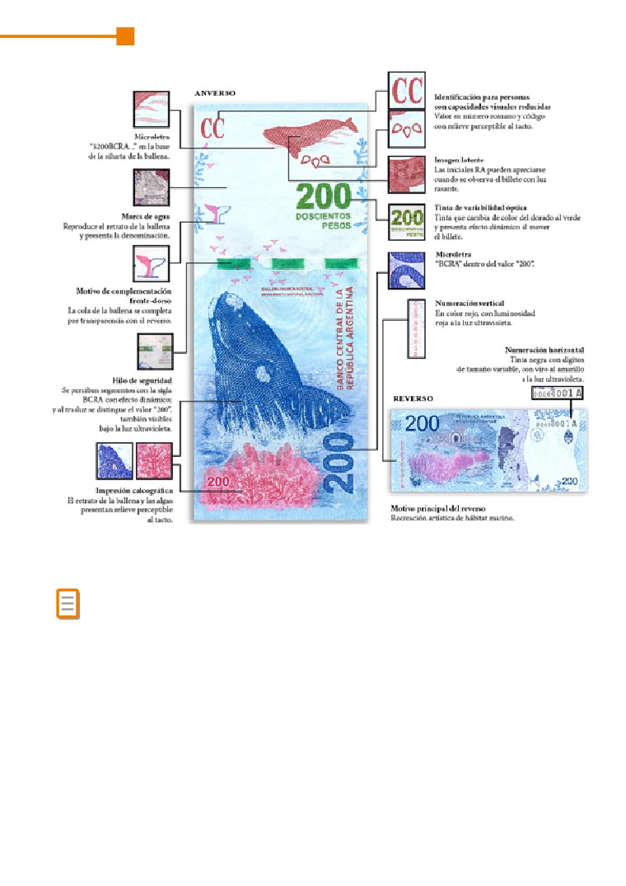

ECONOMÍA
C
Guía de estudio
Educación Adultos 2000
*Material de distribución gratuita
Ministra de Educación e Innovación
Soledad Acuña
Subsecretaria de Coordinación Pedagógica y Equidad Educativa
Andrea Fernanda Bruzos Bouchet
Subsecretario de Carrera Docente y Formación Técnica Profesional
Jorge Javier Tarulla
Subsecretario de Gestión Económico Financiera y Administración de Recursos
Sebastián Tomaghelli
Subsecretario de Planeamiento e Innovación Educativa
Diego Meiriño
Directora General de Educación de Gestión Estatal
Carola Martínez
Directora de Educación del Adulto y el Adolescente
Sandra Jaquelina Cichero
. 3 .
Primera impresión octubre - 2018
. 4 .
ECONOMÍA • C
Adultos 2000
Guía de Estudios
Economía C
Coordinador:
Vázquez, Laura
Equipo Docente:
Amitrano, Alejandro
Fernandez, Verónica Beatriz
Gutierrez, Andres Atilio
Kalikes, Marta
. 5 .
ECONOMÍA • C
Índice
Presentación de la asignatura
8
Programa de la asignatura
8
Objetivos de aprendizaje
10
Orientaciones de estudio
11
UNIDAD 1 Introducción a las problemáticas económicas
13
1.1 Introducción
13
1.2 La escasez y la actividad económica del hombre
13
1.3 Mercado. Oferta y Demanda
25
1.4 Los sectores de la economía
34
Síntesis conceptual de la unidad
40
Actividades de integración
41
Actividades de autoevaluación
42
UNIDAD 2 La organización social de la produccion y
el estado
46
2.1 Introducción
46
2.2 La empresa, sus objetivos y su función social. Los recursos, los costos y los ingresos
de la empresa. Las fuentes de financiamiento de las actividades de la empresa
46
2.3 El gasto público. Las fuentes de financiamiento del Estado
55
2.4 La medición de la actividad económica. El Producto Bruto Interno.
Otros indicadores
68
Síntesis conceptual de la unidad
78
Actividades de integración
79
Actividades de autoevaluación
80
UNIDAD 3 Dinero, bancos y comercio internacional
87
3.1 Introducción
87
3.2 El dinero
87
3.3 Entidades bancarias
94
3.4 Comercio internacional
101
Síntesis conceptual de la unidad
107
Actividades de integración
108
Actividades de autoevaluación
109
UNIDAD 4 Operaciones comerciales, documentación
respaldatoria, presentacion de la informacion contable
110
4.1 Introducción
110
4.2 Las operaciones comerciales de la empresa
110
4.3 Proceso de toma de decisiones dentro de la empresa.
La contabilidad como sistema de información
116
Actividades de integración
129
Actividades de autoevaluación
131
Respuestas de las actividades de autoevaluación
133
. 7 .
Presentación de la asignatura
Introducción
Esta asignatura propone un acercamiento sistemático al campo de la economía. Por tal
motivo, los contenidos seleccionados presentan una visión introductoria y general acerca
de las actividades y procesos económicos, y promueven una aproximación al estudio de los
conceptos básicos del campo.
Las sociedades modernas, como consecuencia de su complejidad creciente, se
caracterizan por una mayor interdependencia entre las actividades económicas de los
diversos agentes individuales y colectivos. Los cambios económicos, sociales y políticos
mundiales se producen actualmente a una mayor velocidad, a la vez que las múltiples
dimensiones que atraviesan sus causas y efectos dificultan la elaboración de pronósticos.
Esta situación contribuye a generar mayor incertidumbre respecto del devenir de las
relaciones sociales.
Los fenómenos económicos atraviesan la vida cotidiana de las personas, muchas veces
nos vemos decidiendo en qué vamos a gastar nuestro ingreso, pensando en la posibilidad
de ahorrar si nuestros ingresos lo permiten, opinando sobre el alza de precios o sobre
los beneficios o contras de las políticas públicas en materia económica. Es aquí donde el
estudio de ciertos conceptos económicos se hace imprescindible para un adulto egresado
del nivel medio de educación.
Poder leer una noticia, escuchar a los periodistas especializados en economía o,
simplemente, entender una charla entre amigos o familiares sobre temas económicos,
es importante para el desarrollo de las personas como ciudadanos/as. Además, su vida
cotidiana se encuentra atravesada por su contacto permanente con organizaciones con
las cuales interactúa como trabajador, autónomo o en relación de dependencia, o como
consumidor o usuario; por ello necesita disponer de herramientas conceptuales que le
permitan el desarrollo de sus actividades diarias.
Consideramos que para un estudiante adulto, estas competencias son fundamentales,
por lo cual el aporte de la materia resulta de importancia en la medida en que ofrece a
los estudiantes conceptos que les permitan reconocer y comprender las problemáticas
económicas dentro del marco social específico donde se producen y adquirir herramientas
que faciliten la toma de decisiones para actuar.
En un nivel más general se procura favorecer en los estudiantes la comprensión de los
principales problemas económicos que enfrenta la sociedad, analizando la interrelación de
los diversos fenómenos económicos y sus implicancias sociales, así como la interpretación de
diversas problemáticas socioeconómicas a partir del uso de las herramientas conceptuales
aprendidas y del análisis de distintas fuentes de información.
Programa de la asignatura
UNIDAD 1: Introducción a las problemáticas económicas
1.1 Introducción a la unidad
1.2 La escasez y la actividad económica del hombre
1.2.1 La escasez: una cuestión central
1.2.2 La sociedad como formación histórica
1.2.3 La relación entre la escasez de recursos y el bienestar social: los problemas
económicos básicos
. 8 .
ECONOMÍA • C
1.2.4 La actividad económica del hombre
1.2.5 La economía como ciencia social. Niveles de análisis económicos: microeconomía y
macroeconomía
1.2.6 Las necesidades humanas y su satisfacción. Los Bienes y su clasificación
1.3 Mercado. Oferta y Demanda: formación de precios en el mercado
1.3.1 Formación de precios en el mercado
1.3.2 Demanda
1.3.3 Oferta
1.3.4 Mercado: concepto, distintos tipos de mercado
1.4 Los sectores de la economía
1.4.1 Sector primario, secundario y terciario
1.4.2 Los factores de la producción
1.4.3 Los agentes económicos y el circuito económico simple: el flujo circular del ingreso
UNIDAD 2: La organización social de la producción y el Estado
2.1 Introducción a la unidad
2.2 La empresa, sus objetivos y su función social. Los recursos, los costos y los ingresos
de la empresa. Las fuentes de financiamiento de las actividades de la empresa
2.2.1 La empresa, sus objetivos y su función social
2.2.2 Los recursos, los costos y los ingresos de la empresa
2.2.3 Las fuentes de financiamiento de las actividades de la empresa
2.3 El gasto público. Las fuentes de financiamiento del Estado
2.3.1 Las funciones del Estado
2.3.2 El gasto público: gastos corrientes, de inversión y transferencias
2.3.3 Fuentes de financiamiento del Estado: los impuestos y las contribuciones a la
seguridad social. Distintos tipos de impuestos
2.4 La medición de la actividad económica. El Producto Bruto Interno. Otros indicadores
2.4.1 Medición de la actividad económica
2.4.2 Producto Bruto Interno (PBI)
2.4.3 Otros indicadores: El costo de vida. La Inflación. Distribución del ingreso. Índice de
desarrollo humano
UNIDAD 3: Dinero, bancos y comercio internacional
3.1 Introducción
3.2 El dinero
3.2.1 Desarrollo del dinero
3.2.2 El dinero y sus diversas formas
3.2.3 Funciones del dinero
. 9 .
3.2.4 Moneda de curso legal en Argentina
3.2.5 Divisas
3.3 Entidades bancarias
3.3.1 Banco Central de la República Argentina (BCRA)
3.3.2 La base monetaria y las reservas
3.3.3 Clases de deuda pública
3.3.4 Los Bancos
3.3.5 Bancos comerciales
3.3.6 Dinero bancario
3.3.7 Esquema de creación del dinero bancario
3.3.8 Definición práctica del dinero
3.3.9 Dinero plástico
3.4 Comercio internacional
3.4.1 Introducción
3.4.2. Ventajas y desventajas del comercio internacional
3.4.3. Medidas intervencionistas
3.4.4 Balanza comercial
3.4.5 Cláusulas internacionales
3.4.6 Regímenes de comercio vigente
UNIDAD 4: Operaciones comerciales, documentación respaldatoria y presentación de la
información contable
4.1 Introducción
4.2 Las operaciones comerciales de la empresa
4.2.1 Nociones sobre compraventa. Precio
4.2.2 La fuente de obtención de datos
4.3 Proceso de toma de decisiones dentro de la empresa. La contabilidad como sistema
de información
4.3.1 El Patrimonio. Elementos patrimoniales. Las variaciones patrimoniales
4.3.2 La relevancia organizacional de los registros contables. Los libros contables
obligatorios
4.3.3 Las cuentas y su clasificación. Presentación de la información contable
Objetivos de aprendizaje
• Reconocer el carácter social e histórico de las formas en que las sociedades enfrentan
la satisfacción de las necesidades y la administración de los recursos.
• Reconocer y analizar los hechos económicos que forman parte de la vida cotidiana y
el contexto en el cual se desempeña el estudiante.
• Distinguir el objeto de estudio de la macro y microeconomía.
. 10 .
ECONOMÍA • C
• Identificar la oferta y la demanda de bienes y la formación del precio en un mercado.
• Reconocer el circuito de intercambio entre las empresas como unidades de producción
y las familias como unidades de consumo.
• Conocer los sectores de la economía: primario, secundario y terciario, y la naturaleza
de las actividades económicas desarrolladas en cada uno de ellos.
• Identificar las fuentes de obtención de recursos del Estado y de otras organizaciones.
• Comprender nociones generales sobre impuestos y, en particular, la operatoria del
impuesto al valor agregado y su incidencia en el consumo.
• Comprender la intervención de los Bancos en la economía, las operaciones que se
realizan en los mismos y las diversas formas de pago que se han generado.
• Identificar distintos tipos de operaciones comerciales y los comprobantes que
respaldan dichas operaciones.
• Comprender la estructura patrimonial, sus modificaciones y su importancia en la toma
de decisiones.
Bibliografía propuesta
-Pablo Maas, José E. Castillo. «Economía». Editorial Aique.
-Francisco Mochón-Víctor A. Becker. «Elementos de micro y macro economía». Editorial
Mc Graw Hill.
-Alicia Barroso de Vega, Ana María Liporace. «Introducción a la contabilidad básica». Ed.
Plus Ultra.
Orientaciones de estudio
¿Qué contiene esta guía de estudio?
Esta guía contiene 4 unidades de aprendizaje. Cada unidad contiene:
• Una introducción: es una descripción breve del contenido de la unidad y el enfoque
que se la da en el tratamiento de los temas.
• Desarrollo de los temas: se explica cada ítem del programa, con subítems en algunos
temas.
• Para aprender más…: es un apartado en el cual se le proporcionan textos, guías de
lectura, videos, páginas de internet y que tienen como finalidad que si en alguno o
todos los temas el estudiante quisiera profundizar contenidos pueda acceder a ellos.
No es obligatoria su lectura, pero en la mayoría de los casos corresponden a temas
de actualidad que a algún estudiante pueda interesarle particularmente. Este material
complementario no será evaluado.
. 11 .
• Actividades principales: son actividades que encontrará luego de cada tema o grupo
de temas y que lo ayudarán a sintetizar y afianzar el contenido estudiado. Cada una
tiene su objetivo y su consigna de trabajo.
• Síntesis conceptual de la unidad: es un esquema de síntesis de contenidos, similar a
un mapa conceptual, que sintetiza toda la unidad.
• Actividades de integración: son actividades que contienen una consigna en base a la
lectura de textos, observación de videos o lectura de páginas de internet. Integran y
profundizan los contenidos vistos en la unidad
• Actividades de autoevaluación: son actividades diversas que atraviesan todos los
contenidos de la unidad. Encontrará varias con formato cerrado (completamiento, V o
F, marcar opciones correctas) y otras en las cuales deberá contestar alguna pregunta
o justificar algún párrafo. Estas actividades tienen como finalidad que pueda evaluar
su propio aprendizaje volviendo a repasar los temas en caso que no pueda resolverlas
correctamente.
En cada unidad encontrará links que lo llevarán a ver videos o páginas de internet,
especialmente elegidos para una mejor comprensión del tema. Si bien puede estudiar sin
ellos, le aconsejamos verlos debido a que hacen más compresible y menos monótono el
aprendizaje.
¿Cómo estudiar y cómo utilizar esta guía de estudio?
Es muy importante que a medida que Ud. vaya avanzando con el aprendizaje de los
distintos contenidos, pueda realizar una síntesis de ellos, confeccionar un apunte con las
ideas principales que extraiga de cada punto. Asimismo, la confección de cuadros sinópticos,
mapas de conceptos y otros elementos gráficos pueden ayudarlo a visualizar mejor los
contenidos. Le aconsejamos recurrir a estas herramientas de estudio, a través de las cuales
obtendrá mejores aprendizajes.
Luego de la lectura de cada contenido, deberá resolver las actividades de cada tema
antes de avanzar con el contenido siguiente.
Finalizada la unidad, es importante que observe con detenimiento la síntesis conceptual
y pase a resolver las actividades de integración y autoevaluación.
Es muy importante que pueda contactarse con el equipo de la materia en forma personal
o a través del mail o del buzón de actividades.
Nuestra función es acompañarlo en el proceso de aprendizaje y ayudarlo a resolver las
dudas que se le vayan planteando.
¡ Bienvenido al estudio de la economia !
. 12 .
ECONOMÍA • C
UNIDAD 1 Introducción a las problemáticas económicas
1.1 Introducción
Tal como dijimos en la presentación, los fenómenos económicos atraviesan la vida de
las personas. En lo cotidiano, muchas veces nos vemos decidiendo en qué vamos a gastar
nuestro dinero, cuál es el ingreso que tenemos, muchas otras pensamos en la posibilidad de
ahorrar si nuestros ingresos lo permiten, nos preocupamos por el alza de precios, opinamos
sobre la política del gobierno en materia económica, leemos noticias, escuchamos programas
periodísticos sobre temas económicos. Los problemas de la economía se han convertido en
una parte importante de nuestra vida.
¿Alguna vez nos pusimos a pensar por qué nos preocupamos tanto por los temas
económicos?
La respuesta es en principio sencilla. No obstante, lo invitamos a pensar en algo en lo que
tal vez nunca se detuvo.
¿Alguna vez nos pusimos a pensar
por qué nos preocupamos tanto por
los temas económicos?
La respuesta es en principio sencilla. No obstante, lo invitamos a pensar en algo en lo que
tal vez nunca se detuvo.
1.2 La escasez y la actividad económica del hombre
1.2.1 La escasez: una cuestión central
La escasez surge debido a que no son parejas las necesidades humanas y los recursos
disponibles. Hay un desequilibrio entre las necesidades de los hombres (que, como ya
veremos, son ilimitadas) y los recursos disponibles para poder satisfacerlas.
Pensemos en que tenemos alguna necesidad y lo que necesitamos para satisfacerla fuera
ilimitado ¿sería necesario hacer algún tipo de esfuerzo para conseguirlo? Obviamente que
la respuesta es NO. Si todo lo que quisiéramos para satisfacer todas nuestras necesidades
fuera ilimitado y lo tuviéramos al alcance de nuestra mano, no necesitaríamos trabajar para
recibir un salario, ni sembrar para obtener alimentos, no habría impuestos que pagar ni los
bienes tendrían precio. Por lo tanto, el esfuerzo humano por conseguirlos tampoco existiría
y de esta manera no habría actividad económica.
Esto nos lleva a la afirmación del título de este ítem. «La escasez de recursos es la cuestión
central, es el principal problema económico».
Le proponemos ver el siguiente video que le facilitará comprender la escasez de recursos
y le permitirá tener una visión global del concepto de economía (el tema que nos ocupa
se desarrolla hasta el hasta el minuto 3.43)
. 13 .
1.2.2 La sociedad como formación histórica
Desde las sociedades más primitivas, el hombre ha buscado la forma de satisfacer sus
necesidades. En la historia de la humanidad se identifican diversas formas de llevar a cabo
actividades de producción que le permitan al hombre el consumo de aquello que necesita
para vivir. Las relaciones sociales entre los hombres en el proceso de producción, de
distribución y de consumo fueron evolucionando y cambiando en las diversas sociedades.
Cada etapa ha tenido su particularidad, sus propias leyes económicas. Cada etapa fue
dejando lugar a otra. La evolución en la forma en que los hombres se relacionaban, en
las formas que tomaba el pensamiento humano y en el surgimiento de diversas formas
de producción, han dejado paso a otras etapas nuevas, cambiando el modo anterior de
producción por otro más nuevo, lo que lleva además a la transformación de todos los demás
aspectos de la vida de la sociedad.
Las actividades económicas por excelencia durante el paleolítico eran la caza, la pesca
y la recolección de frutos, como así también la fabricación de utensilios, armas, abrigo y
vivienda, pues conformaban el trabajo que el hombre debía realizar para satisfacer sus
necesidades básicas.
Con el desarrollo de la agricultura, las actividades económicas fueron diversificándose,
pues para sembrar, cosechar, almacenar y distribuir los alimentos fue necesario generar
otras actividades tales como la alfarería, la cestería, la arquitectura, etc. La diversificación
de actividades tuvo como consecuencia la diferenciación y especialización del trabajo. Así,
mientras algunos serán campesinos otros eran artesanos. Se diversificaron las actividades
productivas, las manuales y las intelectuales. Esto llevó a la división del trabajo y a que cada
persona pudiera intercambiar aquello que producía de más. Este fue el origen del comercio,
progresivamente se fue generalizando el intercambio de bienes y servicios. Al comienzo
en forma de trueque ya que las personas intercambiaban bienes o servicios por otros, sin
utilizar el dinero como se lo conoce hoy en día. Como era difícil medir el valor exacto de lo
que se entregaba y lo que se recibía, fue necesario tomar algún elemento común. El primer
elemento que se usó como medida de cambio fue la sal, ya que era muy útil y apreciada por
todos. Como este elemento era perecedero así como tantos otros que se seguían utilizando
como forma de pago, comenzaron a utilizar los metales preciosos, especialmente oro y
plata. Este fue el origen de la moneda propiamente dicha.
Una curiosidad…
¿Mito o verdad?
La sal era uno de los bienes más preciados en los
comienzos del comercio.
Era un elemento tan costoso que se tenía especial cuidado
en no derramarla.
Si observamos la foto e imaginamos que la sal va pasando de
mano en mano, es lógico pensar que la cantidad derramada
o desperdiciada sería importante.
Por este motivo, desde entonces se tomó como costumbre
no entregar la sal de mano en mano.
Se dice que esta costumbre llevó a la tradición actual de no
entregar la sal en mano.
¿Será verdad?
A partir del surgimiento de la sociedad capitalista y con el desarrollo de la vida urbana,
esta diversificación comenzó a acentuarse cada vez más.
. 14 .
ECONOMÍA • C
Esto se debió a que con el desarrollo de
El capitalismo
las actividades industriales y comerciales,
la mayoría de los seres humanos dejaron
El capitalismo es un sistema económico y social
de producir aquello que consumían
basado en:
(alimentos, vestimenta, etc.).
• La propiedad privada de los medios de producción.
El capitalismo generalizó el trabajo
• La importancia del capital como generador de
asalariado que consiste en recibir un
riqueza.
ingreso a cambio de jornadas laborales.
• La asignación de los recursos a través del
Es decir que muchas personas trabajan
mecanismo del mercado.
en empresas a cambio de un salario
Las características centrales del capitalismo son:
(palabra que deriva del latín salarium y
• El consumo y producción a gran escala.
significa pago con sal). Con ese dinero
adquieren los bienes y servicios que
• La concentración de población en las ciudades.
les son necesarios para satisfacer sus
• La aparición de clases sociales a raíz de la
necesidades tanto primarias como
distribución del ingreso.
secundarias.
Los procesos de producción y venta de mercancías conforman un circuito económico
que abarca desde la extracción de materias primas hasta su procesamiento y su oferta en el
mercado. Pueden producirse bienes, tales como vestimenta, muebles, casas, autos, zapatos,
alimentos, plantas, joyas, combustible, etc., o servicios tales como telecomunicaciones,
educación, viajes, cursos, operaciones bancarias, seguros, salud, etc.
En las sociedades precapitalistas las actividades de producción y consumo eran
resueltas por las familias, es decir que cada familia conformaba una unidad que producía
la mayor parte de lo que consumía. Por el contrario, en la sociedad capitalista estas
actividades están diferenciadas. Si bien la mayoría de las personas deben trabajar para
vivir, pues dependen de un salario, no producen aquello que consumen. En las ciudades la
mayoría de las personas no tiene oportunidad de producir aquellos bienes que satisfacen
sus necesidades. Por el contrario, utilizan su salario para adquirir los bienes y servicios que
necesitan.
Estas transformaciones en la organización de la economía implican un nuevo tipo de
relación entre producción y consumo que se encuentra mediatizada por el mercado. Es
decir que la mayoría de las personas trabajan a cambio de una retribución para diversos
tipos de empresas en las que se producen diferentes tipos de bienes o se realizan servicios.
Estos productos se ofrecen en el mercado y las personas pueden adquirirlos con el salario
o las ganancias percibidas por su trabajo.
En las sociedades modernas, la comercialización es una instancia intermedia que permite
relacionar la producción y el consumo.
De este modo, los consumidores conforman la demanda de productos en el mercado,
en tanto que las empresas conforman la oferta. Así, la relación entre oferta y demanda
depende de la comercialización.
Actividad 1
A continuación le proponemos realizar la siguiente actividad de lectura e interpretación
de textos.
Objetivo:
-El objetivo de esta actividad es que usted pueda identificar ideas principales en un texto y
realizar un esquema con ellas.
. 15 .
Consigna:
Relea el punto 1.2.2 y luego:
a) Identifique las ideas principales y confeccione su propio apunte con ellas.
b) Realice un cuadro sinóptico con los conceptos que considere importante incluir.
Actividad 2
Ahora que ya resolvió la actividad de lectura y comprensión de textos, le proponemos
realizar la siguiente actividad:
Objetivo:
-El objetivo de esta actividad es que usted identifique el proceso de formación de los
momentos y hechos históricos que dieron origen a la sociedad actual.
Consigna: Indique si los siguientes enunciados son V (Verdadero) o F (Falso).
a) El proceso de producción, distribución y consumo fue siempre igual hasta la aparición
de la sociedad capitalista. V / F
b) Las primeras actividades económicas fueron la recolección de frutos, la caza, la
pesca, la fabricación de utensilios, armas, abrigo y vivienda. V / F
c) La diversificación de actividades tuvo como consecuencia la división del trabajo y el
origen del comercio. V / F
d) El trueque se dejó de usar porque era difícil medir el valor de lo que se entregaba y
lo que se recibía. V / F
e) El primer elemento que se usó como medida de cambio fueron los metales preciosos.
V / F
Actividad 3
Objetivo:
-El objetivo de esta actividad es que usted diferencie a qué se refiere el texto cuándo habla
de bienes y de servicios.
Consigna: Tache lo que no corresponde en los paréntesis.
La vestimenta, los muebles, las casas, los autos, entre otros son (bienes/
servicios) mientras que las educación, los viajes, las operaciones bancarias,
entre otros, son (bienes/servicios).
A continuación se presenta una selección de videos y lecturas a las que puede acceder
si estuviera interesado en saber más acerca del proceso de construcción histórico de la
sociedad y de los sistemas económicos que han caracterizado a las diferentes épocas y los
diferentes países.
. 16 .
ECONOMÍA • C
1.2.3 La relación entre la escasez de recursos y el bienestar social. Los problemas
económicos básicos.
Tal como dijimos anteriormente, la escasez de recursos es el principal problema o el
disparador de la economía.
Como las necesidades humanas son ilimitadas y los recursos disponibles para satisfacerlas
son limitados, nos vemos forzados a elegir continuamente. Esto nos pasa en nuestra vida
cotidiana, cualquier alternativa por la que decidamos nos implica renunciar a otras cosas.
Como los recursos son escasos, cuando satisfacemos una necesidad, dejamos de satisfacer
otra. Es tan cotidiano esto que seguramente usted podrá pensar en muchos ejemplos para
esta situación. Por ejemplo, si decidimos pintar nuestra casa, tal vez tengamos que dejar de
lado la compra de algún electrodoméstico. O bien si decidimos comprar un electrodoméstico
dejaremos de lado la pintura de la casa, hasta tanto los recursos nos permitan hacerlo.
Muchas veces cuando empiezan las clases los gastos de la escuela son tan grandes que hay
que renunciar a otras cosas en ese mes y así sucesivamente, Elegir una alternativa dejará sin
efecto otras ya que los recursos son limitados. Sin duda, que es de un peso importante en
estas decisiones las «preferencias del consumidor», tema que también analiza la economía
y que veremos en esta unidad cuando hablemos de demanda. Cada consumidor elige, con
sus ingresos disponibles, qué consumir y qué dejar de consumir teniendo en cuenta sus
necesidades ilimitadas y los recursos escasos disponibles.
El problema económico fundamental entonces es la escasez.
Sin embargo, no es el único. Así como las familias toman este tipo de decisiones, las
empresas y el Gobierno, también tienen que tomar las propias. El Estado, por ejemplo, decidirá
si destinar más fondos a escuelas u hospitales o si utilizarlos en obras de infraestructura
o en otros fines. Las empresas podrán decidir entre incorporar nuevas maquinarias con
mayor tecnología o utilizar esos fondos en hacer más publicidades para su producto.
Sin duda que todos toman sus decisiones buscando siempre el mayor beneficio. Es por
esto que las decisiones que se toman a nivel estatal son tan importantes, ya que el beneficio
de estas decisiones influirá en el bienestar de la sociedad.
El Estado es el encargado, tal como desarrollaremos en la próxima unidad, de la provisión
de bienes y servicios públicos, de la búsqueda del pleno empleo y la estabilidad económica
y de la redistribución del ingreso. A partir de estas tres grandes funciones, las decisiones del
gobierno se manifiestan en la educación, la salud, la alimentación, la vivienda, la seguridad,
la erradicación de la pobreza, el desarrollo económico del país o región, etc.
Todos los países buscan entonces el mayor provecho de los recursos escasos, utilizándolos
de la mejor manera posible con el fin de satisfacer los deseos y las necesidades de los
individuos que viven en ella.
Por lo tanto, empresas, familias y Estado, relacionadas entre sí y sujetos a la escasez de
recursos, tienen que optar por determinadas alternativas. Esto da lugar al planteo de otros
problemas básicos a resolver que son, en definitiva, los determinantes de una Economía:
Problemas
económicos básicos
Para quién producir
Qué y cuánto producir
Cómo producir
Como podemos observar, en cualquier sistema económico, en cualquier tipo de economía, los
problemas básicos a resolver son qué y cuánto producir, cómo producir y para quién producir.
. 17 .
Si desea complementar la lectura de este tema, le proponemos mirar el siguiente video
que le permitirá entender estos problemas básicos:
Para sintetizar lo que explica el video vamos a decir:
a) ¿Qué y cuánto producir?
Tal como dijimos al comienzo de este punto, la escasez de recursos es el principal
problema o el disparador de la economía. Esta escasez hace que las empresas tengan
recursos limitados para producir. Por lo tanto, es imprescindible tomar la decisión de qué
bienes producir y en qué cantidad conviene producirlos. Esta decisión debe, además, estar
acorde con el consumo que realizan las familias, sus necesidades, sus gustos, sus hábitos de
consumo, la época del año y otras variables que puedan influir.
b) ¿Cómo producir?
Toda empresa busca siempre producir la mayor cantidad de bienes o servicios con la
menor cantidad de recursos posibles. Por lo tanto es imprescindible la decisión de cómo
producir debido a que esto permitirá determinar la forma en que se utilizarán los recursos,
eligiendo la técnica de producción y la forma más apropiada para producir eficientemente,
teniendo siempre en cuenta el factor tiempo.
c) ¿Para quién producir?
Insistiendo en los recursos limitados, entenderemos que habrá que decidir también, junto
con el qué producir, a quién irá dirigido. Es decir, pone el foco de su producción y de sus
recursos disponibles en un grupo de consumidores, decide cuál es el segmento al cual
dirigirá su producto.
En las economías centralizadas estas decisiones las toma el Estado, en las economías
de mercado, las toman las empresas, y en las economías mixtas, como ocurre en la gran
mayoría de los países, las toman las empresas sujetas en mayor o menor medida a la
intervención del Estado.
1.2.4 La actividad económica del hombre.
Con todo lo que aprendimos en el punto anterior, nos será fácil entender el concepto de
actividad económica.
Para satisfacer sus necesidades, el hombre realiza determinadas acciones que le permiten
disponer de los medios necesarios para lograr su fin.
REALIZAR ACCIONES
DISPONER DE MEDIOS
PARA LOGRAR FINES
Desde ya que el hombre se preocupará por realizar acciones para conseguir medios
que sean escasos (tal como dijimos en el punto anterior cuando hablamos de la escasez),
ya que los superabundantes no le requieren ningún esfuerzo. Entonces, la relación entre
las necesidades múltiples del ser humano y los recursos disponibles (que son limitados),
determina la actividad económica.
Por lo tanto podemos definirla de la siguiente manera:
La actividad económica es la actividad que realiza
el hombre, para obtener los recursos escasos que le
permitan alcanzar sus fines y satisfacer sus necesidades.
. 18 .
ECONOMÍA • C
Si desea complementar la lectura de este tema puede ver el siguiente video:
Actividad 4
Relea los puntos 1.2.3 y 1.2.4 y luego realice las siguientes actividades.
Objetivo:
-El objetivo de esta actividad es que usted pueda identificar cuál es el problema económico
fundamental y reconozca a la escasez como la desencadenante del proceso económico.
Consigna:
a) Identifique las ideas principales y confeccione su propio apunte con ellas.
b) Realice un cuadro sinóptico con los conceptos que considere importante incluir.
c) Realice una síntesis breve explicando la relación entre las decisiones económicas de
un gobierno y el bienestar de la sociedad.
Actividad 5
Objetivo:
-El objetivo de esta actividad es que usted defina el concepto de «actividad económica».
Consigna: Escriba en el recuadro la definición de Actividad económica.
Actividad 6
Objetivo:
-El objetivo de esta actividad es que usted pueda diferenciar actividades económicas de
aquellas que no lo son.
Consigna: Teniendo en cuenta la definición de actividad económica, nombre dos actividades
que no sean actividad económica y tres que sí lo sean.
Actividades que no son actividad económica
Actividades económicas
1)
1)
2)
2)
3)
. 19 .
1.2.5 La economía como ciencia social. Niveles de análisis económicos: microecono-
mía y macroeconomía
En el punto anterior definimos a la actividad económica como la actividad que realiza el
hombre, para obtener los recursos escasos que le permitan alcanzar sus fines y satisfacer
sus necesidades.
Esa actividad o esas acciones que el hombre realiza desencadenan la Economía.
El hombre es un ser social debido a que interactúa con otras personas, necesita de los
otros para sobrevivir, por lo tanto, vive en una «realidad social» en la cual los hombres se
relacionan entre sí. Pero a la vez también está rodeado de una «realidad física» constituida
por el mundo de la naturaleza y de las cosas materiales. Cuando se habla de cuestiones
económicas se piensa en cosas materiales (dinero, viviendas, alimentos, etc.), sin embargo,
si no existiera el hombre, estas cosas dejarían de tener valor.
Teniendo en cuenta esto podemos decir que la Economía está ubicada en la realidad social
que circunda al hombre y no en el mundo físico debido a que analiza el comportamiento
humano, la forma de actuar que lo lleva a decidir cómo utilizar los recursos disponibles para
satisfacer sus necesidades.
Estamos ahora entonces, en condiciones de definir la economía diciendo que es:
Una ciencia social que estudia la manera en que se administran los
recursos con el objeto de producir bienes y servicios y distribuirlos para
el consumo entre los miembros de la sociedad. Analiza los procesos de
producción, distribución y consumo de bienes y servicios.
Una ciencia es el conjunto de conocimientos que se organizan de forma sistemática y
que fueron obtenidos a partir de la observación de los fenómenos que se producen, cuáles
son las causas y los efectos de dichos fenómenos. A partir de este análisis surgen leyes y
principios que los explican.
Como mencionamos, la Economía es una ciencia social. No obstante, varias otras ciencias
brindan sus aportes para su estudio.
Le proponemos ver el siguiente video para reconocer la importancia del aporte de otras
ciencias a la ciencia económica:
A continuación relacionaremos la ciencia económica con las decisiones políticas que se
toman utilizando los aportes de esta ciencia.
Tal como explicamos anteriormente, las formas de producción y de intercambio se fueron
transformando con el tiempo. Los problemas económicos eran cada vez más complejos y
las relaciones entre personas, sociedades y países fueron evolucionando, por lo que distintos
pensadores comenzaron a reflexionar para encontrar respuestas a los fenómenos que se
iban presentando, además de brindar herramientas a los gobiernos para tomar decisiones
políticas en materia económica. Así es importante diferenciar a la ciencia económica en sí
misma, de la política económica que los países llevan a cabo.
Cuando hablamos del bienestar de la sociedad, dijimos que las decisiones del gobierno
se manifiestan por ejemplo en la educación, la salud, la seguridad, la erradicación de la
pobreza, el desarrollo económico, entre otras, y que todos los países buscan entonces, el
mayor provecho de los recursos escasos, tomando las decisiones que crean más correctas,
con el fin último de mejorar el bienestar social. Éstas, son decisiones de política económica,
pero para ello, es necesario el aporte de la teoría o la ciencia económica.
. 20 .
ECONOMÍA • C
La ciencia económica estudia los fenómenos económicos y determina leyes y principios
que los explican. Estas leyes y principios son las herramientas que utilizan los políticos para
tomar las decisiones sobre economía. Por lo tanto, podemos hablar de Ciencia Económica
y de Política Económica.
Ciencia económica: estudia fenómenos y determina leyes y principios.
Politica económica: utiliza las leyes que estudia la ciencia para aplicarlos a las decisiones
en un momento y lugar determinados.
Vamos a poner un ejemplo que pueda servirle para entender mejor estos conceptos:
Vamos a tomar un ejemplo de la vida cotidiana ya que todos en mayor
o en menor medida sabemos qué es la inflación, vivimos en un país
en el cual, en diferentes épocas y con diferentes gobiernos, hemos
atravesado etapas de inflación. Sin entrar en un análisis económico
profundo, podemos decir que la inflación es “el aumento sostenido
y generalizado del nivel de precios que provoca una pérdida del
poder adquisitivo de la moneda.” Esto significa que no solo los precios
aumentan sino que cada vez puedo adquirir menos bienes con mis
ingresos con mi dinero disponible (volveremos sobre este tema en
próximas unidades).
Volvamos al ejemplo:
Un país está atravesando por un momento de inflación. El gobierno decide disminuirla.
Esta es una decisión de política económica. ¿Cómo hace para lograr esto? Cuenta con su
ministro de Economía que es especialista en ciencia económica y que conoce las causas y
efectos de este fenómeno, ha estudiado las leyes y principios que lo rigen. En definitiva, se
toma una decisión de política económica utilizando los conocimientos que brinda la ciencia
económica.
Niveles de análisis: Microeconomía y macroeconomía
Para abordar el estudio de la ciencia económica se la suele dividir en dos partes que no
son más que dos formas de abordar el conocimiento de la misma ciencia. Las mismas se
denominan microeconomía y macroeconomía.
La microeconomía analiza todos los factores económicos y sus interrelaciones haciendo
foco en el estudio de los individuos en su calidad de consumidores, de las empresas en
su calidad de productoras de bienes y servicios y de las relaciones que se producen entre
ambas en el mercado. Por ejemplo, estudia las preferencias de los consumidores a la hora de
tomar la decisión de compra, cómo inciden estas decisiones en el precio de los productos
y por lo tanto en la venta de los mismos. Qué pasa con estas preferencias cuando el precio
varía, qué decide una empresa en cuanto a su producción, cómo son sus costos, etc.
La macroeconomía, en cambio, toma una visión global de los actores económicos y los
efectos de su accionar sobre la economía en su conjunto. Su propósito es conocer y actuar
sobre el nivel de actividad económica de un país o de un conjunto de países. Por ejemplo,
estudia las exportaciones e importaciones, la inflación, el Producto Bruto de un país, etc.
Resumiendo entonces, podemos decir que la microeconomía estudia el
comportamiento individual de los consumidores y de las empresas y su interrelación
en el mercado, mientras que la macroeconomía estudia el conjunto de la actividad
económica de un país.
. 21 .
Por ejemplo, si se estudia cómo aumentan los costos de producción por incorporar nueva
mano de obra a la empresa, se está haciendo un análisis microeconómico; mientras que si
leemos cuál es la inversión en educación que hará el gobierno para el próximo año estamos
frente a un análisis macroeconómico.
Actividad 7
Objetivo:
-El objetivo de esta actividad es que usted pueda extraer las ideas principales del texto,
identificar a la ciencia económica como una ciencia social y diferenciarla de la política
económica.
Consigna:
a) Relea el punto 1.2.5
b) Confeccione su apunte con las ideas principales.
c) Realice un cuadro sinóptico con los conceptos que considere importante incluir.
d) Explique la diferencia entre «ciencia económica» y «política económica».
Actividad 8
Objetivo:
-El objetivo de esta actividad es que usted pueda diferenciar los análisis micro y
macroeconómicos.
Consigna: Complete los espacios en blanco.
El estudio del comportamiento de las empresas y las familia en el mercado es estudiado
por la
, mientras que la actividad económica de un
país es estudiado por la
1.2.6 Las necesidades humanas y su satisfacción. Los bienes y su clasificación
Venimos diciendo desde el comienzo que el hombre realiza actividad económica cada
vez que lleva a cabo alguna acción que le permite obtener los medios para satisfacer sus
necesidades. Sabemos que para vivir tenemos que satisfacer necesidades de diverso tipo.
Así surge la existencia de un orden de prioridades en la aparición de las necesidades y en
su satisfacción. Algunas de ellas, como por ejemplo la alimentación, la vivienda, el abrigo,
son necesidades básicas que la humanidad ha tenido que resolver a lo largo de la historia.
Su satisfacción es condición básica para la vida. Con el paso del tiempo se ha modificado el
modo de satisfacerlas, han cambiado las elecciones de las personas. Las sociedades fueron
evolucionando, cambiando culturalmente y comenzaron a surgir otro tipo de necesidades
que tienen que ser satisfechas para mejorar la calidad de vida como la educación, la
tecnología, el esparcimiento, las actividades artísticas, deportivas y sociales. En una primera
instancia se clasificaron a las necesidades humanas en primarias y secundarias atendiendo
a esa prioridad de la que hablamos. No obstante, esta división ni es la única ni es tan estricta,
debido a que al ser progresivas e ilimitadas, van apareciendo nuevas y según la cultura, la
evolución científica y tecnológica y los deseos individuales a veces se pueden confundir. En
líneas generales, se denomina necesidades primarias a las necesidades de subsistencia y
secundarias a las demás. Reciben el nombre de secundarias, por no verse comprometida
la vida en su no satisfacción, lo que no significa que no sean importantes y hasta a veces
imprescindibles para algunas personas.
. 22 .
ECONOMÍA • C
Por supuesto que las necesidades varían de persona en persona y de cultura en cultura
y cuando se hacen presentes, generan la sensación de que «algo falta»; la necesidad es la
carencia de algo. Este concepto es sumamente importante en economía debido a que esa
carencia es la que desencadena el proceso de actividad económica, ya que buscaremos la
forma de satisfacerla con los recursos que estén a nuestro alcance.
Sintetizando entonces podemos decir que una necesidad es la carencia de algo, unida
al deseo por satisfacerla.
La evolución de la sociedad hizo que las necesidades humanas sean ilimitadas en relación
con los recursos existentes, volviendo de esta manera sobre el concepto de escasez de los
recursos como desencadenantes del proceso económico.
Es tan importante el concepto de necesidad humana en la economía, que hasta se puede
hablar de necesidades presentes y necesidades futuras. El hombre en general no piensa
solamente en procurarse lo que necesita hoy, sino que piensa en necesidades futuras y
prevenir el tener cómo satisfacerlas. Esto también genera un incremento en la actividad
económica debido a la necesidad de ahorro.
Actividad 9
Objetivo:
-El objetivo de esta actividad es que usted diferencie las necesidades primarias de las
secundarias.
Consigna: Elabore una lista de necesidades personales y consígnelas en un apunte
dividiéndolas en dos columnas en necesidades primarias y necesidades secundarias. Puede
realizar en el apunte un cuadro como el que se expone a continuación.
Necesidades primarias
Necesidades secundarias
1)
1)
2)
2)
3)
3)
Los bienes y su clasificación
En el punto anterior dijimos que las necesidades humanas son la carencia de algo, unida
al deseo de satisfacerla. Para satisfacer una necesidad se necesitan medios que cumplan
con ese fin. En economía todo aquello que satisface directa o indirectamente una necesidad
recibe el nombre de «Bienes».
¿Qué significa que los bienes pueden satisfacer directa o indirectamente una necesidad?
Explicaremos esto con un ejemplo: una persona tiene sed, por lo que decide comprar una
gaseosa y calmar la sed. En este caso está satisfaciendo directamente su necesidad. No
obstante, hay otros bienes que indirectamente hicieron que esta persona satisfaga su
necesidad, como por ejemplo, la maquinaria que utilizó la empresa productora de gaseosa
para poner su bien en el mercado.
De esta manera, y con esta explicación, podemos mencionar una de las clasificaciones
de los bienes que los clasifica en:
. 23 .
-Bienes de consumo o bienes de producción: son bienes de consumo aquellos
que satisfacen directamente las necesidades del hombre, en cuanto a su condición de
consumidor. Son aptos para el consumo y están disponibles para ello. Mientras que los
bienes de producción son los elementos materiales necesarios aplicados a la fabricación y
distribución de otros bienes. Son también llamados bienes de capital o bienes de inversión
ya que tiene que ver con el capital invertido por el empresario para la producción.
Tanto los bienes de consumo como los bienes de producción tienen la característica
que pueden desaparecer con el primer uso o bien servir para varios usos consecutivos. Por
ejemplo, si hablamos de bienes de consumo hay algunos que se usan una sola vez, como
puede ser un alimento, lo ya consumido no puede volver a usarse. Sin embargo hay otros que
pueden ser usados varias veces, de a poco van a ir gastándose pero no van a desaparecer
con el primer uso; como puede ser por ejemplo un par de zapatos. Asimismo vemos esta
característica en los bienes de producción. Existen bienes que una vez consumidos no
pueden volver a usarse, como por ejemplo el combustible de las máquinas, pero otros,
como las máquinas en sí, se usan varias veces sin desaparecer con el primer uso si bien se
van gastando.
Teniendo en cuenta esta característica de los bienes de consumo y de producción, existe
una subdivisión dentro de ellos, que los clasifica en:
Bienes durables y bienes no durables: los bienes durables son aquellos que si bien se
van desgastando con el uso, pueden ser utilizados en sucesivas oportunidades. Por ejemplo,
la ropa, un electrodoméstico, una maquinaria, el edificio de una fábrica, etc. Los bienes no
durables, en cambio, son aquellos que se agotan con el primer uso. Por ejemplo un alimento,
una bebida, el combustible para las máquinas, son todos bienes que una vez consumidos
desaparecen, no pueden ser consumidos nuevamente, por eso en economía se denominan
«no durables».
Existe un tipo de bienes que no podemos dejar de mencionar por su incidencia en las
variaciones de precios que producen y que analizaremos en los próximos puntos de esta
unidad. Son los bienes complementarios y los bienes sustitutos.
Los bienes complementarios son aquellos que generalmente se consumen juntos, o
bien que el consumo de uno de ellos, trae aparejado el consumo del otro. Hay muchos
bienes complementarios, para poner un ejemplo, podemos mencionar los automóviles y el
combustible, si aumenta el consumo de automóviles, aumentará el consumo de combustible.
Los bienes sustitutos son aquellos que pueden ser reemplazados unos por otros para la
satisfacción de una misma necesidad. Un ejemplo típico que siempre se utiliza en economía
es la carne vacuna, de cerdo, de pollo o de pescado. Si el precio de alguno de ellos aumentara
notablemente seguramente disminuiría su consumo y sería reemplazado por el consumo
de alguno de los otros bienes, esto sucede por ser sustitutos.
Para finalizar este tema, es importante aclarar que en general, se denomina «bienes»
a los objetos materiales, sin embargo, existe también el trabajo humano destinado a la
producción de «servicios». Ejemplos de servicios pueden ser: el trabajo que hace un pintor,
un profesor, un repartidor, un peluquero y muchos otros.
Le proponemos ver el siguiente video para sintetizar los conceptos de necesidades y
bienes y fijar los conceptos vistos:
. 24 .
ECONOMÍA • C
Actividad 10
Objetivo:
-El objetivo de esta actividad es que usted pueda identificar ideas principales del texto,
interpretarlas y realizar un cuadro sinóptico con la clasificación de los bienes.
Consigna:
a) Relea el punto 1.2.6.
b) Identifique las ideas principales del texto y confeccione su propio apunte.
c) Realice un cuadro sinóptico con la clasificación de los bienes.
1.3 Mercado. Oferta y Demanda
1.3.1 Formación de precios en el mercado
Durante el desarrollo de esta unidad hemos mencionado varias veces los términos,
consumo, consumidores, venta, empresas, mercado, precios. Estos términos son de uso
cotidiano y no necesitan mayores explicaciones cuando se trata de utilizarlos en el diálogo
cotidiano. Sin embargo, su conocimiento desde la ciencia económica nos permitirá aplicarlos
a la resolución de muchos problemas económicos y, por supuesto, comprender otros temas
del programa. Por lo tanto, comenzaremos el estudio de los mismos, recordando que el
abordaje de estos contenidos es propio del campo de estudio de la microeconomía.
En primer lugar vamos a relacionar los términos expresados más arriba para ir
acercándonos al concepto de oferta, demanda y mercado:
Los términos «consumo» y «consumidores» están relacionados con la demanda.
Los términos «venta» y «empresas» están relacionados con la oferta.
La interrelación entre ambos está relacionada con el «mercado» y los «precios».
Demanda
Consumidores
Oferta
Vendedores
Mercado
Demanda + Oferta
Precio
Teniendo esta primera aproximación a los términos enunciados pasaremos a su estudio.
1.3.2 Demanda
La demanda está formada por el conjunto de consumidores que quieren y pueden
adquirir un determinado producto. Indica la cantidad de un producto que el consumidor
está dispuesto y puede comprar.
El querer comprar está relacionado con un deseo de adquirir un determinado producto.
El poder comprar está relacionado con el dinero disponible para hacerlo.
Por ejemplo, es posible que una persona tenga el deseo de comprar un auto de alta
gama pero tal vez no tenga el dinero disponible para hacerlo, o viceversa, tal vez cuente con
ese dinero pero no tenga el deseo de adquirir ese bien. Al hablar del querer y el poder, de
desear y de tener el dinero para hacerlo, estamos hablando de que la decisión de adquirir
algo es una conducta racional que desarrolla un individuo a la hora de comprar. No se
compra todo ni cualquier cosa, se debe «pensar» y «elegir».
. 25 .
Como los bienes a adquirir por una persona o una familia son variados y se utilizan
para satisfacer distintos tipos de necesidades, esta conducta racional se expresa de una
manera concreta, ya que aunque se realice en forma inconsciente, siempre uno elige
algunas cosas y descarta o pospone la compra de otras buscando siempre la mayor
satisfacción de sus necesidades.
La teoría del consumo nos dice que cada persona o familia gasta su ingreso de manera
tal de obtener la mayor satisfacción posible, debido a sus necesidades diversas y casi
ilimitadas y a sus recursos escasos. Como la escasez es uno de los problemas económicos,
tal como dijimos en los primeros puntos de esta unidad, inevitablemente el consumidor se
encuentra obligado a elegir.
Y acá la pregunta «¿Cómo elige el consumidor?» es de fundamental importancia y
requiere de un análisis.
El primer factor a tener en cuenta es el precio. La relación que se plantea entre el precio
de un bien y la demanda del mismo, fue objeto de la enunciación de una ley que forma
parte, junto con otras leyes, de la ciencia económica y que dice:
«La demanda aumenta cuando el precio baja y disminuye cuando el precio sube.»
En otros términos, los consumidores compran menos cuando aumentan los precios.
En líneas generales (más adelante veremos algunas excepciones) cuanto más aumente el
precio de un bien, los consumidores están dispuestos o pueden comprar menos cantidad
de él.
Esto genera una relación inversa entre el precio y la cantidad demandada de un bien.
Por ejemplo, a una persona le gusta mucho leer y suele comprar cierta cantidad de
libros para satisfacer esta necesidad. Supongamos que compra 4 libros por mes a un valor
promedio de $100 cada uno. Si el precio de los libros aumenta a $ 150 es muy probable que
en un mes ya no compre 4 sino tal vez 3. Si al mes siguiente sigue aumentando el precio
de los libros y llega a $200, tal vez esta persona compre apenas 2 libros por mes y si sigue
aumenta y llega por ejemplo a $300, tal vez compre uno solo. Esta relación cantidad-precio
se puede ver reflejada en un gráfico que mostramos a continuación y que muestra cómo a
medida que el precio va aumentando, la cantidad demandada va disminuyendo.
Así como el precio de los bienes influye en la
cantidad demandada, es obvio que también influye
el nivel de ingresos que la persona tiene. En general,
podemos decir que cuanto mayor sea el nivel de
ingreso mayor será la cantidad demandada de bienes
(hay también algunas excepciones que veremos
más adelante).
Otro factor que incide a la hora de decidir la compra es el precio de otros bienes. En el
punto 1.2.3 cuando estudiamos los bienes, vimos que hay un tipo de bienes denominados
sustitutos. Recordamos que los bienes sustitutos son aquellos que pueden ser reemplazados
unos por otros para la satisfacción de una misma necesidad. En el caso que venimos viendo,
si el consumidor pudiera sustituir su lectura de libros por otro bien, (revistas, ebook, u
otros) tal vez deje de consumir dichos libros debido a su aumento de precios y comenzar a
consumir otro tipo de bienes que tenga la misma utilidad que los libros para la satisfacción
de la necesidad del consumidor.
. 26 .
ECONOMÍA • C
Por último hay otra variable que incide y se combina con las anteriores y que no se
puede dejar de lado cuando se analizan las elecciones de los consumidores. Estas son sus
gustos y preferencias. Si tomamos el ejemplo anterior, supongamos que el precio de los
libros aumente, pero que no haya otro bien que satisfaga las necesidades del consumidor,
puede ocurrir que si el consumidor es un amante de la lectura, aunque el precio aumente
igualmente continúe consumiendo dicho bien, tal vez a costa de dejar de consumir otros.
La influencia de la moda, por ejemplo, puede determinar que el individuo aumente la
demanda de un bien y disminuya la de otros, permaneciendo invariable el ingreso y todos
los precios del mercado. Los gustos de los consumidores se pueden alterar porque se
modifican con el transcurso del tiempo o por las campañas publicitarias.
La demanda de un bien se incrementará si de pronto a la gente le gusta más que antes
consumir ese bien. Por el contrario, la demanda de un bien caerá si la gente ya no prefiere
consumir ese bien.
Teniendo en cuenta las variables mencionadas:
Precio
Niveles de Ingresos
Precio de otros bienes
Gustos, modas
podemos decir que:
Debido a que la incidencia de estas
La relacion precio-demanda
variables hace que la demanda
no es exactamente lineal
aumente más o menos, según se
modifiquen las mismas.
Si la demanda cambia en casi la misma proporción que el cambio de precio se dice que
la misma es elástica, en cambio cuando la demanda no varía mucho a pesar del cambio de
precio se dice que la misma es inelástica.
Veamos algunos ejemplos para entender mejor este tema:
EJEMPLO 1: El precio de las entradas de teatro aumenta en gran medida. Sin duda, la
demanda va a comenzar a caer como en cualquier otro bien. Pero en este caso, su consumo
disminuye en la misma proporción que su aumento de precio. Estamos frente a un caso de
demanda elástica. Aumenta el precio, baja la demanda, baja el precio, aumenta la demanda
y esto en igual proporción.
En cambio, veamos qué pasa en el ejemplo 2:
EJEMPLO 2: Cuando precio de la carne vacuna aumenta, siguiendo la ley de la demanda,
podemos decir que la cantidad de carne consumida disminuye, los consumidores buscan
productos sustitutos como por ejemplo el pollo o el pescado. Pero la pregunta que debemos
hacernos para entender el concepto de elasticidad es si realmente el consumo disminuye
en proporción similar al aumento del precio, o si por el contrario, por más que el precio
aumente, igualmente se sigue demandando dicho bien, aunque en mínima disminución.
Esto generalmente ocurre con los bienes de consumo importantes para la salud, como
puede ser la leche, el pan, las carnes, las verduras, las frutas. Si bien ante aumento de
precios se buscan bienes sustitutos, nunca el consumo cae tanto. En este caso la demanda
no responde exactamente igual al incremento del precio, estamos frente a un caso de
demanda inelástica.
. 27 .
Demanda elástica: Es una demanda sensible a los cambios de precios, responde a los
mismos en igual proporción. Cambian los precios cambia la demanda.
Demanda inelástica: Es una demanda que no responde a los cambios de precios o
responde en menor proporción. Cambian los precios cambia la demanda, pero muy poco.
Actividad 11
Objetivo:
-El objetivo de esta actividad es que usted pueda identificar ideas principales del texto,
interpretarlas y realizar un cuadro sinóptico con las mismas.
Consigna:
a) Relea el punto 1.3.2.
b) Identifique las ideas principales del texto y confeccione su propio apunte.
c) Realice un cuadro sinóptico con las mismas.
Actividad 12
Objetivo:
-El objetivo de esta actividad es que pueda confeccionar un gráfico de demanda usted
mismo y relacionar los conceptos de demanda elástica e inelástica.
Consigna: Tome lápiz y papel y grafique la demanda que una familia realiza de carne vacuna
con los parámetros que se dan a continuación.
- En primer lugar confeccione una tabla de dos columnas «precio de la carne» y
«cantidad de kilos consumidos». Coloque los valores que se exponen en la siguiente
situación: «cuando el precio de la carne es de $50 el kilo, una familia consume 10 kilos
de carne por mes. Al mes siguiente el precio aumenta a $100, la familia disminuye un
poco el consumo de carne comprando 8 kilos. Al mes siguiente siguió aumentando
y ya cuesta $150 el kilo, con mucho esfuerzo económico la familia sigue comprando
carne pero en menor proporción, pudiendo adquirir apenas 6 kilos.»
- Una vez finalizada la tabla, pase a graficarla en un esquema de coordenadas como
el que vimos en la unidad, colocando el precio en el eje vertical y las cantidades en
el eje horizontal.
- Por último indique si la demanda que acaba de graficar es elástica o inelástica y
explique por qué.
1.3.3 Oferta
La oferta está formada por el conjunto de productores o vendedores que están dispuestos
a vender sus productos a cada uno de los posibles precios. En el punto anterior hablábamos
de la respuesta del consumidor ante las variaciones en los precios. En este punto lo veremos
desde otro punto de vista, qué ocurre con el productor con el aumento de los precios.
En primero lugar podemos decir que es lógico que a cuanto mayor valor se pueda vender
un bien más cantidad del mismo los productores querrán vender. Por lo tanto,
«La oferta aumenta cuando el precio sube y disminuye cuando el precio baja.»
. 28 .
ECONOMÍA • C
En otros términos, los vendedores desean vender
más cuando los precios están más altos. Esto genera
una relación directa entre el precio de un bien y la
cantidad ofrecida del mismo.
Por eso el gráfico de oferta nos muestra una curva
con una pendiente contraria a la que nos mostraba
en la demanda.
Así de esta manera podemos analizar lo siguiente,
vamos a presentar nuevamente ambos gráficos para que usted pueda verlos y observar el
siguiente análisis que nos llevará a entender cómo se forma el precio en el mercado.
Tengamos en cuenta que en el eje horizontal están representadas las cantidades y en el
eje vertical los precios.
Cuando el precio es de 100, la cantidad de unidades que se demandan son 4 y la
cantidad de unidades que se ofertan es 1, por lo tanto no hay coincidencia entre la oferta
y la demanda, asimismo, cuando el precio es de 400, la cantidad de unidades que se
demandan no llega a ser 1 y la cantidad de unidades que se ofertan es 4. Acá tampoco hay
coincidencia entre la oferta y la demanda. Para que la operación de compraventa se lleve
a cabo, debe haber un punto en el cual ambas se crucen. Ese es el punto de cantidades
iguales que los consumidores están dispuestos a comprar y los vendedores dispuestos a
vender. A ese punto se lo denomina punto de equilibrio y es el que determina el precio.
Vamos a presentar los gráficos en un mismo esquema para que pueda visualizarlo.
En este gráfico podemos observar que el punto de 2 unidades es el punto de equilibrio,
que determina el precio al cual se va a llevar a cabo la operación que en este caso es 200.
. 29 .
El siguiente video explica las construcciones de las curvas de oferta y demanda y el
punto de equilibrio (importante: El tema que nos ocupa en este ítem está desarrollado
hasta el minuto 2.05. Lo que resta del video ya no corresponde a los temas vistos, sin
embargo para aprender más puede verlo completo).
A continuación le proponemos realizar las siguientes actividades
Actividad 13
Objetivo:
-El objetivo de esta actividad es que usted pueda identificar ideas principales del texto,
interpretarlas y realizar un cuadro sinóptico con las mismas.
Consigna:
a) Relea el punto 1.3.3.
b) Identifique las ideas principales del texto y confeccione su propio apunte.
c) Realice un cuadro sinóptico con las mismas.
Actividad 14
Objetivo:
-El objetivo de esta actividad es que pueda confeccionar un gráfico de oferta y demanda
usted mismo.
Consigna:
a) Tome lápiz y papel; grafique en un mismo esquema, la oferta y la demanda de un
bien teniendo en cuenta los siguientes parámetros:
Precio
Cantidad
Cantidad
demandada
ofrecida
100
10
2
200
7
3
300
4
4
400
2
5
500
1
6
b) Indique en qué cantidad de unidades y a qué precio se dio el equilibrio en este caso.
Actividad 15
Objetivo:
El objetivo de esta actividad es que usted pueda interpretar los conceptos más importantes
de los puntos 1.3.2 y 1.3.3.
Consigna: Responda a las siguientes preguntas.
. 30 .
ECONOMÍA • C
a) ¿Qué es la oferta?
b) ¿Qué es la demanda?
c) ¿Por qué los compradores no consumen ciertos productos cuando el precio de los
mismos aumenta?
d) ¿Siempre que aumenta el precio de un producto, los consumidores dejan de comprar
dicho producto? ¿Por qué?
e) ¿Por qué comportamiento siguen los vendedores cuando el precio de los productos
que ellos venden aumentan?
f) ¿A qué se denomina punto de equilibrio?
1.3.4 Mercado
En varios párrafos de esta unidad hemos mencionado al «Mercado» sin entrar demasiado
en su estudio, entendiendo que es un concepto cotidiano que todos conocen, han
escuchado o mencionan habitualmente. Sin embargo, requiere de una breve explicación
para no confundir el concepto.
Desde el punto de vista económico el mercado es el lugar donde se encuentran la
oferta y la demanda de un bien o servicio, y como consecuencia de ese encuentro se
forma el precio.
Es importante no confundir el mercado con un «lugar físico». Siempre que pensamos
en un mercado pensamos en un lugar con negocios, locales, stands o tiendas que venden
determinados tipos de productos.
Desde ya que estos son mercados. Sin embargo, no es necesario que exista un lugar
físico determinado para que exista el «mercado». Un ejemplo claro de esto son las ventas
por Internet. Mientras haya quien venda y quien compre, mientras que se unan la oferta y la
demanda de un bien, podemos hablar de Mercado, aunque no haya un lugar físico que los
reúna. Existen mercados de bienes y de servicios; mercado de capitales (en el que precio
es el interés); mercado de trabajo (en el que el precio es el salario). En todos, los precios
siempre son determinados por la oferta y la demanda.
Los oferentes y los demandantes tienen perspectivas opuestas. El precio alto no es bueno
para la demanda, pero sí es bueno para la oferta y viceversa. Es por eso que el equilibrio se
da cuando ambas se encuentran.
En este sentido es importante que estudiemos algunos de los distintos tipos de mercados
que existen, ya que en algunos, las leyes de oferta y demanda vistas hasta acá no se manejan
de la misma manera.
. 31 .
El mercado que se asemeja más a lo visto hasta ahora es el mercado de competencia
perfecta.
Se denomina así a un tipo de mercado que tiene las siguientes características:
• Tiene mucha cantidad de oferentes y mucha cantidad de demanda.
• El producto que se ofrece y/o se demanda es similar en todos los casos (no es un
producto exclusivo o diferenciado).
• Los oferentes (personas o empresas productoras o vendedoras) pueden entrar y salir
del mercado cuando lo deseen.
Sin embargo, existen otros tipos de mercados que no tienen estas características. A
continuación le proponemos una actividad de reflexión con una serie de preguntas para
que usted mismo piense la respuesta, relacionando los contenidos vistos en este ítem.
•
¿Puede existir un único vendedor de un producto?
•
¿Puede suceder que un mismo producto sea ofrecido en el mercado por muy pocos
(dos o tres) vendedores solamente?
•
¿Qué ocurriría con el precio de un producto si el mismo fuera exclusivo y es ofrecido
por una sola persona o empresa?
•
¿La no existencia de bienes sustitutos beneficia que haya un mercado con un solo
vendedor?
Pensando en las respuestas a estas preguntas, nos acercamos a otros tipos de mercados
conocidos con los nombres de:
A) Monopolio
B) Oligopolio
C) Competencia monopolística
Vamos a explicar sintéticamente cada uno:
Existe Monopolio cuando existe un único vendedor u oferente de un producto. Si
este oferente decidiera retirarse del mercado, ese producto ya no existiría más. Además,
siendo el único productor/vendedor de ese producto, podría fijar el precio que quisiera,
debido que no tendría competencia. Esto hace que el vendedor único tenga poder sobre el
Mercado. Si bien es un mercado difícil de encontrar en estos días, es importante reconocer
la importancia que tiene por el predominio que el vendedor ejerce.
El Oligopolio es bastante parecido al Monopolio, pero un poco más flexible, debido a que
no hay un vendedor único pero sí pocos vendedores. Cuando un determinado producto
o servicio es ofrecido en el mercado por muy pocas empresas, también se genera un
predominio de estas en las decisiones. La competencia es muy poca y por lo tanto cada
una conoce precios y servicios de la otra. Es muy difícil la entrada como vendedor a este
tipo de mercados ya que suele suceder que grandes marcas lo dominan.
El mercado de competencia monopolística es muy similar al de competencia perfecta
en cuanto a la cantidad de oferentes y demandantes, pero se diferencia de éste en que el
producto que se ofrece no es homogéneo con el de otros. Vamos a poner un ejemplo de
esto para que se comprenda mejor. Si se trata de la venta de shampoo y crema de enjuague
existe una gran cantidad de oferentes y de demandantes y el producto que se vende es
homogéneo. En este caso estamos frente a un caso de competencia perfecta. Si se trata
de la venta de libros, también hay una gran cantidad de oferentes y de demandantes, sin
embargo el producto no es homogéneo, cada libro es único y distinto al otro, en este caso,
se trata de una competencia monopolística.
. 32 .
ECONOMÍA • C
Cantidad de empresas oferentes
Una empresa
Pocas empresas
Muchas empresas
Productos homogéneos o diferenciados
Monopolio
Oligopolio
diferenciados
Competencia Competencia
Perfecta
Monopolística
ES MUY IMPORTANTE ACLARAR que la oferta y la demanda en el mercado
juegan libremente haciendo fluctuar los precios, pero sin embargo, cuando
el Estado en su política económica decide intervenir en los precios por algún
motivo, este libre juego de oferta y demanda se altera, siendo el punto de
equilibrio inducido por el Estado.
A continuación se proporciona un link en el cual encontrará un video que explica con
términos muy claros los distintos tipos de mercados. Es importante aclarar que es un
video realizado en Costa Rica, por lo que el nombre de algunas empresas o alguna
situación puede diferir de lo que pasa en Argentina. No obstante, la explicación es clara
y puede servirle para complementar lo explicado acá. Por supuesto no es obligatoria su
consulta.
Actividad 16
Objetivo:
-El objetivo de esta actividad es que usted pueda identificar ideas principales del texto,
interpretarlas y realizar un cuadro sinóptico con las mismas.
Consigna:
a) Relea el punto 1.3.4.
b) Identifique las ideas principales del texto y confeccione su propio apunte.
c) Realice un cuadro sinóptico con las mismas.
. 33 .
1.4 Los sectores de la economía
1.4.1 Sector primario, secundario y terciario
La economía de todos los países está formada básicamente por tres sectores: primario,
secundario, terciario.
Cada país le da a cada sector, la importancia en crecimiento que determine su política
económica. En la mayoría de los países, el sector terciario es el de mayor importancia o
mayor participación en el Producto Bruto Interno (este tema lo estudiaremos en la próxima
unidad).
En los últimos tiempos se ha comenzado a hablar de un sector cuaternario de la
economía en el cual se incluye al sector del conocimiento, la tecnología de la información y
las comunicaciones.
Con la siguiente presentación aprenderemos a qué se dedica cada sector.
Los sectores economicos
Las actividades económicas se desarrollan en tres sectores.
Sector primario:
• Este sector está formado por empresas que se dedican a la extracción de
recursos naturales, como, por ejemplo, empresas agropecuarias, empresas
pesqueras, mineras, de explotación forestal.
Sector secundario:
• Está formado por empresas que transforman la materia prima en productos
terminados, es decir, por industrias. Por ejemplo, industria automotriz, industria
del calzado, industria de alimentos, etc.
Sector terciario:
• Este sector está formado por organizaciones y empresas que prestan Servicios
(como las actividades bancarias, educativas, de turismo) y por el Comercio.
. 34 .
ECONOMÍA • C
1.4.2 Los factores de la producción
Como vimos en el video introductorio y en varios puntos de esta unidad, la satisfacción
de las necesidades humanas requiere de la producción de bienes y servicios que permitan
satisfacerlas. Para que esa producción se pueda llevar a cabo, es necesario el empleo de
ciertos recursos. Los recursos que se utilizan en la producción de bienes y servicios reciben
el nombre de factores productivos o factores de la producción.
Para la producción de bienes es necesaria una serie de recursos que, si bien varían de
bien en bien o de servicio en servicio, se encuentran presentes siempre que hablamos
de producción.
Comenzaremos con un ejemplo: imaginemos que necesitamos fabricar una campera de
lana. ¿Qué recursos necesitaríamos para llevar a cabo la misma? Básicamente necesitaríamos:
a) La materia prima (por ejemplo, la lana para tejerla, el hilo para coserla).
b) Las herramientas o máquinas (máquina de tejer, agujas, tijeras, etc.).
c) El trabajo humano para llevar a cabo la producción.
Como podemos observar, estos tres elementos son fundamentales para esta producción,
pero si pensamos en cualquier otro bien o servicios, siempre se necesita de algún recurso
natural, algún bien de uso aplicado a la producción y el trabajo del hombre para llevarlo a
cabo.
Le solicitamos que tome papel y lápiz y confeccione una lista de recursos necesarios
que permitan la producción de una torta. Luego compárela con los elementos
mencionados más arriba.
Como podemos observar, siempre se necesitan de estos tres factores para producir, a los
cuales ahora denominaremos con el vocabulario técnico correspondiente.
Los factores productivos son:
• Tierra.
• Capital.
• Trabajo.
Los Factores de la producción se clasifican, tradicionalmente, en estos tres grandes
grupos y cada uno tiene un significado particular que pasaremos a analizar:
· Tierra: este factor incluye la tierra propiamente dicha y todos los recursos naturales
necesarios para la producción de otros bienes, por eso a este factor productivo se lo suele
denominar también Naturaleza. Ej.: campos, yacimientos de recursos minerales, fauna en
general, bosques para extraer madera, los cursos de agua para generar energía, etc.
· Capital: son todos los bienes aplicados a la producción de otros bienes. Ej.: edificios,
maquinarias, equipos, herramientas, etc.
· Trabajo: es el conjunto de tareas humanas ya sean físicas o intelectuales que intervienen
en los procesos productivos. En otras palabras, es el trabajo del hombre para producir bienes
y/o servicios. Ej.: un obrero, un capataz, un vendedor, un empleado administrativo, etc.
Si bien estos tres factores mencionados son básicos para llevar a cabo la producción, es
necesaria la coordinación de las actividades que se van a llevar a cabo. Por lo tanto, en la
actualidad podemos agregar un cuarto factor de la producción relacionado con la dirección
económica que lleva a cabo la empresa.
La empresa se constituye en la actualidad como el cuarto factor de la producción, debido
a que lleva a cabo la función de dirección y coordinación de los otros factores productivos.
. 35 .
Vamos a agregar un concepto muy importante en Economía, relacionándolo con los
conceptos de oferta, demanda y precio aprendidos en el punto anterior. La empresa
demanda factores de la producción que necesita para llevar a cabo el proceso productivo.
Los que ofrecen dichos factores son los individuos u otras empresas. Estos ofrecen su
trabajo ya sea físico o intelectual, ofrecen el capital necesario para producir en forma de
aportes de los socios, préstamos recibidos de particulares o empresas.
Como vimos anteriormente, la unión de la oferta y demanda forman el precio en el mercado,
por eso si decimos que las empresas demandan trabajo que ofrecen los particulares, la
unión de la oferta y demanda de trabajo forman una retribución denominada salario. La
unión de la oferta y la demanda de capitales forman una retribución denominada interes.
La unión de la oferta y la demanda de tierras (recursos naturales en general) forman una
retribución denominada renta.
Factores de producción
Tierra o
Renta
Naturaleza
Salario
Interés
Riquesa
Capital
Capital
Trabajo
Tierra
Tierra
Trabajo
Producto
Capital
Empresa donde se lleva a cabo la produccion
¿Qué reciben los factores productivos
por su participacion en el proceso de producción?
Tierra
Renta
Trabajo
Salario
Empresa
Beneficio
Capital
Interés
. 36 .
ECONOMÍA • C
Para sintetizar los contenidos aprendidos en este punto le proponemos mirar el
siguiente video:
Actividad 17
Objetivo:
-El objetivo de esta actividad es que pueda identificar las ideas principales del texto y
realizar una síntesis con ellas.
Consigna:
Relea el punto 1.4.1 y 1.4.2 y luego:
a) Identifique las ideas principales del texto y confeccione su propio apunte.
b) Realice un cuadro sinóptico con las mismas.
Actividad 18
Objetivo:
El objetivo de esta actividad es que pueda reconocer los sectores de la economía y los
factores de la producción.
Consigna:
a) Complete los espacios en blanco en el siguiente párrafo.
El sector primario de la economía se dedica a
, el secundario es el sector de la actividad
, y el terciario de las actividades de
,
como por ejemplo
Los factores de la producción son
,
y
,
aunque en este último tiempo se considera a la
como el cuarto factor productivo.
A continuación le proponemos ver la siguiente presentación animada que le servirá
de integración de los temas vistos en este ítem y de introducción al último tema de
esta unidad.
1.4.3 Los agentes económicos y el circuito económico simple:
el flujo circular del ingreso
Tal como vimos en el video los agentes económicos son las familias, las empresas y el
Estado.
Las actividades económicas son realizadas generalmente por grupos de personas y no
por individuos aislados. Estos grupos de personas se denominan «unidades económicas».
. 37 .
Si volvemos a la definición de Economía que vimos en el punto 1, veremos que «analiza
los procesos de producción, distribución y consumo de bienes y servicios». Las dos
actividades fundamentales del proceso económico son el consumo y la producción, ya que
la distribución es una actividad derivada de ambas.
Por lo tanto, las dos unidades económicas fundamentales son la unidad de consumo y la
unidad de producción.
La unidad de consumo es la familia debido a que es ella quien realiza las operaciones de
aplicar los bienes y servicios para satisfacer sus necesidades.
La unidad de producción es la empresa debido a que es ella quien realiza las operaciones
destinadas a producir dichos bienes y servicios.
Las unidades de consumo (familias) y las unidades de producción (empresas) constituyen
las células del sistema económico y se relacionan entre sí en un intercambio permanente
que forma un circuito denominado «circuito económico» en el cual también incide la acción
del Estado cuyas decisiones recaen sobre el accionar de ambas unidades económicas.
Recordemos entonces:
Las empresas
Mercado de
Las familias pagan
obtienen ingresos
los bienes y servicios
bienes y servicios
Las empresas venden
El mercado ofrece bienes
bienes y servicios
y servicios a las familias
Pagan impuestos
Pagan impuestos
Empresas
Familias
Estado
(producción)
(consumo)
Reciben infraestructura
Reciben servicios
y ayuda
públicos
Las empresas contratan
Las personas venden su
trabajadores
trabajo
Mercado de
Las empresas
Las familias
pagan salarios
trabajo
obtienen ingreso
El Estado interviene entre ambos cobrando impuestos para hacer frente a sus gastos,
otorgando subsidios a las familias y a las empresas e interviniendo en los diferentes
mercados. Todas estas actividades que lleva a cabo el Estado, difieren de un gobierno a
otro según sea la política económica que lleve a cabo.
Sintetizando:
Los agentes económicos de un país son tres:
• Familias: unidad de consumo: ofrecen los factores productivos (trabajo, capital, tierra)
y reciben a cambio la retribución por los mismos (salario, interés, renta). Reciben los
bienes y servicios para satisfacer sus necesidades y pagan un precio por ellos.
. 38 .
ECONOMÍA • C
• Empresas: unidad de producción: reciben LOS FACTORES PRODUCTIVOS (Trabajo,
Capital, tierra) con los cuales producen bienes y servicios Y RECIBEN A CAMBIO LA
RETRIBUCIÓN por los mismos (Salario, Interés, Renta). Ofrecen los bienes y servicios
a cambio de un precio con el que pagan la retribución a los factores productivos por
su participación en el proceso.
• Estado: establece impuestos, otorga subsidios al consumo (a las familias), otorga
subsidios a la producción de bienes y/o servicios (a las empresas).
Actividad 19
Objetivo:
-El objetivo de esta actividad es que pueda reconocer los agentes económicos y su
participación en el proceso productivo.
Consigna:
a) Identifique las ideas principales del texto y confeccione su propio apunte.
b) Realice un cuadro sinóptico con las mismas.
c) Confeccione un gráfico en el cual se exponga el flujo circular de dinero y bienes en
el cual se indique los agentes económicos.
. 39 .
Síntesis conceptual de la unidad
SÍNTESIS UNIDAD 1
Problema económico básico
ESCASEZ
determinante de la economía
- QUÉ
PROBLEMAS BÁSICOS
- CÓMO
PRODUCIR
DERIVADOS A RESOLVER
- PARA QUIÉN
ACTIVIDAD
CIENCIA
ECONÓMICA
ECONÓMICA
BIENESTAR
INDIVIDUAL Y SOCIAL
NECESIDADES
ANÁLISIS
ANÁLISIS
BIENES
MICROECONOMICO
MACROECONOMICO
- OFERTA
- DEMANDA
- Monopolio
- Oligopolio
MERCADO
- Comp. perfecta
- Comp. monopolis
AGENTES
ECONÓMICOS
- FAMILIAS
- EMPRESAS
- ESTADO
CIRCUITO
ECONÓMICO
. 40 .
ECONOMÍA • C
Actividades de integración
-El objetivo de estas actividades es pueda tener una visión más abarcadora del contenido
vistos en toda la unidad.
Consigna: Se proponen dos videos para ver y analizar con una guía de trabajo para resolver.
Le proporcionamos dos links en los cuales debe entrar.
servicios-que-es-economia
Guía de trabajo
VIDEO 1
a) ¿Cuál es la idea de ciencia que explica el video?
b) Defina el concepto de economía y la finalidad de la misma.
c) Explique qué son las necesidades y nombre su característica básica.
d) Explique y ejemplifique necesidades primarias, secundarias y complementarias.
e) ¿Cómo se satisfacen las necesidades?
f) ¿Qué son los bienes? ¿Qué son los bienes económicos?
g) Explique bienes de capital y de consumo, bienes intermedios y finales.
h) Relacione el concepto de necesidades complementarias con el concepto de bienes
complementarios visto en la unidad. Puede explicarlo con un ejemplo.
i) ¿Qué son la micro y la macroeconomía? ¿Qué analiza cada una?
VIDEO 2
Realice una breve síntesis luego de haber visto el video para explicar el circuito económico.
Puede complementar la explicación con lo explicado en la unidad.
Indique si las siguientes afirmaciones son V (verdadera) o F (falsa)
a) El trueque era usado por las personas para intercambiar bienes y servicios
V / F
por otros.
b) La actividad de un peluquero que corta el cabello se considera una
V / F
prestación de servicios.
c) Los recursos son ilimitados, las necesidades son escasas.
V / F
d) El estudio de las preferencias de los consumidores es efectuado por la
V / F
macroeconomía.
e) Un fósforo es un bien durable.
V / F
f) La cantidad de producto que el consumidor quiere y puede comprar es la V / F
oferta.
g) El punto de equilibrio es un punto de coincidencia entre la oferta y la
V / F
demanda.
h) El Mercado siempre tiene que tener un lugar físico.
V / F
i) El Mercado de Competencia perfecta es igual al Mercado de Competencia V / F
Monopolística.
j) Entre la unidad de consumo y la unidad de producción interviene el Estado.
V / F
. 41 .
Actividades de autoevaluación
Actividad 1
Responda a las siguientes preguntas:
1- En la sociedad actual, ¿el hombre produce todo lo que necesita para vivir?
2- Explique en qué consiste la especialización del trabajo.
3- ¿Cómo surge el comercio?
4- ¿Qué función cumple la comercialización?
5- En la actualidad, ¿quiénes forman la demanda del mercado? ¿Y la oferta?
Actividad 2
A continuación se presenta una lista de momentos históricos en forma desordenada.
Ordénelas cronológicamente relacionándolas con los números teniendo en cuenta que 1 es
la más antigua y 6 la más actual.
a) Trueque.
b) Producción y consumo en manos de cada familia.
c) Especialización del trabajo.
d) Producción a cargo de la empresa que forma la oferta y vende a consumidores
que forman la demanda.
e) Pago con metales.
f) Pago con sal.
Actividad 3
A continuación, se presenta una lista con diferentes «Bienes» y «Servicios». Usted deberá
diferenciarlos marcando una B si son bienes o una S si son servicios.
a) Una máquina
B / S
b) Una tijera
B / S
c) Un corte de pelo
B / S
d) Un automóvil
B / S
e) Un viaje en taxi
B / S
f) Dinero en billetes
B / S
g) Un terreno
B / S
Actividad 4
a) Complete el cuadro que está vacío en el siguiente esquema:
Problema economico
basico que desencadena el
proceso economico
b) Nombre los problemas económicos básicos y explique brevemente cada uno.
. 42 .
ECONOMÍA • C
Actividad 5
Complete los espacios en blanco en la siguiente oración:
«La actividad económica es la realización de acciones para obtener
que permitan alcanzar
y satisfacer
.»
Actividad 6
Marque con una «X» en la siguiente lista, las que considere que sean actividades económicas:
a) Comprar un abrigo.
b) Trabajar en una fábrica.
c) Practicar la caza deportiva.
d) Tomar sol en una plaza.
e) Fabricar muebles.
Actividad 7
Indique la verdad (V) o falsedad (F) de las siguientes afirmaciones. Justifique aquellas
que considere que son falsas.
1- El hombre vive en una realidad física constituida por elementos
materiales y en una realidad social constituida por su relación con otros
V / F
hombres.
2- La economía está inmersa en la realidad física que rodea al hombre.
V / F
3- La ciencia económica es una ciencia social.
V / F
4- La política económica estudia los fenómenos económicos y determina
V / F
leyes y principios.
Actividad 8
A continuación se exponen dos columnas que usted deberá unir con flechas. En la
columna de la izquierda se exponen situaciones estudiadas por la economía. En la columna
de la derecha los términos «MACROECONOMÍA» y «MICROECONOMÍA».
a. El nivel de pobreza disminuyó en los
últimos cinco años.
b. Debido al aumento de precio de la
carne, las familias consumen más pollo.
1. MACROECONOMÍA
c. La inflación aumentó un 20% en lo que
va del año.
2. MICROECONOMÍA
d. El costo de producción de las empresas
automotrices está estable.
e. El Estado solicitó un préstamo al exterior
para la realización de obras públicas.
. 43 .
Actividad 9
A continuación se presenta una lista con diferentes bienes y otra con su clasificación. Usted
deberá relacionar ambas. Recuerde que un mismo bien puede pertenecer a más de una
clasificación.
BIENES
CLASIFICACIÓN
Un paquete de galletitas
Un libro
De producción
Carne de vaca-carne de pollo
De consumo
Una licuadora
Durables
Un abrigo
No durables
Una casa
Complementarios
Una maquinaria
Sustitutos
Café-leche
Espectáculo de cine-espectáculo de teatro
Actividad 10
Indique si los siguientes enunciados son V o F.
a) La demanda es una relación inversa del precio debido a que cuando
V / F
el precio aumenta la demanda disminuye y cuando el precio disminuye
la demanda aumenta.
b) La leche infantil tiene demanda elástica debido a que cuando aumenta
V / F
el precio del producto inmediatamente la demanda disminuye en igual
proporción.
c) Las familias gastan su ingreso tratando de obtener la mayor satisfacción
V / F
a sus necesidades debido a la escasez de recursos disponibles.
d) La influencia de la moda puede determinar que una persona aunque
V / F
mantenga su mismo ingreso aumente la demanda de un bien y disminuya
la de otros.
Actividad 11
Relacione los distintos tipos de bienes o servicios con los distintos tipos de mercados
que se presentan. Recuerde que a un tipo de mercado puede corresponderle más de un
tipo de bienes o servicios.
BIENES O SERVICIOS
TIPO DE MERCADOS
a) Cremas corporales
b) Automóviles
1) Monopolio
c) Combustible
d) Gaseosas
2) Oligopolio
e) Electricidad
f) Red de agua pública
3) Competencia perfecta
g) Telefonía Celular
h) Televisión por cable
4) Competencia monopolística
i) Higiene femenina
j) Revistas
. 44 .
ECONOMÍA • C
Actividad 12
a) Complete la columna de las retribuciones para cada uno de los factores de la
producción que se consignan en el cuadro:
Factores de la
Retribucion
produccion
Tierra
Trabajo
Capital
b) Responda a la siguiente pregunta:
¿Por qué se considera a la empresa un factor de la producción y qué función cumple?
Actividad 13
A continuación se expone un gráfico perteneciente al flujo circular o circuito económico.
Ud. deberá completar cada espacio en blanco con una de las palabras de la lista.
a)
Lista de palabras para completar
-Familia
-Empresa
b)
-Bienes y Servicios
-Trabajo, Tierra, Capital
c)
d)
-Precio de los bienes y servicios
-Salario, Renta, Interés
e)
f)
. 45 .
UNIDAD 2 La organización social de la produccion y el
estado
2.1 Introducción
Como vimos en la Unidad 1 cuando hablamos de agentes económicos, en la actualidad
la empresa es la unidad económica de producción y la familia es la unidad económica de
consumo, constituyendo ambas, las células del sistema económico, relacionándose entre sí
en un intercambio permanente que forma un circuito denominado «circuito económico»,
en el cual también incide la acción del Estado, cuyas decisiones recaen sobre el accionar de
ambas unidades económicas.
Compras de bienes y servicios
Impuestos
Impuestos
FAMILIAS
ESTADO
EMPRESAS
Subsidios
Transferencias
Sueldos, intereses, beneficios
La empresa, como impulsor fundamental de la economía, ha cumplido diversos roles a
lo largo de la historia. No obstante, en la actualidad, la misma ha adquirido su significado
más amplio.
En el sistema económico, la empresa es, junto con los consumidores, uno de los tres
agentes de la actividad económica. El restante es el Estado que, en cumplimiento de
sus funciones y de acuerdo con la postura ideológica de sus gobernantes, interviene en
la actividad económica de la empresa integrando parte de su entorno con el cuál debe
interactuar. Esto da lugar a plantearse en qué consisten las funciones del Estado y qué
elementos lo integran, y a reflexionar si ellos realmente son determinantes en la construcción
del mismo. Esta reflexión aborda puntos tales como «el surgimiento del Estado y su origen»
y la importancia que tienen sus decisiones en la población.
Si bien las cuestiones fundamentales que trata el Estado debieran incidir en el bienestar
de la sociedad, para medir el impacto en la misma se debe recurrir a la Macroeconomía,
esta ayuda tanto en el diseño de políticas como en la evaluación de los cambios producidos
por las medidas económicas generales aportando importantes herramientas que permiten
visualizar la economía como un todo integrado. Las discusiones permanentes en torno al
rendimiento económico y a sus consecuencias distributivas, requieren de instrumentos de
análisis que faciliten la comprensión del alcance de las modificaciones en algunas de las
variables macroeconómicas claves.
2.2 La empresa, sus objetivos y su función social. Los recursos, los costos y los ingresos
de la empresa. Las fuentes de financiamiento de las actividades de la empresa
En esta primera parte de la unidad estudiaremos lo referido a uno de los agentes
económicos mencionados que es la empresa.
. 46 .
ECONOMÍA • C
2.2.1 La empresa sus objetivos y su función social
Una empresa es una organización dedicada a la producción y/o intercambio de bienes
o servicios. En la actualidad, el papel de las empresas se ha vuelto mucho más complejo
debido a fenómenos como la globalización o al avance incesante de las nuevas tecnologías
de la información y del conocimiento. Esta complejidad la ha convertido en un «sistema», es
decir, en una interrelación de recursos, personas y fines propios en permanente interacción
con el medio externo que la rodea.
Un sistema es un conjunto de elementos que interactúan y
¿A qué
se interrelacionan entre sí. Poseen normas y procedimientos
denominamos
propios de funcionamiento y el no cumplimiento de los
sistema?
mismos por parte de alguno de los elementos del sistema,
afecta el funcionamiento general.
La empresa actual, como también dijimos en la unidad anterior, tiene la función de
organizar y coordinar a los otros factores de la producción (Naturaleza, Trabajo y Capital),
además de gestionar para maximizar su beneficio.
A continuación transcribimos un párrafo de un artículo de Antonio Argandoña, Profesor
de la cátedra de «Responsabilidad social de la empresa» en la Universidad de Navarra,
España. La lectura de este párrafo le permitirá comprender la importancia de la empresa
como agente económico en la actualidad:
«La empresa con fines de lucro es, debe ser y seguirá siendo la institución central
de la economía moderna. Pero esto no significa que el objetivo de la empresa con
fines de lucro sea obtener un beneficio, del mismo modo que nosotros necesitamos
respirar para vivir, pero respirar no es el objetivo de nuestra vida». «El objetivo de
la empresa es producir bienes y servicios para satisfacer necesidades económicas y
sociales, para crear un empleo satisfactorio y remuneratorio, para obtener rendimientos
para sus accionistas y otros inversores, y para hacer una contribución positiva al
entorno social y físico en el que opera»… Debe conseguir todo eso con eficiencia,
garantizando la continuidad, donde aparece no solo la sostenibilidad económica,
social y medioambiental, sino también la ética.
Actividad 1
Objetivo:
-El objetivo de esta actividad es que usted pueda identificar los objetivos que persigue una
empresa y su responsabilidad social.
Consigna: Relea el punto 2.2.1 y luego responda a las siguientes preguntas.
1. ¿Cuál es la actividad principal de las empresas?
2. ¿Qué fenómenos han generado el crecimiento y complejidad que actualmente tienen
las empresas?
3. ¿El objetivo único y final de las empresas es la obtención de ganancias? Justifique
su respuesta.
4. Nombre dos objetivos de la empresa que se desprenden del texto de Antonio
Argandoña en los cuales se refleje la función social de la misma.
. 47 .
La empresa y su entorno
Las empresas son sujetos en permanente interacción con su entorno.
Internamente poseen una estructura en la que interactúan, sus recursos humanos, sus
recursos materiales, sus productos, sus normas y procedimientos, buscando siempre la
mejor interacción para lograr la mayor eficiencia en su funcionamiento.
La empresa, a su vez, interactúa con su entorno. El entorno es el conjunto de factores que
rodean a la empresa.
Este entorno puede ser específico (microentorno) o general (macroentorno). En el
primero se encuentran, por ejemplo, los clientes, los proveedores, los bancos, entre otros;
mientras que en el general se encuentran los factores económicos, tecnológicos, políticos,
sociales, entre otros.
De hecho, en la actualidad, los avances tecnológicos inciden en forma directa en la
mayoría de las empresas. La tecnología se encuentra presente en todo el desarrollo de la
actividad empresarial. La actividad comercial, la administrativa financiera y la producción
requieren y aprovechan cada vez más los avances tecnológicos. Los responsables técnicos
de las empresas tratan de alcanzar la cantidad óptima de producto final con una cantidad
dada de recursos. Si se produce un avance en los conocimientos técnicos se obtendrá una
mayor cantidad de producto con la misma cantidad de recursos. En forma permanente la
empresa es afectada por su entorno y a la vez muchas veces, las decisiones de la misma
afectan al entorno.
Por ejemplo, cuando hay cambios en la conducta de los consumidores esto puede afectar
las ventas de la empresa; cuando la empresa demanda trabajadores más capacitados, esto
recae en la actividad de las entidades formadoras de dichas capacidades.
- Consumidores
El entorno de
- Competidores
la organización
- Marcado
- Proveedores
Microentorno
- Económico
EMPRESA
- Tecnológico
- Social
- Político
- Ecológico
- Geográfico
Macroentorno
Actividad 2
Objetivo:
-El objetivo de esta actividad es que usted pueda reconocer el micro y macroentorno con
el cual interactúan las empresas e identificar cómo puede influir en la misma, un cambio en
alguna variable.
Consigna:
a) Indique en un gráfico cómo está formado el micro y el macroentorno de la empresa.
. 48 .
ECONOMÍA • C
b) Explique qué consecuencias cree Ud. que puede traer para una empresa:
-Un paro de actividades del sector al cual sus obreros están afiliados.
-Un cambio tecnológico en los procesos productivos de su fábrica.
-Un cambio de moda que afecta al producto que fabrica.
Clasificación de las empresas
Existe una cantidad innumerable de empresas de distinto tamaño, con distintas
actividades, con capitales públicos y/o privados, que operan en diferentes mercados. A los
efectos de conocer diversos tipos de empresas es que aprenderemos este tema que tiene
como objetivo ver la clasificación de las mismas según estas variables enunciadas.
a) En la unidad anterior vimos los sectores de la economía mencionando fundamentalmente
tres: el sector primario, el sector secundario y el sector terciario. La empresas se clasifican
según el sector de la economía en el que principalmente operan. De esta manera tenemos
empresas del sector primario, del sector secundario y del sector terciario.
• Empresas del sector primario: Son empresas dedicadas a la explotación de recursos
naturales, como por ejemplo, empresas petroleras, empresas mineras, empresas
pesqueras, entre otras.
• Empresas del sector secundario: Son las empresas industriales dedicadas a la
transformación de materias primas en productos elaborados. Por ejemplo, fábrica de
electrodomésticos, fábricas textiles, fábricas de automotores, etc.
• Empresas del sector terciario: Son las empresas que se dedican a la comercialización
y distribución de bienes en las mismas condiciones en que fueron adquiridos, sin
agregarles ninguna transformación, como puede ser una librería, un kiosco, una
farmacia; o bien a la prestación de servicios que son aquellas que proporcionan
su trabajo a otras personas a cambio de una retribución, como por ejemplo una
peluquería, una compañía de seguros, empresas de transporte, servicios profesionales
de médicos, contadores, abogados, entre otros.
b) Las empresas realizan sus actividades en diversos ámbitos geográficos. De esta
manera, hay empresas que operan en los mercados locales, ya sean regionales o nacionales,
y otras que exceden las fronteras de un país, operando en el mercado internacional. Así
podemos clasificar a las empresas en:
• Regionales: realizan sus actividades en una determinada región, provincia o localidad
• Nacionales: realizan sus actividades en todo el territorio nacional
• Internacionales: realizan sus actividades excediendo los límites de un país. Muchas de
ellas se establecen en dos o más países y reciben el nombre de Multinacionales. En el
país de origen se desarrolla la dirección pero las decisiones se toman y adecuan en
cada país interviniente.
c) Las empresas son formadas por personas que aportan un capital para comenzar a
operar. Muchas veces ese capital pertenece a particulares (capitales privados) y otras veces
ese capital pertenece al Estado. Por lo tanto, teniendo en cuenta quién es el dueño del
capital, las empresas se clasifican en:
• Públicas: formadas con capitales del Estado.
• Privadas: formadas con capitales privados.
. 49 .
• Mixtas: formadas por capital del estado y de privados.
• Concesionarias de Servicios Públicos: son empresas privadas que explotan bienes del
Estado mediante la figura jurídica de la concesión.
d) Las empresas tienen diferente capacidad económica, generalmente esta capacidad
económica está ligada al tamaño de las mismas. En líneas generales, podemos decir que
a mayor tamaño de empresa, mayor capacidad económica. Justamente ese es el motivo
por el cual, se suelen alentar políticas crediticias para pequeñas y medianas empresas
e incentivar la gestación de pequeños emprendimientos, con el fin de hacer crecer las
economías familiares y/o regionales.
No hay un parámetro fijo y claro para hacer la división en pequeña, mediana y gran
empresa, no obstante para medir su tamaño, se utiliza un conjunto de variables compuesto
por el monto anual de sus ventas, la superficie de su planta, la cantidad de personal, entre
otras. De esta manera encontramos:
• Microemprendimientos: es una forma de organización de pequeña escala. Son
administrados por los mismos emprendedores que trabajan ellos mismos en estas
empresas y generalmente no tienen empleados ya que se trata de emprendimientos
individuales que requieren baja inversión.
• Pequeña empresa y Mediana empresa: PyME.
• Gran empresa.
En casi todos los países del mundo, la mayoría de las empresas son Microemprendimientos
o PyMEs (pequeñas y medianas empresas). Estas generan más de la mitad del empleo y
una fracción importante del producto nacional (tema que veremos en esta unidad). En
varios países representan el sector más dinámico de la economía. Muchas de las grandes
empresas privadas comenzaron siendo microemprendimientos o PyMEs.
Actividad 3
Objetivo:
-El objetivo de esta actividad es que usted pueda aplicar los contenidos vistos en la
clasificación de empresas.
Consigna:
a) Realice un cuadro sinóptico que incluya la clasificación de las empresas.
b) Elija dos empresas conocidas en el mercado y clasifíquelas según los parámetros vistos.
La empresa y el mercado
La regionalización y la globalización de los mercados han cambiado en el panorama
comercial. Se tiene que actuar en mercados muy competitivos, que ofrecen productos que
son fruto de tecnologías muy modernas.
En una economía como la actual, para que una empresa tenga éxito y perdure, debe
lograr una cantidad suficiente de clientes dispuestos a adquirir sus productos o servicios
y para ello deben mantener una relación precio-calidad que satisfaga las necesidades y
posibilidades de los demandantes.
Los países entonces, se agrupan en bloques para fortalecer la comercialización de
su producción. Por ejemplo el MERCOSUR: Proyecto de integración económica entre
Argentina, Brasil, Paraguay, Uruguay, Venezuela.
. 50 .
ECONOMÍA • C
Su objetivo es hacer más eficientes las economías mediante el crecimiento con planes
de expansión hacia nuevos mercados, potenciando las fortalezas de cada uno de los
Estados miembro.
2.2.2 Los recursos, los costos y los ingresos de la empresa
Costos e ingresos de la empresa
En el mundo actual, podemos decir que existe una relación entre los costos, la producción
y los ingresos de las empresas.
Los costos son los gastos que deben realizar las empresas para producir una cierta
cantidad de bienes o servicios en un período determinado.
El ingreso es el valor que recibe la empresa por la venta de sus productos y se determinan
multiplicando la cantidad de unidades vendidas por el precio de venta de los mismos.
La diferencia entre ingresos y costos determinan la rentabilidad por ventas.
Cuanto mayores son los costos que tienen las empresas, el valor final de la producción
es mayor. Este dato por sí solo no nos da una estimación de la rentabilidad que puede
tener la empresa, debido a que la misma depende de los ingresos que se obtienen en la
venta de dicha producción. Lo que sí es claro es que a mayores costos, se deben vender
los productos a mayor valor para mantener la rentabilidad deseada. Sin embargo, el precio
de venta fijado simplemente como costos más ganancia deseada, puede superar al precio
de mercado de los bienes que se están vendiendo y la empresa no podría colocar sus
productos en el mercado a dicho precio.
Veamos esto con un ejemplo.
Una empresa que se dedica a la fabricación de mermelada, tiene costos totales de $ 100.000.-
para producir 1.000 unidades de su producto (dentro de estos costos totales se encuentra, por
ejemplo, los gastos del espacio físico en el cual opera, el uso de las herramientas o maquinarias,
la materia prima que necesita en la producción, la mano de obra para la fabricación del bien,
entre otros).
Observamos entonces que el costo de cada frasco de mermelada es de $100.-. Si a estos $100.-
le sumamos una posible ganancia el precio de venta podría ser de $150.-
En el análisis del precio de venta, cabría preguntarse ¿se podría vender un frasco de mermelada
a $150.-?
Esta respuesta la obtenemos del precio de mercado de la mermelada. Si los competidores
venden cada frasco a $50.- es obvio que esta empresa no puede poner su precio de venta en
150.- ya que no vendería a ese valor. En este caso, entonces podemos decir que los costos son
elevados y que habría que disminuir los mismos para tener la posibilidad de competir en el
mercado de la mermelada.
Teniendo en cuenta esto, podemos decir que los costos de producción están en el
centro de las decisiones empresariales ya que todo incremento en los costos significa una
disminución de los beneficios. Uno de los objetivos de la empresa es maximizar dichos
beneficios.
Los costos de producción se dividen en costos fijos y costos variables, la
suma de ambos determinan los costos totales de producción.
Le solicitamos que analice el ejemplo que figura a continuación:
Juan fabrica
mermelada
. 51 .
Para ello alquila un local que le cuesta $3.000 por mes. Cada frasco de mermelada lleva
un kilo de frutas y medio kilo de azúcar y un envase con etiqueta.
Nos podemos preguntar
¿Cuáles de estos costos podríamos decir que son fijos y cuáles que son variables?
Analizando la pregunta y lo que aprendimos en este punto, podemos decir que:
- El alquiler del local es un costo fijo.
- Las frutas, el azúcar y los envases son costos variables.
• Se denominan costos variables a aquellos que varían en proporción a las cantidades
producidas.
• Se denominan costos fijos son aquellos costos en los que se debe incurrir,
independientemente de la cantidad de unidades producidas.
Como conclusión final en nuestro ejemplo, cuantos más frascos de mermelada fabrique
Juan más cantidad de frutas, azúcar y envases necesitará. Sin embargo, fabrique un solo
frasco o fabrique 100 el valor del alquiler debe pagarlo igual.
Los costos fijos y variables
Costos variables
Costos Fijos
Se llaman «variables» porque su valor
Se llaman «fijos» porque su valor no
aumenta y disminuye cada vez que la
depende del volumen de producción.
producción aumenta o disminuye.
• Sueldos y salarios fijos y sus
• Materias primas
respectivas prestaciones
• Insumos
• Alquiler del local de planta
• Comisiones sobre las ventas
• Mantenimiento de máquinas y
equipos de producción
• Empaques
• Otros
• Fletes
• Otros
La suma de los costos fijos y los costos variables determina los costos totales
Costo Fijo + Costo Variable = Costos Totales
Actividad 4
Objetivo:
-El objetivo de esta actividad es que usted pueda identificar los conceptos de costos fijos,
costos variables y costos totales.
Consigna:
a) Indique si las siguientes afirmaciones son V o F.
-Se consideran costos totales a todos los costos que la empresa debe realizar para la
fabricación de sus productos. V / F
. 52 .
ECONOMÍA • C
-Se consideran costos variables a aquellos costos que se modifican según se fabriquen
más o menos unidades. V / F
-Un costo variable puede ser el alquiler del local. V / F
-El costo unitario surge de dividir los costos fijos por el total de unidades producidas.
V / F
b) Complete los espacios en blanco:
-Costos fijos +
= Costos totales
-Costos totales / cantidad de unidades =
Los recursos de la empresa. Fuentes de financiación
Comenzaremos este tema con una actividad de reflexión. Le proponemos una serie de
preguntas para que usted piense la respuesta. No es necesario escribirla ni compartirla
con nadie.
1) ¿Qué gastos mensuales tiene usted o su familia?
2) ¿De qué fuente provienen los ingresos con los que usted cuenta para hacer frente a
sus gastos?
3) ¿Alguna vez se vio en la situación de que no le alcanzaran los ingresos para cubrir
todos sus gastos?
4) ¿Cómo solucionó este inconveniente?
Estas mismas preguntas con sus correspondientes respuestas se pueden trasladar al
ámbito de la empresa.
Todas las organizaciones necesitan recursos para poder funcionar. Así como las
personas necesitan recursos para poder enfrentar los gastos que se les presentan, también
las organizaciones necesitan recursos para poder llevar a cabo sus actividades. Tanto las
empresas como el Estado, como cualquier otra organización, tienen gastos que realizar
para lo cual necesitan recursos para afrontarlos. Cada uno tiene distintas formas de obtener
dichos recursos. Por ejemplo, en el caso de una familia, la fuente principal de obtención de
recursos es el trabajo, para la empresa son las ventas y para el Estado puede ser el cobro
de impuestos (sobre los recursos del Estado hablaremos en el punto siguiente).
Las empresas, tienen distintas fuentes de obtención de recursos, pero básicamente
podemos distinguir dos:
• Recursos propios, son generados por la misma organización, es decir por los aportes
de los dueños y las ganancias obtenidas.
• Recursos ajenos, es decir préstamos otorgados por terceros ajenos a la organización.
Cada vez que una organización no puede «autofinanciarse», es decir no puede obtener
los recursos suficientes con los resultados de su actividad, debe inevitablemente recurrir a
fuentes de financiación externas o ajenas a ella, o sea a terceros que le prestan fondos para
llevar a cabo sus actividades.
Las acciones que llevan a cabo las organizaciones con el fin de obtener y aplicar
los recursos se denominan «actividades de financiación». Por lo tanto podemos
decir que la obtención de recursos es una actividad de financiación.
. 53 .
Veamos cuáles son las fuentes propias de obtención de recursos y cuáles son las fuentes
ajenas a las que puede recurrir una empresa.
La financiación propia tiene para las empresas dos fuentes fundamentales:
a) Los aportes de capital efectuados por el o los propietarios: cuando una empresa se
forma, su dueño o dueños (socios) realizan un determinado aporte de capital para comenzar
a desarrollar sus actividades. Este aporte es la primera fuente de obtención de recursos
de las empresas. Con el paso del tiempo, se puede aumentar dicho capital incorporando
a nuevos socios y de esta manera obtener más recursos. Pero el objetivo que persiguen
los propietarios de la empresa con dicho aporte es generar resultados (utilidades) que les
permitan incrementar el capital aportado; si esto ocurre, surge entonces la segunda fuente
de obtención de recursos.
b) Las ganancias obtenidas como consecuencia de sus actividades económicas: en líneas
generales podemos decir que estos recursos se obtienen de las continuas operaciones de
ventas.
En el caso de la financiación ajena, los acreedores entregan recursos a la empresa que
pueden ser dinero, bienes o servicios a cambio de su pago en una fecha posterior. Esto
significa que la empresa se endeuda con los acreedores.
Las fuentes externas de obtención de recursos son generalmente:
a) Los Bancos u otras entidades, quienes adelantan dinero a cambio de su devolución
posterior. La forma más habitual es a través de lo que se denomina «giro en descubierto»
(significa emitir cheques sin tener en la cuenta los fondos suficientes. Para realizar esta
operación es preciso tener autorización del Banco, dado que para poder pagar esos cheques
el banco utiliza su propio dinero. Esto significa que le está prestando dinero al titular de la
cuenta. El Banco muestra esta situación dejando la cuenta corriente «en descubierto» o «en
rojo» lo que refleja la deuda que el titular tiene con el Banco y que debe cancelar en el plazo
acordado).
b) Los proveedores, quienes entregan mercaderías u otros bienes a cambio de su pago
en una fecha posterior;
c) Otros acreedores por la entrega de dinero, bienes o servicios.
El hecho de utilizar dinero ajeno por un tiempo determinado genera un costo
para la empresa. Este costo se denomina interés. Los intereses varían según las
características del préstamo, las personas que lo otorgan, el plazo de devolución, etc.
Actividad 5
Objetivo:
-El objetivo de esta actividad es que usted pueda identificar las fuentes de obtención de
recursos para las empresas.
Consigna:
a) Relea el tema «los recursos de la empresa, fuentes de financiación».
b) Subraye las ideas principales y confeccione su propio apunte.
c) Realice un cuadro sinóptico con los conceptos más importantes.
d) Nombre dos fuentes propias de obtención de recursos y dos fuentes ajenas.
. 54 .
ECONOMÍA • C
2.3 El gasto público. Las fuentes de financiamiento del Estado
En el punto 2.2 estudiamos uno de los agentes económicos que es la empresa. En este
ítem estudiaremos el tercer agente económico que es el Estado.
2.3.1 Las funciones del Estado
El Estado es el encargado de asegurar el bienestar y defensa de la población y velar por
la soberanía de su territorio. Asimismo, deberá dar solución a las necesidades básicas y a
las relacionadas con el progreso de su población.
El Estado tiene la obligación de satisfacer las necesidades públicas.
Las funciones del Estado son indelegables, esto significa que no puede delegar en otro
organismo el cumplimiento de la misma. Por ejemplo, la seguridad pública no puede ser
delegada a nadie ya que es una función exclusiva del Estado. Sin embargo, hay ciertas
funciones que pueden ser cubiertas en forma compartida con particulares; un ejemplo de
esto podría ser la salud o la educación.
Cualquier necesidad pública cubierta por el Estado, le genera un gasto que, para poder
afrontarlo, tiene que valerse de ingresos.
Tal como estudiamos en la unidad 1 en relación con el hombre, dijimos que el mismo tiene
necesidades que satisfacer, para lo cual utiliza medios que le permiten tal satisfacción. De la
misma manera, el Estado necesita ingresos que le permitan afrontar los gastos generados
por los servicios que brinda la población para la satisfacción de las necesidades colectivas.
La sociedad tiene
Necesidades
Que se satisfacen con
Servicios
Públicos
Que le generan al estado
Gastos
Para los cuales necesita
Ingresos
Para que la vida de la población en sociedad se desarrolle de la mejor manera posible, el
Estado cumple tres funciones básicas que son:
• Función legislativa.
• Función ejecutiva.
• Función judicial.
Según las concepciones más modernas, el Estado debe:
• Proveer los Bienes y Servicios Públicos.
• Redistribuir los Ingresos Públicos.
• Estabilizar la moneda.
• Trabajar para el Crecimiento del país.
La función financiera del Estado
Así como las empresas en su actividad de reunir los recursos necesarios para hacer frente
a sus actividades realizan actividad financiera, tal como vimos anteriormente, el Estado
también deber realizar una función financiera, debido a que tiene gastos que afrontar y
. 55 .
necesita ingresos para poder cumplir con sus obligaciones. La actividad financiera del
Estado constituye la actividad económica del Sector Público.
De esta manera, y basado en el presupuesto, que debe ser aprobado por Ley, el Estado
obtiene los ingresos públicos para hacer frente a los gastos públicos.
Los recursos públicos son todos los ingresos que obtiene el Estado, preferentemente en
dinero, para la atención de las erogaciones determinadas por exigencias administrativas o
derivadas de su función económica y social. Dichas erogaciones constituyen el Gasto Público
necesario para que el Estado pueda cumplir con sus fines consistentes en la satisfacción de
las necesidades públicas.
Como podemos observar, cualquier organización, ya sea una familia, una empresa, una
entidad sin fines de lucro y hasta el mismo Estado,
necesitan estimar ingresos y gastos para poder
llevar a cabo sus actividades. En el caso del Estado,
esa estimación de ingresos y gastos se realiza en un
instrumento denominado presupuesto.
Para que exista una correcta vinculación entre ingresos
y gastos es necesario valerse de un instrumento técnico
denominado Presupuesto Nacional. En éste se estiman
los gastos y recursos públicos en un único documento
elaborado para un período anual.
Una vez elaborado por el Poder Ejecutivo, debe ser puesto a consideración del Poder
Legislativo y aprobado por Ley para su posterior ejecución. Actualmente se lo considera un
instrumento de acción directa sobre la economía.
El procedimiento para que un proyecto sea ley surge de la siguiente manera:
¿Cómo se hace el
Presupuesto Nacional?
Proyecto
Oficina Nacional de
- Elabora
se elevan
de Ley de
Anteproyectos
Presupuestos del
Presupuesto
- Redacta
Ministerio de Hacienda
(presentados por Instituciones
de la Administración Pública)
se eleva
- Discuten
Presidencia de la Nación
se eleva
Congreso Nacional
Jefatura de Gabinete
- Modifican
Revisa y modifica
Revisa y modifica
Cámara de Diputados
Cámara de Senadores
Aprueban
Ley de
Presupuesto
. 56 .
ECONOMÍA • C
Actividad 6
Objetivo:
-El objetivo de esta actividad es que usted pueda identificar ideas principales en un texto y
realizar un esquema con ellas, sintetizando las funciones del Estado.
Consigna:
a) Relea el punto 2.3.1 y subraye las ideas principales.
b) Confeccione su propio apunte con ellas.
c) Realice un cuadro sinóptico con los conceptos más importantes.
y agregue en su apunte y en su cuadro los conceptos que encuentre allí y que le
parezcan importantes.
e) Escriba el procedimiento para elaborar y aprobar el Presupuesto Nacional.
2.3.2 El gasto público. Gastos corrientes, de inversión y transferencias
Como dijimos en el punto anterior, para satisfacer las necesidades públicas el Estado
necesita realizar gastos. También hablamos y definimos el gasto público.
En este ítem veremos cómo está formado ese gasto público.
El gasto público está conformado por gastos corrientes, gastos de inversión y gastos de
transferencias. Veamos qué es cada uno:
a) Gastos corrientes: son aquellos gastos que realiza el sector público y están destinados a
la contratación de los recursos humanos y a la compra de los bienes y servicios necesarios
para el desarrollo propio de las funciones administrativas de todos los organismos
estatales. Cabe aclarar que estos bienes son de uso corriente y no generan un aumento
en el patrimonio público.
b) Gastos de Inversión: también denominado gasto de capital, se refiere a los gastos que
incrementan el patrimonio público, como la compra de bienes propios de las empresas
públicas como maquinarias, o bienes con un beneficio diferido como puede ser la
construcción de un puente, los gastos de la educación.
c) Gastos de transferencia: se trata de gastos que el Estado efectúa con fines
redistributivos, es decir para ayudar a equiparar la distribución del ingreso entre la
población. Son ejemplos de estos gastos, los subsidios a discapacitados, a la invalidez, al
desempleo, jubilaciones, servicios sociales, entre otros. Se incluyen también los intereses
de la deuda pública. Son también denominados gastos improductivos debido a que no
tienen ninguna contraprestación a cambio.
Actividad 7
A continuación le proponemos realizar la siguiente actividad de lectura e interpretación
de textos.
Objetivo:
-El objetivo de esta actividad es que usted pueda diferenciar los tipos de gastos que realiza
el Estado.
. 57 .
Consigna:
a) Relea el punto 2.3.2 y luego confeccione un cuadro sinóptico con los tipos de gastos
que realiza el Estado.
b) Nombre un gasto corriente, uno de transferencia y uno de inversión que realice el
Estado.
2.3.3 Fuentes de financiamiento del Estado: los impuestos y las contribuciones a la
seguridad social. Distintos tipos de impuestos
Fuentes de financiamiento del Estado
La mayor parte de los ingresos del Estado son obtenidos recurriendo al patrimonio de los
particulares en forma coactiva y mediante los tributos. Puede, asimismo, recurrir al crédito
público obteniendo bienes en calidad de préstamo.
Como dijimos anteriormente, cuando el Estado efectúa gastos públicos, como cuando
obtiene ingresos públicos, desarrolla un tipo especial de actividad que se denomina
actividad financiera.
La actividad financiera está integrada por 3 actividades parciales diferenciadas:
a) La previsión de gastos e ingresos futuros;
b) La obtención de los ingresos públicos;
c) La aplicación de esos ingresos a los destinos prefijados.
Para referirnos a la fuente de financiación tenemos que tener en cuenta los recursos
públicos:
Los Recursos Públicos son todos los ingresos que son recibidos en la Tesorería de la
Nación cualquiera sea su naturaleza económica o jurídica.
Los recursos públicos se clasifican en:
Originario: Los provenientes del patrimonio del Estado, ya sea por explotación,
enajenación o concesión de los mismos. Ejemplo entradas abonadas a los parques
nacionales, las concesiones de playa y el producido de las ventas de servicios cuando
el estado posee empresas.
Derivados: Los ingresos derivados son aquellos provenientes de la riqueza de los
particulares y podemos distinguir entre ingresos provenientes de sanciones patrimoniales,
ejemplo multa de tránsito, liberalidades que son las provenientes de donaciones o legados
efectuados al Estado y el capítulo más importante de los recursos derivados lo constituyen
los recursos tributarios.
Tributos: Los tributos son detracciones (quitas) de riquezas de los particulares efectuadas
por el Estado en forma coactiva en virtud de su potestad tributaria y mediante una ley. Los
recursos tributarios se clasifican en:
a) Impuestos.
b) Tasas.
c) Contribuciones.
Los impuestos y las contribuciones a la seguridad social como principales fuentes de
ingresos.
Como pudimos aprender en el punto anterior, dentro de las fuentes de obtención de
recursos por parte del Estado se encuentran los Recursos tributarios.
. 58 .
ECONOMÍA • C
Hay una tendencia a denominar a todos los recursos tributarios con el nombre de
impuestos. Si bien es cierto que los impuestos son una parte importante de la recaudación
tributaria, no es la única. Esta tendencia lleva a denominar «impuesto» a todo pago que
un contribuyente realice al Estado, sea cual fuere su naturaleza. Está tan generalizado el
uso de este vocablo, que, muchas veces, hasta las tarifas de electricidad, gas, teléfono y
otras son vulgarmente denominadas impuestos. Sin embargo, existe un gran error en esta
denominación y es importante aclarar la diferencia.
Por empezar, cuando abonamos las facturas de electricidad, gas, teléfono, etc. estamos
pagando tarifas que nos cobran las empresas proveedoras por el uso del servicio que nos
brindan. Es verdad que muchas veces estas tarifas están reguladas por el Estado, como
también es verdad que en algún momento, las empresas proveedoras de dichos servicios
eran empresas públicas y de ahí quedó instalada la confusión de denominar impuestos a las
tarifas. Recordemos entonces, que no es más que el pago por un servicio recibido.
En el impuesto, el Estado «impone», obliga (de ahí su denominación) al pago de una
determinada suma con diversos criterios que desarrollaremos a continuación, sin brindar
a cambio ninguna contraprestación al contribuyente por ese pago. El pago exigido es
independiente de toda actividad estatal, el Estado exige coactivamente a los ciudadanos
su contribución para poder cumplir sus fines. No es un contrato bilateral: es una obligación
unilateral impuesta coactivamente por el estado en virtud de su poder, es obligatoria por
decisión del Estado.
En la tasa, en cambio, existe una actividad específica del Estado materializada en la
prestación de un servicio individualizado al obligado. Dicha actividad es solicitada por
el contribuyente ya que las tasas recaen sobre ciertas actividades que el contribuyente
va a realizar. Por ejemplo, si se realiza un juicio hay que pagar tasas de justicia; para dar
validez a ciertos documentos públicos corresponde una tasa de sellado del mismo; para
realizar importación y exportación de bienes desde y hacia otros países, hay que pagar
tasas aduaneras. Por lo tanto, estas tasas las deben pagar solamente aquellas personas que
realicen dicha actividad.
En la contribucion especial existe también una actividad estatal que es generadora de
un especial beneficio para la persona llamada a contribuir, solo que, en este caso, dicha
acción no fue solicitada por el contribuyente ni tiene que ver con una actividad que el
contribuyente decidió realizar como en el caso de las tasas. Un ejemplo puede ser una obra
pública que revalorice una propiedad, como el Metrobus, la extensión de las estaciones de
subte, entre otras.
Por ejemplo, el ABL (alumbrado, barrido y limpieza) es una contribución que el
contribuyente debe pagar pero recibiendo una contraprestación a cambio por parte
del Estado. Otro ejemplo son las contribuciones de mejora, que pagan algunos vecinos
porteños, además del ABL, por vivir en zonas que han tenido una mejora, como los vecinos
que viven a menos de 400 metros de las bocas de subte recientemente ampliadas.
¿Quiénes tienen facultad para dictar leyes en las cuales se establecen los distintos tipos
de tributos?
El artículo 1º de la Constitución Nacional, establece que la Nación Argentina ha adoptado
para su gobierno el Régimen Federal. Esto significa que existen tres niveles de Estado y que
cada uno toma ciertas decisiones en forma autónoma. Así encontramos:
• El Estado Nacional.
• El Estado Provincial.
• El Estado Municipal.
. 59 .
El Régimen Tributario Argentino establece que corresponde a cada gobierno la facultad
para atender a distintos tributos. De forma tal que cada Gobierno (Nacional, Provincial o
Municipal) tiene la facultad de establecer sus propios impuestos, tasas y contribuciones.
Los tributos que por ley establezca el Estado Nacional son de aplicación y obligatoriedad
para los habitantes de todo el territorio, los establecidos por el Estado provincial son
obligatorios para todos los habitantes de la Provincia, y los establecidos por el Gobierno
Municipal son obligatorios para los habitantes del Municipio.
De esta forma existe potestad tributaria nacional y provincial, a lo que se añaden los
municipios, con ciertas limitaciones.
Gobierno Nacional:
En los Tributos Nacionales, el organismo de control y recaudación es la Administración
Podemos mencionar distintos Tributos Nacionales:
• Aduanero.
• Impuesto a las Ganancias.
• Impuesto a los Bienes Personales.
• Impuesto al Valor Agregado.
• Impuesto sobre los débitos y créditos en las transacciones financieras.
• Impuesto a la transferencia de inmuebles.
Gobierno Provincial:
Son de jurisdicción provincial y cada provincia los define. En general, los organismos de
fiscalización y recaudación son las direcciones de rentas de cada provincia.
Entre otros tributos provinciales podemos mencionar:
• Sellos: que gravan los contratos.
• Patentes: que gravan a los automotores.
• Inmobiliarios: que gravan a los inmuebles.
• Impuesto a los Ingresos Brutos que grava los ingresos.
Gobierno Municipal:
Tienen algunas limitaciones pero en general recaudan tasas municipales.
Actividad 8
A continuación le proponemos realizar la siguiente actividad de lectura e interpretación de
textos.
Objetivo:
- El objetivo de esta actividad es que usted pueda identificar ideas principales en un texto
y realizar un esquema con ellas.
Consigna:
Relea los temas vistos y luego:
a) Busque el significado de las palabras coactiva y coercitiva. Indique si son sinónimos.
. 60 .
ECONOMÍA • C
b) Identifique las ideas principales y confeccione su propio apunte con ellas.
c) Realice un cuadro sinóptico con los conceptos que considere importante incluir,
teniendo en cuenta los siguientes contenidos: fuentes de financiamiento del Estado,
recursos tributarios, impuestos, tasas y contribuciones.
d) Explique qué diferencia hay entre impuestos, tasas y contribuciones
Dada la incidencia que tienen en los Ingresos Públicos, las contribuciones a la seguridad
social y los impuestos propiamente dichos, los estudiaremos particularmente:
Contribuciones a la seguridad social
Las contribuciones a la seguridad social tienen por finalidad garantizar el derecho humano
a la salud, la asistencia médica, la protección de los medios de subsistencia y los servicios
sociales necesarios para el bienestar individual y colectivo, así como el otorgamiento de una
pensión que, en su caso y previo el cumplimiento de los requisitos legales, será garantizada
por el Estado.
Todos los trabajadores en relación de dependencia y el empleador que tiene empleados
a cargo, están obligados a realizar contribuciones correspondientes la seguridad social,
entre las cuales, las dos más importantes son las jubilaciones y las obras sociales.
Toda persona que trabaje o haya trabajado en relación de dependencia, habrá observado
que en su recibo de haberes hay una diferencia entre el valor bruto y el valor neto de lo que
cobra. El sueldo bruto es mayor que el neto debido a que es el que está sujeto al cálculo de
las contribuciones que el empleado debe hacer. El sueldo neto es el sueldo que realmente
cobra una vez restadas dichas contribuciones, es el que en términos vulgares se denomina
sueldo de bolsillo.
Sueldo bruto - Tetenciones + Asignaciones familiares = Sueldo neto
Cabe aclarar que esta es una fórmula básica, ya que en la liquidación de haberes
intervienen otros valores.
El empleador, por su parte, es el responsable de retener dichos importes a sus empleados
(de ahí el nombre de retenciones) e ingresar la parte que a él le corresponde, depositando
ambas contribuciones en ANSES.
La Administración Nacional de la Seguridad Social (ANSES) es un Organismo
descentralizado que desarrolla sus funciones en el ámbito del Ministerio de Trabajo,
Empleo y Seguridad Social. Creado en el año 1991 por medio del Decreto Nº 2.741,
tiene a su cargo la administración de las prestaciones y los servicios nacionales de la
Seguridad Social en la República Argentina.
ANSES tiene a su cargo, entre otras tareas: el pago de jubilaciones, pensiones y de
asignaciones familiares, y la implementación de las políticas de inclusión como por
ejemplo, la Asignación Universal por Hijo.
Le proporcionamos el link para que pueda profundizar sus conocimientos sobre este
. 61 .
A modo de ejemplo le proporcionamos una tabla con los porcentajes que se calculan
sobre los sueldos brutos y que luego se ingresan a ANSES.
Contribuciones
Empleador
Trabajador
Jubilación
16%
11%
PAMI
2%
3%
Obra Social
5%
3%
Asignaciones familiares
7,5%
Fondo Nacional de Empleo
1,5%
Seguro de Vida Obligatorio
0,03%
ART
(según la ART)
Los trabajadores que realizan su actividad en forma independiente también tienen
que realizar aportes y contribuciones a la seguridad social, pero como su régimen es
diferente al de los trabajadores en relación de dependencia, lo que concierne a estos
trabajadores está tratado en el ítem de monotributo que veremos a continuación.
Actividad 9
Objetivo:
-El objetivo de esta actividad es que usted pueda interpretar el concepto de «Contribuciones
a la seguridad social» y diferenciar el sueldo bruto del sueldo neto.
Consigna:
a) Responda:
-¿Qué son las contribuciones a la Seguridad Social?
-¿Qué es la ANSES?
-¿La jubilación y la obra social son aportes que realiza solamente el empleado? ¿Por
qué?
-¿Los trabajadores independientes no realizan aportes?
b) Calcule el sueldo neto que cobrará un empleado cuyo sueldo bruto es de $20.000.
Utilice la tabla presentada en el tema.
Impuestos
Si bien ya venimos hablando de impuestos, en este apartado aprenderemos cuestiones
más específicas que tienen que ver con este tipo de tributo.
Existen diversas clasificaciones de impuestos. La importancia de clasificarlos en
comprender el origen o la raíz que genera las características que tendrá dicho tributo.
. 62 .
ECONOMÍA • C
En este nivel de Economía sería muy extenso comprender el origen, las características y la
aplicación de cada impuesto. No obstante creemos que es importante brindar herramientas
para todos los estudiantes que a su vez, trabajan en relación de dependencia, trabajan en
forma independiente o son simplemente consumidores. Sea cual fuera la situación, hay
un impuesto que indefectiblemente todos los ciudadanos, por el solo hecho de consumir,
deben pagar. Estamos hablando del Impuesto al Valor Agregado (IVA).
Para entender las características de este impuesto es preciso conocer la naturaleza del
mismo. La capacidad contributiva que tienen los contribuyentes de pagar al fisco (o sea lo
que pueden pagar las personas al Estado, de acuerdo a sus ingresos y gastos) pasa por tres
grandes exteriorizaciones de dicha capacidad contributiva: su patrimonio, su renta y sus
consumos. Cada una de estas formas de medir la capacidad contributiva de las personas
generó una serie de impuestos que gravan:
a) El Patrimonio: se tienen en cuenta los bienes que las personas poseen y en base a eso
se aplica el impuesto. Un ejemplo de este tipo es el Impuesto a los Bienes Personales.
b) La Renta: se tienen en cuenta los ingresos que las personas y empresas obtienen cada
año y sobre esa base se aplica el impuesto. Un ejemplo es el Impuesto a las Ganancias.
c) El Consumo: se tienen en cuenta los consumos de bienes y servicios que los
consumidores finales realizan. El ejemplo es el Impuesto al Valor Agregado.
En los países subdesarrollados, o en vías de desarrollo, hay una escasa acumulación de
capital, poca producción de bienes y también pocos ingresos o rentas, por tal motivo los
impuestos a los consumos se convierten en el principal recurso de recaudación.
Para el cálculo del impuesto se toma un valor denominado «base imponible», que es el
valor de base sobre el cual luego se calculará el porcentaje del impuesto. Por ejemplo, si
una persona tiene bienes personales en su patrimonio valuados en X cantidad de pesos,
sobre ese valor se aplica el porcentaje para obtener el monto del impuesto a pagar. Si una
empresa tiene un resultado final que arroja una ganancia de X cantidad de pesos, sobre ese
valor se calcula el Impuesto a las Ganancias a ingresar al Estado.
Impuesto al Valor Agregado
Como vimos anteriormente existen diversos tipos de impuestos. Si bien es un tema por
demás interesante y actual, no es objeto de esta materia ni en este nivel el estudio exhaustivo
de cada uno de ellos, no obstante creemos que para un adulto que trabaja en relación de
dependencia o en forma independiente o simplemente actúa como consumidor de bienes
y/o servicios, es importante conocer algunas cuestiones que lo ayudarán en su vida laboral
o personal.
El IVA (Impuesto al Valor Agregado) es un impuesto que recae sobre el consumo y grava
la venta de bienes y las prestaciones de servicios.
¿Por qué decimos que es un impuesto que recae sobre el consumo?
Porque el consumidor final de bienes y servicios lo paga cada vez que consume.
Las empresas actúan como intermediarios responsables de retener el importe
correspondiente para entregárselo a la AFIP.
En definitiva, las empresas pagan el Impuesto al Valor Agregado a sus proveedores pero
luego se lo cobran a sus clientes, de forma tal que no pierden ni ganan con la aplicación del
IVA por ser agentes de retención, los que sí cargan con el costo final del impuesto son los
consumidores finales, que lo pagan con cada uno de sus consumos.
. 63 .
Operatoria del impuesto:
Veamos, en forma sintética cómo es la operatoria del IVA:
Las empresas cada vez que compran bienes o servicios pagan, además del precio de
costo, un porcentaje sobre dicho precio (en la actualidad el 21%) en concepto de Impuesto
al Valor Agregado.
A su vez, cada vez que venden bienes o servicios cobran, además del precio de venta, el
mismo porcentaje en concepto de IVA.
La diferencia entre los valores de compra y venta de los bienes constituye el valor
agregado por las empresas, por lo tanto la diferencia entre los valores pagados y cobrados
en concepto de IVA es el valor que las empresas deben pagar a la AFIP.
Pongamos un ejemplo numérico para entenderlo mejor.
Una empresa compra bienes por valor de $1.000.- y los vende por valor de $1.500.-. Lo
que agregó de valor son $500.-
Cuando la empresa compró, además de los $1000.-, tuvo que pagar $210.-
(21% de 1.000) en concepto de IVA.
Cuando la empresa vendió, cobró, además de los $1.500.- correspondientes al valor de
venta, $ 315.- (21% de 1.500) en concepto de IVA.
Compra
Venta
Precio de compra
1000
Precio de venta
1500
Iva
210
Iva
315
Total
1210
Total
1815
La diferencia entre los $315 y los $210 es $105 (21% de $500), que es lo que la empresa
debe entregar a la AFIP, es decir, el 21% del valor que agregó.
Para entregar esta diferencia a la AFIP se debe hacer una liquidación, luego completar
una declaración jurada y efectuar el correspondiente depósito.
Los importes pagados por la empresa en concepto de IVA cuando compra se denominan
crédito fiscal, y los importes cobrados en concepto de IVA cuando la empresa vende se
denominan débito fiscal.
Como podemos observar, esta operatoria no produce ningún tipo de resultado negativo
(pérdida) para la empresa, ya que lo que debe pagar a la AFIP no sale de su bolsillo sino que
se lo cobró a quien le vendió los bienes (débito fiscal), restando lo que ella pagó cuando
compró (crédito fiscal). El que realmente soporta el costo del IVA es, como dijimos al
principio, el consumidor final, ya que cada vez que compra paga el IVA pero como luego
no vende, sino que consume, no puede recuperar ese valor. Por esto el IVA es un impuesto
al consumo.
La empresa actúa simplemente como responsable de pagar y cobrar el IVA en las
compras y ventas que realiza, y entregar a la AFIP la diferencia. Se considera responsable
a toda persona que realiza operaciones sujetas al pago del IVA.
Existen distintas categorías de responsables:
• R.I: Responsables Inscriptos: son aquellos que realizan operaciones sujetas al pago del
impuesto (gravadas) y cuyo monto anual supera un determinado valor establecido por la
AFIP.
. 64 .
ECONOMÍA • C
La diferencia entre los importes cobrados en concepto de IVA en las ventas y los
valores pagados por el mismo concepto en las compras constituye el valor que la
empresa debe entregar a la AFIP.
• Exentos: son responsables que realizan operaciones sujetas al pago del impuesto,
pero que por disposición especial de la ley quedan eximidas del mismo. Podemos citar
como ejemplo la publicación y venta de libros, folletos, diarios, el consumo de pan común
y de leche, los servicios prestados por establecimientos educacionales incorporados a la
enseñanza oficial entre otros.
• Monotributistas: son los que se acogieron al régimen del Monotributo vigente desde
octubre de 1998. Debido a la importancia que este régimen tiene en la actividad comercial
en la actualidad, al finalizar el tema profundizaremos sobre el Régimen de Monotributo.
• Consumidor Final: para la ley de IVA se consideran consumidores finales aquellos que
destinan los bienes o servicios adquiridos para consumo propio.
Con excepción del consumidor final, todos estos responsables, al comenzar su actividad,
deben tramitar ante la AFIP su número de CUIT (Clave Única de Identificación Tributaria).
Este número es imprescindible para poder realizar operaciones comerciales y el comprador
debe presentarlo al vendedor como constancia de la inscripción otorgada por la AFIP.
Comprobantes
Los comprobantes de las operaciones realizadas por estos responsables están
identificados con una letra que puede ser A, B o C. La letra que corresponde depende de la
categoría de responsable de que se trate. Así podemos decir que:
• Comprobantes A: son emitidos por responsables inscriptos cuando le venden a otros
responsables inscriptos.
• Comprobantes B: son también emitidos por responsables inscriptos cuando le venden
a consumidores finales, exentos o monotributistas.
• Comprobantes C: son emitidos por los monotributistas, exentos, cuando le venden a
cualquier otra categoría de responsable (responsables inscriptos, exentos, consumidores
finales u otros monotributistas).
En las facturas de venta que estos responsables confeccionan, existe una gran diferencia
entre los formularios A, los B y los C.
La diferencia es que en los formularios A el importe correspondiente al IVA se encuentra
discriminado, es decir separado del importe neto de la operación, mientras que en los
formularios B el importe de la factura es por el total de la operación, es decir está incluido el
importe neto y el IVA todo junto. La factura C no tiene discriminado el IVA (el impuesto está
incluido en la factura), dado que es emitida por responsables a quienes no les corresponde
cobrar ningún importe por dicho concepto.
Régimen simplificado (Monotributo)
Es un régimen impositivo y previsional simplificado. A través de él se paga en forma
unificada el Impuesto a las Ganancias, el IVA, el sistema integrado previsional y obra social.
La inscripción en el Monotributo comenzó el 15 de octubre de 1998. Es para pequeños
contribuyentes que facturen un determinado monto. Estos límites están establecidos por la
legislación vigente y se exponen en una tabla que la AFIP pública (en la actualidad oscilan
en un límite máximo de ingresos de $ 700.000 al año para prestaciones de servicios y
$1.050.000 al año para ventas de cosas muebles. Recuerde que estos valores suelen
modificarse por lo que le aconsejamos revisar la mencionada tabla en caso de necesitarlo).
. 65 .
La adhesión es optativa y quienes se inscribieron pueden renunciar en cualquier momento,
no pudiendo reingresar al Monotributo hasta pasado un determinado tiempo.
Pueden incorporarse al Monotributo los comerciantes, los productores agropecuarios,
los profesionales y fabricantes, así como quienes se desempeñan en diversos oficios. Se
excluyen de la posibilidad de incorporarse al Monotributo, las sociedades anónimas y
las Sociedades de Responsabilidad Limitada; los que desarrollen actividades financieras,
propaganda y publicidad; el alquiler o administración de inmuebles; ciertas actividades del
espectáculo; los despachantes de aduana; así como todos los contribuyentes que superen
la facturación mencionada anteriormente..
El impuesto a pagar se establece de acuerdo con las ventas anuales, superficie afectada,
energía eléctrica consumida y monto de alquileres que corresponden al mes, entre otros.
Monotributo
• Es un régimen opcional y simplificado para pequeños
contribuyentes. Su objetivo es simplificar el pago de impuestos,
jubilación y obra social.
• Consiste en un tributo integrado de cuota fija que tiene
2
componentes: La carga impositiva y la carga previsional
¿Qué conceptos
Con el pago mensual de una cuota única el Monotributista está
comprende?
cumpliendo con las siguientes obligaciones:
•
Impuesto a las Ganancias.
•
Impuesto al Valor Agregado (IVA).
•
Aportes al Régimen Previsional Público del Sistema Integrado de
Jubilaciones y Pensiones (SIJP).
•
Aporte al Sistema Nacional del Seguro de Salud.
¿Quiénes
•
Las personas físicas que realicen: ventas de cosas muebles, obras,
pueden ser
locaciones y/o prestaciones de servicios.
monotributistas?
•
Las sucesiones que continúan la actividad de la Persona Física.
•
Integrantes de cooperativas de trabajo.
•
Sociedades de Hecho (máximo de 3 -tres- socios).
¿Quiénes no
•
Integrantes de sociedades no comprendidas en el Régimen
pueden ser
(Sociedades Anónimas S.A, Sociedades de Responsabilidad
monotributistas?
limitada S.R.L).
•
Sujetos que se desempeñen en la dirección, administración o
conducción de dichas sociedades sin perjuicio de poder adherirse
al Monotributo por otra actividad.
•
Sujetos que realicen más de tres (3) actividades simultáneas o
posean más de tres (3) unidades de explotación.
. 66 .
ECONOMÍA • C
¿Cuáles son los
• Integrarse al sistema tributario y previsional vigente dejando de
beneficios?
lado la informalidad.
• Contar con obra social y una prestación básica universal (jubilación).
Importante
• Por las operaciones de ventas y/o servicios que realice deberá
emitir facturas tipo «C».
• Asimismo deberá tener exhibido en un lugar visible, su constancia
de inscripción en el Régimen de Monotributo y comprobante del
pago del mes en curso.
Por todo lo explicado hasta acá sobre impuestos en general y sobre Monotributo en
particular, podemos decir que en la actualidad, son muchos los contribuyentes que están
inscriptos como Monotributistas.
Para aprender más….
Dada la importancia que puede tener este tema para nuestros estudiantes, le
proporcionamos un link en el cual ingresar para conocer más detalles sobre el Régimen
de Monotributo.
Actividad 10
Objetivo:
-El objetivo de esta actividad es que usted pueda aplicar los conceptos aprendidos sobre
IVA y Monotributo.
Consigna:
a) Relea los ítems Impuesto al Valor Agregado y Monotributo y luego realice una síntesis
con las ideas principales.
b) Explique qué diferencia hay entre un Monotributista y un Responsable Inscripto.
c) Indique si las siguientes afirmaciones son V o F. Justifique sus respuestas.
1- El IVA es un impuesto al consumo debido a que recae finalmente
V / F
sobre el consumidor final.
2- El IVA genera pérdida para el comerciante porque tiene que pagarlo
V / F
cada vez que compra.
3- La diferencia entre los importes cobrados en concepto de IVA
en las ventas y los valores pagados por el mismo concepto en las
V / F
compras constituye el valor que la empresa debe entregar a la AFIP.
4- El Débito Fiscal es el valor de IVA que la empresa paga cuando
V / F
compra.
5- Los Monotributistas son pequeños contribuyentes que venden
V / F
bienes y prestan servicios.
. 67 .
d) Complete los espacios en blanco en el siguiente cuadro:
Factura
Vendedor
Comprador
A
Responsable Inscripto
B
C
2.4 La medición de la actividad económica. El Producto Bruto Interno. Otros indicadores
2.4.1 Medición de la actividad económica.
En la unidad 1 estudiamos el comportamiento de las unidades económicas (familia y
empresa) y la formación de precios en el mercado por su interrelación. También vimos
que las decisiones del Estado recaen sobre el accionar de ambas unidades económicas (le
aconsejamos releer la introducción de esta unidad)
Tal como dijimos, la macroeconomía, toma una visión global de los agentes económicos
con el propósito de conocer y actuar sobre el nivel de actividad económica de un país. Sus
principales variables de estudio son el Producto Bruto Interno, la inflación, el desempleo, el
crecimiento económico, entre otros.
De esta manera, los diferentes gobiernos, teniendo a la ciencia económica como
proveedora de conocimientos, leyes, teorías, etc. debe implementar medidas de política
económica que apunten a lograr entre otras:
-la mayor equidad en la distribución del ingreso
-el menor nivel de desempleo
-la estabilidad de precios
-el crecimiento económico
Para implementar las diferentes medidas de política económica, se debe tener la mayor
información posible, para conocer los problemas económicos por los que se atraviesa y
tomar las decisiones más acertadas.
Una de las formas de medir la actividad económica es si se suma:
a) El valor de la producción total de bienes y servicios (oferta)
b) Los ingresos y rentas totales obtenidos por sus habitantes, o
c) Los gastos totales efectuados por los agentes económicos en la compra de bienes y
servicios (demanda)
Es importante hacer hincapié en la letra «o» que figura luego del ítem b.
¿Por qué? Porque en realidad estos tres valores son equivalentes.
Para explicarlo de manera sencilla, podemos decir que el valor total de los
bienes y servicios producidos en un país, es igual al valor de los ingresos que
los habitantes obtienen y que gastan en adquirir dichos bienes y servicios.
Para realizar esta medición se utiliza un indicador denominado Producto Bruto Interno.
. 68 .
ECONOMÍA • C
2.4.2 Producto Bruto Interno (PBI)
El Producto Bruto Interno, PBI o PIB, es un indicador que mide valor total de los bienes y
servicios finales producidos en un país en un año.
Si lo relacionamos con lo visto en el punto anterior, mide al mismo tiempo la renta total de
todos los integrantes de la economía y el gasto total en los bienes y servicios producidos.
Del concepto de PBI, con una definición más completa y específica, surgen las cuestiones
a considerar para su cálculo.
El PBI mide valor de mercado de todos los bienes y
servicios finales producidos en cierto período de tiempo.
Los bienes tangibles son bienes corpóreos (tienen cuerpo, se pueden tocar), ocupan
un espacio. Por ejemplo, una silla, un auto, trigo, oro, etc. Los bienes intangibles,
en cambio, son bienes inmateriales, no son corpóreos, no ocupan un espacio pero
representan un valor. Por ejemplo, marcas, patentes, fondos de comercio, derechos de
autor, entre otros. A partir de la era de las computadoras, los contenidos digitalizados,
adquieren también un lugar preponderante dentro de los bienes intangibles, teniendo
un valor económico importante. Ejemplos comunes de estos bienes son los archivos
MP3, videos, películas, software, videojuegos, etc.
En primer lugar, mide el valor de mercado, debido a que los bienes y servicios son
de muy diferente naturaleza y por lo tanto, se hace necesaria una medida común para
su cuantificación. La elección natural es un bien en el cual todos los bienes puedan ser
expresados, o sea el dinero. En particular, cada bien que se considere será medido en el
dinero que se paga por éste en el mercado.
Al considerar todos los bienes y servicios, se establece que se debe ser exhaustivo, es
decir incluir todos. No están incluidos, por supuesto, los productos ilegales ni los bienes de
autoproducción ya que estos no forman parte de las transacciones en el mercado. Como
tiene en cuenta tanto los bienes como los servicios, están incluidos los bienes tangibles y
los intangibles.
Es fundamental destacar que se tienen en cuenta los bienes finales, ya que si se
consideraran aquellos que forman parte de alguna etapa de la producción de otros bienes
y se contabilizan ambos (el bien intermedio y el bien final), se produciría un doble registro
del bien intermedio ya que su valor estaría incorporado también en el valor del bien final.
Solo si existieran stocks de bienes intermedios todavía no incorporados a ningún bien final
al momento de la medición, serán considerados estos en la medida del PBI.
Se tomarán en cuenta aquellos bienes producidos en el período estudiado, y no las
transacciones correspondientes a bienes producidos en períodos previos. El PBI tiene en
cuenta todos los bienes producidos dentro de las fronteras de un país, sin considerar la
residencia de los individuos y/o empresas que los produjeron.
El PBI se mide para un cierto período de tiempo, en general un año. Es habitual disponer de
cifras para un trimestre, transformados de manera anualizada para facilitar su comparación.
. 69 .
El gráfico anterior nos muestra el PBI de Argentina en el año 2005, dividido por rubros,
esto significa, qué participación tuvo cada sector en el PBI total del país para ese período.
Generalmente se suele medir también el PBI por habitante. Esta es una medición
muy común que se realiza para los análisis económicos. Recibe el nombre de «per
cápita». El PBI per cápita (también llamado renta per cápita, ingreso per cápita o PBI
por habitante), se calcula simplemente como el PBI total dividido entre el número de
habitantes. La expresión «per cápita» significa «por cabeza» de ahí que para su cálculo
se toma el número de habitantes.
PBI TOTAL / Nº DE HABITANTES = PBI PER CAPITA
Los componentes del P.B.I.
Los tipos de gastos que integran el PIB son:
• Consumo: Gasto de los hogares en bienes y servicios (no incluye la compra de
viviendas nuevas).
• Inversión: Gasto en bienes de capital, existencias, estructuras y equipos por parte de
las empresas, y las compras de viviendas nuevas por parte de los hogares.
• Gasto público: gasto del gobierno nacional y todas las divisiones administrativas.
• Exportaciones netas: compras de los residentes en otros países de bienes producidos
en el país, menos las compras de los nacionales de los bienes producidos en el resto
del mundo.
. 70 .
ECONOMÍA • C
El P.B.I. y el bienestar económico
El PBI es indicador del rendimiento de la economía, por lo tanto es un buen indicador
del bienestar económico de una sociedad en la medida que estudia la calidad de vida
de un país en cuanto a la satisfacción general de las necesidades. El bienestar se refiere
al mejoramiento de las condiciones de vida de los habitantes, que se puede medir de
acuerdo con los niveles de esperanza de vida al nacer, educación, acceso a los servicios
de salud, infraestructura social y económica, entre otros. Es importante destacar que no
solo es importante el crecimiento del PBI, sino además cómo está distribuida la renta entre
los habitantes. El PBI da una idea precisa acerca de las posibilidades y la evolución de
la economía, sin embargo hay ciertas limitaciones en este indicador provenientes de que
si bien muestra lo que la sociedad produjo, no muestra la manera en que esos bienes y
servicios se distribuyeron entre los miembros de la sociedad.
Las personas responsables de llevar a cabo la política fiscal de un país, mediante líneas
de acción que permitan satisfacer la demanda de una población y cubrir sus necesidades
básicas, tendrán en cuenta el presupuesto del sector público y de esta manera determinar el
porcentaje del P.B.I. que será asignado para cada sector. Por ejemplo, si la política considera
realizar una inversión en educación, deberá destinar un porcentaje mayor de su PBI a esta
actividad o si aumentará el presupuesto para seguridad destinará a este sector más de su
PBI. De estas decisiones dependerá cuáles de las variables mencionadas al principio (niveles
de esperanza de vida al nacer, acceso a los servicios de salud, educación, seguridad, etc.)
crecerán cuando se lleven a cabo las acciones presupuestadas.
A continuación le proporcionamos un video que explica con gráficamente qué es el
PBI. Cabe aclarar que es un video realizado en México pero su contenido es aplicable a
cualquier país.
Actividad 11
A continuación le proponemos realizar la siguiente actividad de lectura e interpretación de
textos.
Objetivo:
-El objetivo de esta actividad es que usted pueda identificar ideas principales en un texto y
realizar un esquema con ellas.
Consigna:
a) Relea los temas vistos en este ítem. Luego identifique las ideas principales y confeccione
un cuadro sinóptico con ellas.
b) Responda:
1) ¿Qué significan las siglas PBI? ¿Es sinónimo de PIB? ¿Por qué?
2) ¿Qué mide el PBI?
3) ¿Cómo se calcula?
4) ¿Qué es el PIB per cápita? ¿Cómo se calcula?
5) Nombre los 4 componentes del PBI.
6) ¿Por qué el PBI es un indicador del bienestar económico?
. 71 .
Así como el PBI es un indicador que permite medir la actividad económica de un país,
y volviendo a la necesidad del Estado de implementar medidas de política económica
que apunten a lograr la mayor equidad en la distribución del ingreso, el menor nivel de
desempleo, la estabilidad de precios y el crecimiento económico, es importante analizar
otros indicadores entre los cuales vamos a mencionar:
-Inflación
-Índice de Gini de distribución de la riqueza
-Índice de desarrollo Humano
2.4.3 Otros indicadores: El costo de vida. La Inflación. Distribución del ingreso. Índice
de desarrollo humano
La medición del costo de vida
Para monitorear la evolución de los precios de consumo, se controlan los precios de
los productos que constituyen la canasta básica de consumo en un país y es lo que se
llama el costo de vida.
La construcción del indicador del costo de vida implica, en primer lugar, definir una
canasta de bienes representativa de los consumidores del país. Generalmente se realiza
un estudio para determinar esa canasta típica que tiene en cuenta los bienes que se
consumen. En cada período que se miden los precios se averigua en una muestra de
comercios, los precios de todos los bienes que conforman esa canasta. Para el cálculo
del IPC se valúa la canasta a esos precios.
La mayoría de los países ha optado por medir qué porcentaje de la población se
encuentra con problemas para sobrellevar sus gastos dentro de los parámetros
considerados como normales, analizando el porcentaje de familias cuyos ingresos
totales le permiten sufragar el valor de la canasta básica de consumo. El procedimiento
técnico para medirlo es complicado y lo realiza el INDEC, pero la idea, conocida como
Línea de Pobreza, implica que una familia se considera pobre desde el punto de vista
de las estadísticas de ingresos, si sus ingresos son insuficiente para adquirir la canasta
básica, teniendo en cuenta la cantidad de miembros que posee y las edades y sexos de
sus miembros. Esta homogeneización se llama considerar «adultos equivalentes«, a fin
de tener en cuenta si la familia está conformada por individuos que por sus actividades
probables en función de su edad y rol social tiene un alto consumo o un consumo
moderado o bajo. Asimismo, los países suelen distinguir entre la población bajo la línea
de pobreza, dos categorías: pobres indigentes o extremos y pobres no indigentes. El
grupo más vulnerable (pobres indigentes) corresponden a la población que reside en
hogares con ingresos insuficientes para adquirir una canasta básica que solo tiene en
cuenta alimentos. La medición de los índices de pobreza es otra de las aplicaciones
de los índices de precios al consumidor, ya que permiten valorar una cierta canasta de
bienes y servicios en cada momento del tiempo.
. 72 .
ECONOMÍA • C
INDEC
El INDEC (Instituto Nacional de Estadística y Censos) es un organismo oficial que se
encarga de relevar y presentar todos los datos estadísticos de la República Argentina.
Ofrece datos sobre territorio, población, economía y sociedad.
En el cotidiano escuchamos frases tales como:
«Aumentó el índice de precios al consumidor»
«Aumentó la matrícula de escuelas públicas en los niveles inicial, primario y secundario»
«Creció el PBI»
«Disminuyó la inmigración en los últimos dos años»
Todas estas mediciones y otras, son informadas por el INDEC. Los datos estadísticos
que provee este organismo son utilizados por los agentes económicos para tomar
decisiones. A nivel estatal son utilizados para tomar decisiones políticas y orientar el
rumbo del país.
Le proporcionamos el link de la página oficial para que pueda observarlo
La inflación
¿Qué es la inflación?
Llamamos inflación al aumento generalizado y sostenido de los precios de los bienes
y servicios, medidos en unidades de dinero, en un período dado, acompañado por la
consecuente pérdida del valor del dinero para poder adquirirlos o hacer uso de ellos.
Generalmente en la economía hay algunos bienes que suben de precio y otros que
bajan debido a modificaciones en las ofertas y demandas.
Esto hace que cambien sus precios relativos, o sea la relación de valor entre un bien y
otro. Estos cambios constituyen señales que da el mercado para orientar la producción
o el consumo hacia uno u otro bien, hasta que nuevamente haya equilibrio entre
producción y consumo de todos los bienes.
Los precios se miden, generalmente, en dinero. Si sube el precio de un bien en
particular, quiere decir que ese bien se hace más valioso frente a los demás. Pero si hay
inflación, es decir, si todos los bienes y servicios aumentan de precio, lo que ocurre es
que el dinero se desvaloriza.
La tasa de inflación se calcula en función del índice del nivel general de precios, el
cual se refiere a la variación en el poder adquisitivo de la moneda.
Las causas que provocan la inflación son diversas y las distintas teorías económicas
ponen el acento en diversos factores.
· Los monetaristas sostienen que la inflación se genera por causas puramente
monetarias que hacen crecer artificialmente la demanda. Estás causas serían el indebido
aumento del salario, la facilidad de acceso al crédito y el déficit presupuestario. En todos
los casos la causa que se encuentra detrás es la emisión de dinero. Al tener más dinero
en los bolsillos, la gente aumenta sus compras, de esta manera aumenta la demanda de
los productos y al aumentar la demanda, esta hace subir el precio.
. 73 .
· Por el contrario, los keynesianos postulan entre las tres principales causas de la
inflación un aumento de la demanda agregada mayor a la oferta disponible, un aumento
en los costos de producción trasladado a los precios de los productos, o una inflación
estructural que combina las dos causas anteriores teniendo en cuenta expectativas
inflacionarias o posibles rezagos en los ajustes de precios.
La economía sufre graves perjuicios cuando existen problemas inflacionarios que
atentan contra la eficiencia y la equidad de un país. Es un mal que la mayoría de países
ha atravesado en algún momento a lo largo de su historia, en algunos casos por más
tiempo y en otros casos pudieron controlarla más fácilmente, es un problema latente,
que puede surgir en cualquier momento si sus gobernantes no prestan atención a las
causas que generaron la inflación e intentan detenerlas.
Los precios van aumentando en forma constante, sistemática, los ingresos no
aumentan en la misma proporción por lo tanto el dinero disponible vale cada vez menos
En un país con alta inflación, como los precios cambian permanentemente:
- Se pierde noción del precio real de los bienes desvirtuando los parámetros de
comparación de precios y la noción de «lo caro y lo barato».
- Resulta imposible prever el valor de los precios futuros, por lo que no se pueden
realizar planificaciones de gastos.
- Se desalienta la inversión por no conocer el precio posible de un bien a mediano y
largo plazo.
- Atenta a no usarse el dinero en efectivo, dificultando los préstamos de dinero, entre
particulares o bancos a particulares, elevando las tasas de interés.
Le proponemos ver el siguiente video que si bien es algo extenso, es muy dinámico y
efectivo para comprender mejor los conceptos explicados en este tema. Hacemos la
salvedad de que el video no fue realizado en nuestro país, por lo tanto, hace mención a
bancos que no son argentinos.
Actividad 12
Objetivo:
-El objetivo de esta actividad es que usted pueda identificar ideas principales del tema
«Inflación».
Consigna:
Subraye las ideas principales en el texto y luego responda las siguientes preguntas:
1- ¿Qué es la inflación?
2- ¿Por qué el dinero se desvaloriza cuando hay inflación?
3- ¿Cómo se calcula la tasa de inflación?
4- Nombre dos causas posibles de inflación
5- En un período inflacionario ¿Se pueden realizar previsiones de gastos futuros?
¿Por qué?
. 74 .
ECONOMÍA • C
La distribución del ingreso y el Índice de Gini
En el punto 2.4.1, al hablar de la medición de la actividad económica, dijimos que el
Estado debe buscar, entre otras funciones, la equidad en la distribución del ingreso. Pero…
¿qué significa esto?
También en ese punto y a continuación vimos que una de las formas de medir la actividad
económica es sumar los ingresos y rentas totales obtenidos por sus habitantes, que a su vez
es igual a la suma de la producción final de bienes en el país. Esto significa que las familias
y las personas obtienen sus rentas de diferentes maneras, y por supuesto, no participan en
la misma proporción en la producción final. Esto genera ya de por sí una desigualdad en
la obtención del ingreso ya que esos valores de participación son muy desiguales entre sí.
Por ejemplo, si tomamos la dimensión geográfica, podemos decir que no participan de la
misma manera en la producción total del país, las diferentes regiones o provincias, algunas
tienen mayor participación y otras menos. Si tomamos la dimensión de la función (funcional)
podemos decir que no participan de la misma manera la industria que la agricultura, que los
servicios o que los mercados de capitales.
La manera en que se reparten los recursos materiales fruto de las actividades económicas
mencionadas, es lo que se denomina distribución de la renta o distribución del ingreso.
Según los ejemplos vistos, para medir la desigualdad económica en la distribución de la
renta se utilizan diferentes análisis:
-El análisis espacial o geográfico que mide la participación por regiones, provincias (o
países si el análisis se hace a nivel mundial).
-El análisis funcional mide los ingresos obtenidos según la función que el propietario de
los factores productivos tenga. Así, suele medirse la parte de la renta nacional percibida por
los trabajadores, por los propietarios de la tierra, por los propietarios del capital, etc.
Todos estos datos se obtienen en forma estadística por el INDEC.
La herramienta que utilizan los economistas para medir la distribución del ingreso se
denomina «Curva de Lorenz». Si bien, no vamos a aprender cómo se realiza esta curva, ya
que es trabajo específico de los economistas, sí es importante que aprendamos a leerla.
Veamos cómo se interpreta este gráfico:
La línea recta denominada con la letra a, muestra el hipotético
caso en que la distribución del ingreso sea exactamente igual, es
decir que no exista desigualdad en el ingreso o que el mismo sea
cero. Decimos que es hipotético porque sería el «deseado» pero
imposible de darse en la realidad debido a los motivos explicados
anteriormente. La curva marcada con la letra b, muestra la
desigualdad en la distribución del ingreso en relación con el caso
hipotético, es decir la dispersión en base al dato de la igualdad.
Cuanto más pronunciada sea la curva, mayor desigualdad en la
distribución del ingreso habrá. Si la curva b estuviera graficada más abajo, la superficie
amarilla (denominada área de concentración) sería mayor y entonces mostraría una mayor
desigualdad en la distribución del ingreso, al contrario, dibujada más arriba, mostraría un
área de concentración menor, lo cual indicaría una menor desigualdad en la distribución
del ingreso. En conclusión, cuanto mayor sea el semicírculo, mayor desigualdad en la
distribución del ingreso existe. Este semicírculo o área de concentración se mide con un
índice denominado «Índice de Gini» que es un valor que oscila entre 0 y 1. Cuanto más
se acerca este valor a 1 mayor desigualdad habrá en la distribución de la riqueza, es decir,
habrá más concentración de riqueza en pocos sectores; en cambio, cuanto más se acerque
a cero, habrá más equidad en la distribución de la riqueza.
. 75 .
Volvemos al primer párrafo de este punto en el que dijimos, que el Estado debe buscar
la equidad en la distribución del ingreso.
Esto significa, que debe analizar la curva de Lorenz y el índice de Gini. Si al analizar este
indicador, observa que la desigualdad en la distribución del ingreso es muy grande, debería
proponer políticas que achiquen la brecha de la desigualdad y que, por lo tanto, lleven
el índice de Gini lo más alejado de 1 posible. De esta manera estaría cumpliendo con su
función de buscar la equidad en la distribución ingreso.
Sin duda, que las decisiones políticas inciden en mayor o en menor medida en el cómo
intervenir ante la desigualdad social, que en muchos países generan una brecha muy
grande entre ciertas clases sociales privilegiadas y el resto de la población. En líneas
generales, podemos decir, que hay políticas con una mayor intervención del Estado en
las acciones para tender a la equidad en la distribución del ingreso y otras con menor
intervención del Estado.
El neoliberalismo extremo apunta a que el Estado no debe inmiscuirse en la actividad
económica privada y su acción debe limitarse a garantizar la estabilidad. La corrientes más
moderadas promueven un Estado más preocupado por los temas sociales.
Es importante aclarar que en los últimos años, se ha centrado mucho el debate en que la
educación es un factor de relevancia para promover la movilidad social y con esto superar
en forma paulatina, la desigualdad.
En la mayoría de los países existen impuestos progresivos que recaen sobre el nivel de
ingresos de los agentes económicos siendo ésta la forma más habitual utilizada por los
gobiernos para reducir la desigualdad en la distribución de la renta.
Son impuestos progresivos aquellos cuyo valor aumenta a medida que aumenta la base
imponible (valor sobre el cual se calcula el impuesto), persiguiendo un fin redistributivo
de los ingresos. Los impuestos progresivos intentar reducir la incidencia de los impuestos
de las personas con una menor capacidad de pagar y se aplican generalmente sobre la
renta personal, donde las personas con mayores ingresos pagan más de esos ingresos en
impuestos que aquellos que tienen menores ingresos.
Si observamos a nivel mundial la situación de los países, vemos una correspondencia
entre la desigualdad de la renta, el nivel de impuestos existente y el tipo de política fiscal.
Los países con menor desigualdad generalmente aplican impuestos más progresivos.
Esta es una forma de redistribuir el ingreso llevando los ingresos de los que más tienen a
los que menos tienen.
Índice de desarrollo humano
Las Naciones Unidas en su programa para el Desarrollo, ha elaborado un indicador
denominado índice de desarrollo humano por país.
Es una estadística que se realiza por cada país y que toma tres parámetros sociales
que son: a) la salud, b) la educación y c) la riqueza.
El parámetro de la salud se toma en base a la esperanza de vida, el de educación se
toma en base al nivel de alfabetización y la matriculación de alumnos en nivel primario,
secundario y terciario y el parámetro de la riqueza se mide con el PBI per cápita.
Si bien esos son los principales indicadores, en este último tiempo se han sumado
otros indicadores del índice de desarrollo humano (I.D.H.), tales como el trabajo esclavo
y el trabajo infantil.
. 76 .
ECONOMÍA • C
Salud
Esperanza de vida
Alfabetizacion, matrícula de niveles
Educacion
I.D.H.
primario, medio y superior
Riqueza
Pbi per capital
Otros indicadores
Trabajo esclavo, trabajo infantil, etc.
Para aprender más…
Si quiere interiorizarse sobre los indicadores de nuestro país puede ingresar al
Actividad 13
Objetivo:
-El objetivo de esta actividad es que usted pueda sintetizar los conceptos de distribución
del ingreso y el índice de desarrollo humano, como indicadores económicos.
Consigna:
Subraye las ideas principales del tema distribución del ingreso e Índice de Gini y luego
responda:
1- ¿Por qué considera que hay provincias más ricas y otras más pobres dentro de
nuestro país?
2- ¿Qué mide la curva de Lorenz?
3- ¿Qué diferencia habrá entre un país que tenga un índice de Gini de 0.10 y otro que
tenga 0.95?
4- ¿Cuál es la forma más habitual que utilizan los gobiernos para atenuar el problema
de la desigualdad en la distribución del ingreso?
5- ¿Qué es el I.D.H?
6- ¿Cuáles son los indicadores que lo miden?
. 77 .
Síntesis conceptual de la unidad
SÍNTESIS UNIDAD 2
ORG. SOCIAL DE LA
PRODUCCION Y EL ESTADO
- Produce bienes y servicios
- Obtiene rentabilidad para sus dueños
Empresa
- Crea empleo
- Contribuye al entorno social en el que opera
Fuentes de obtencion
Costos
e
Ingresos
de recursos
Fijos y
Propios
Ajenos
variables
Aportes
Bancos
Utilidades
Proveedores
Otros
- Proveer los Bienes y Servicios Públicos
- Redistribuir los Ingresos Públicos
Funciones del Estado
- Estabilizar la moneda
- Trabajar para el Crecimiento del país
Elabora presupuesto
Gastos
Ingresos
Medición de su actividad
Corrientes
De inversión
De transferencia
Tributos
- PBI
- Inflación
- Impuestos
- Distribución del ingreso
- Tasas
- Indice de desarrollo humano
- Contribuciones
- Contr. Seg. Social
. 78 .
ECONOMÍA • C
Actividades de integración
1. Observe el video que se encuentra en el siguiente link. Luego confeccione un apunte en
el cual se sintetice la importancia de la responsabilidad social de las empresas.
2. Ingrese al siguiente link y luego responda:
a) Según la Introducción del texto ¿Las ONG son empresas? ¿Por qué?
b) ¿Por qué el sector primario está identificado con el dibujo de una vaca, el secundario
de una fábrica y el terciario con el carrito de un supermercado?
c) ¿Qué diferencia hay entre una PyME y una gran empresa?
3. Ingrese al siguiente link e indique qué objetivo persiguen esas publicidades.
4. Ingrese al siguiente link. Realice una lectura comprensiva del texto y luego confeccione
un apunte en el cual se sintetice la importancia de los emprendimientos para la economía
de un país.
5. Investigue:
a) ¿Qué costos fijos y variables puede tener un bar?
b) ¿Cómo calculan el precio unitario de un café en jarrito?
c) ¿Por qué pueden requerir un préstamo para cambiar la máquina de café?
6. Obtenga información sobre la aprobación del Presupuesto de la Provincia de Buenos
Aires para el 2016 aprobado el día 14 de enero de 2016 (puede ser de un diario, de un
artículo encontrado en Internet o de la fuente que le resulte más sencillo acceder). Léalo e
investigue particularmente las siguientes cuestiones:
a) ¿Quién fue el encargado de aprobar el presupuesto?
b) ¿Por qué es necesario que el presupuesto tenga dicha aprobación?
c) ¿Qué suma de gastos prevé el presupuesto y cuál es su principal destino?
d) ¿Se prevé algún tipo de financiación externa? ¿Qué significa esto?
e) ¿A qué tipo de gastos se refiere cuando habla de «infraestructura para los municipios»?
7. Investigue la evolución del PBI en Argentina en los últimos 5 años y realice una síntesis
escrita de la misma.
Le proporcionamos el siguiente link como ayuda.
de-gini/
8. Ingrese al siguiente link:
. 79 .
Lea el copete de la nota (introducción posterior al título y previo a la nota en sí misma) y
luego responda:
a) En qué provincia argentina se realizó la investigación.
b) ¿Cuál es el tema de la investigación?
c) ¿Cuál es la idea principal del texto?
d) ¿Qué zonas de Argentina generan mayor ingreso?
e) ¿Cuáles son los instrumentos de los que dispone la política económica para la
redistribución del ingreso según este artículo?
Actividades de autoevaluación
Actividad 1
Responda a las siguientes preguntas:
1. ¿Cuál es la actividad principal de las empresas?
2. ¿Qué fenómenos han generado el crecimiento y complejidad que actualmente tienen
las empresas?
3. ¿Las empresas persiguen un único fin? Justifique su respuesta.
4. Nombre dos objetivos de la empresa en los cuales se refleje la función social de la
misma.
Actividad 2
A continuación se presenta una lista de acciones realizadas por una empresa. Marque si se
trata de un fin económico (FE) o si se trata de una función social (FS).
1. Disminución de riesgos de contaminación ambiental.
FE / FS
2. Disminución de costos para obtener mejor resultado en sus ventas.
FE / FS
3. Producción de bienes para la venta.
FE / FS
4. Aumento de tecnología para obtener mayor productividad.
FE / FS
5. Brindar empleo a la población de la región en la cual se encuentra.
FE / FS
6. Satisfacer las necesidades económicas y sociales de la población.
FE / FS
Actividad 3
A continuación se expone una lista de variables del entorno con el cual interactúan las
empresas.
a) Marque aquellas que considere que afectan a una empresa productora de automóviles.
b) Indique si pertenecen al microentorno (entorno específico) o al macroentorno (entorno
general).
1. La disminución en la venta de automóviles por cambios en los gustos de los
consumidores.
2. El aumento de la oferta de carne vacuna por crecimiento del sector agropecuario.
. 80 .
ECONOMÍA • C
3. Un paro de actividades de los trabajadores del sector automotriz por reclamos
salariales.
4. Un paro de actividades de los trabajadores de la educación por reclamos salariales.
5. La salida al mercado de automóviles eléctricos.
6. La disminución en la producción y venta de un proveedor de autopartes.
Actividad 4
A continuación se exponen diversas situaciones de empresas que usted deberá clasificar
según los parámetros vistos.
Situación A: se trata de una empresa familiar dedicada a la producción de etiquetas de
código de barras, con 20 empleados a cargo, que se encuentra instalada en la localidad de
Pacheco y abastece a empresas de zona norte de Bs. As.
Marque con una «x» en el casillero que corresponde.
-Según el sector de la
Primaria
Secundaria
Terciaria
economía al que pertenece
-Según la región en que
Regional
Nacional
Internacional
operan
-Según la propiedad de su
Privada
Pública
Mixta
capital
-Según su tamaño
Microemprendimiento
PyME
Gran empresa
Situación B: se trata de una empresa petrolera de propiedad del Estado con 2.000
empleados que opera dentro de los límites del país.
Marque con una «x» en el casillero que corresponde.
-Según el sector de la
Primaria
Secundaria
Terciaria
economía al que pertenece
-Según la región en que
Regional
Nacional
Internacional
operan
-Según la propiedad de su
Privada
Pública
Mixta
capital
-Según su tamaño
Microemprendimiento
PyME
Gran empresa
Actividad 5
Resuelva la siguiente situación
Una empresa fabrica artesanías en madera.
Alquila un local que le cuesta $5.000 por mes.
Tiene un empleado en recepción y ventas que cobra $ 8.000 por mes.
Para la fabricación de 100 unidades utiliza madera por un total de $10.000, pintura por un
total de $ 2.000 y pegamento por un total de $1.000.
. 81 .
Indique:
a) ¿Cuáles son sus costos fijos y cuánto suman?
b) ¿Cuáles son sus costos variables y cuánto suman?
c) ¿Cuál es el valor de sus costos totales?
d) ¿Cuál es el costo total de una unidad?
Actividad 6
A continuación se expone una lista de diversas fuentes de obtención de recursos para las
empresas. Marque con una P aquellas que considere que son RECURSOS PROPIOS y con
una A las que considere que son RECURSOS AJENOS:
a) El dueño realiza un aporte de capital.
P / A
b) Se solicita a un proveedor la entrega de mercaderías a pagar a 30, 60
P / A
y 90 días.
c) El dueño incorpora un nuevo socio para aumentar el capital.
P / A
d) Se utiliza para la compra de un rodado una parte de las ganancias del
P / A
año.
e) Se solicita al Banco un permiso para girar en descubierto (emitir
P / A
cheques sin tener los fondos suficientes).
Actividad 7
A continuación se expone una lista de gastos del Estado. Usted deberá indicar si se trata de
gastos corrientes, gastos de inversión o gastos de transferencia:
1. Pagos al personal del Ministerio de Salud.
2. Construcción de una autopista.
3. Papelería de ministerio de relaciones exteriores.
4. Construcción de dos escuelas.
5. Pago de un subsidio a madres solteras.
Actividad 8
a) Indique si las siguientes afirmaciones son V o F.
1. El Estado tiene la obligación de satisfacer las necesidades públicas.
V / F
2. La seguridad pública puede ser delegada en manos privadas.
V / F
3. Las necesidades públicas generan gastos que son cubiertos con
V / F
los ingresos públicos.
4. Para que exista una correcta vinculación entre ingresos y gastos es
V / F
necesario elaborar el Presupuesto Nacional.
5. El Presupuesto Nacional se elabora y se aprueba en forma trimestral.
V / F
b) Complete los espacios en blanco en la siguiente oración:
«El presupuesto Nacional es elaborado por el Poder ____________________ y es aprobado
por el Poder _______________________________.»
. 82 .
ECONOMÍA • C
Actividad 9
Complete los espacios en blanco:
La actividad financiera del Estado está formada por:
Actividad 10
A continuación se presenta el gráfico de aprobación del Presupuesto Nacional. Usted
deberá completar cada línea en blanco.
¿Cómo se hace el
Presupuesto Nacional?
Proyecto
- Elabora
se elevan
de Ley de
Anteproyectos
Presupuesto
- Redacta
(presentados por
se eleva
- Discuten
se eleva
Congreso Nacional
- Modifican
Revisa y modifica
Revisa y modifica
Aprueban
Ley de
Presupuesto
Actividad 11
Nombre las 4 actividades que según las concepciones actuales debe cumplir el Estado
1- ____________________________ 2- ____________________________
3- ____________________________ 4- ____________________________
Actividad 12
Complete el siguiente cuadro:
Impuesto
Tasa
Contribución especial
. 83 .
Actividad 13
Resuelva la siguiente situación:
-Una empresa paga un total de sueldos brutos a sus empleados por un valor de $100.000.
Con este dato y la tabla presentada en el tema, calcule:
a) El total de aportes que los empleados deben realizar a la seguridad social.
b) El total de sueldos netos que se deberán abonar.
c) El total de las contribuciones a la seguridad social que le corresponde realizar al
empleador.
Actividad 14
a) Indique si las siguientes afirmaciones son V o F.
1. El IVA es un impuesto que recae sobre el consumidor final.
V / F
2. Como el comerciante cada vez que vende cobra IVA, esto le genera
V / F
una ganancia.
3. El Crédito Fiscal es el valor de IVA que la empresa paga cuando compra.
V / F
4. El Monotributo simplifica el pago impositivo y previsional.
V / F
b) Indique en cada caso, qué letra deberá llevar la factura emitida.
Vendedor
Comprador
Letra de la factura
Sr. A (Responsable Inscripto) Sr. Z (Responsable Inscripto)
Sr. A (Responsable Inscripto) Consumidor Final
Sr. B (Monotributista)
Sr. A (Responsable Inscripto)
Sr. B (Monotributista)
Sr. B (Monotributista)
Sr. Z (Responsable Inscripto) Sr. B (Monotributista)
Sr. B (Monotributista)
Consumidor Final
c) Un Responsable Inscripto realiza compras por $1.000 + IVA y Ventas por $5.000 + IVA.
Indique el valor que este Responsable Inscripto debe pagarle a la AFIP a fin de mes.
1. 210
2.
1.210
3. 840
4.
1.050
Actividad 15
Marque los enunciados correctos en relación con el PBI.
a) Es un indicador del bienestar económico
. 84 .
ECONOMÍA • C
b) Muestra la manera en que los bienes y servicios se distribuyen entre los
miembros de la sociedad.
c) Cuanto mayor es el porcentaje de PBI destinado a una actividad, mayor es la
intención del Estado de mejorar dicha actividad.
d) Se mide con el índice de precios al consumidor.
Actividad 16
Indique la veracidad o falsedad de los siguientes enunciados, indicando con una V (si es
verdadero) o una F (si es falso):
a) El Indec es el Instituto Nacional de Estadísticas al Consumo.
V / F
b) El Indec informa sobre el aumento del índice de precios.
V / F
c) La inflación es aumento limitado y alternado de los precios de los
V / F
bienes y servicios.
d) La política Monetarista sostiene que la causa de la inflación es un
V / F
aumento de la demanda agregada mayor a la oferta disponible.
Actividad 17
Marque la respuesta correcta que responde a la siguiente pregunta: ¿Qué efecto causa
la alta inflación en un país?
a) Planificación de gastos.
b) La moneda pierde poder adquisitivo.
c) Aumento de los créditos hipotecarios.
Actividad 18
Marque las tres respuestas correctas que completan la siguiente frase.
El Índice de Desarrollo Humano se mide por los siguientes parámetros:
a) Salud
b) Servicios Públicos
c) P.B.I per cápita
d) Educación
e) Inflación
Actividad 19
a) A continuación se expone un gráfico con la curva de Lorenz. En la misma se grafican dos
países, el país A y el país B. Ud. deberá indicar cuál tiene una mejor distribución del Ingreso
y explicar brevemente por qué.
. 85 .
b) Un país tiene en un período un índice de Gini de 0.90. Responda:
¿Cree usted que debería aplicar alguna política de redistribución del ingreso? Explique
brevemente por qué.
. 86 .
ECONOMÍA • C
UNIDAD 3 Dinero, bancos y comercio internacional
3.1 Introducción
¿Qué tienen en común las conchas marinas, las semillas de cacao, las piezas de ámbar,
marfil o jade, las cuentas ornamentales, los clavos, la sal y el ganado vacuno? Es muy
sencillo. Todos estos, y cientos de otros objetos heterogéneos, alguna vez sirvieron como
instrumentos de intercambio y medios de pago, sobre todo, antes de inventarse la acuñación
de monedas. Sin embargo, aun después de enraizada la cultura monetaria en los pueblos
antiguos, la moneda no siempre llegó a desplazarlos totalmente.
Las primeras monedas que se conocieron se acuñaron en Turquía en el siglo VII a. C. Los
pioneros en utilizar billetes fueron los chinos, para ellos, era el certificado de propiedad de
una cantidad de monedas de oro, a finales del siglo IX d.C., cuando el público empezó a
usarlo para saldar deudas y realizar pagos. Los primeros billetes oficiales se emitieron en
1694 por el Banco de Inglaterra, naciendo un nuevo tipo de dinero, el fiduciario, a diferencia
de las monedas de la época, el billete solo tenía valor representativo.
3.2 El dinero
3.2.1 Desarrollo del dinero
A lo largo de la historia se ha utilizado una gran variedad de objetos y bienes como
medio de pago, que fueron desde el ganado hasta la sal. Los bienes que hacían las veces
de dinero, generalmente tenían valor en sí mismos y constituían lo que se ha denominado
dinero-mercancía. En esencia eran aquellos bienes que tenían el mismo valor tanto como
unidad monetaria como mercancía y por lo tanto, solo cabía su intercambio por otro objeto
o grupo de objetos que tuviera igual valor. En cualquier caso, tal como dijimos en la unidad
1 con respecto a la sal, la mercancía, elegida debía reunir una serie de requisitos:
Duradera: La gente no aceptaría como dinero algo que se deteriore en poco tiempo.
Transportable: La gente debía transportar la mercancía utilizada con facilidad.
Divisible: El bien elegido debía poder ser subdividido en pequeñas partes con facilidad
sin pérdida de valor, de modo tal que sea posible realizar pagos parciales pequeños.
Homogeneidad: Esta propiedad implica que cualquier unidad del bien en cuestión debe
ser exactamente igual a las demás.
De oferta limitada: Cualquier mercancía que no tuviera una oferta limitada no hubiera
tenido un valor económico.
Debido a que pocas mercancías podían cumplir con esta lista de requisitos y así servir
como dinero, rápidamente los metales preciosos (oro y plata) comenzaron a ser utilizados
y aceptados como medio de pago. De esta manera se evolucionó hacia el dinero metálico.
Más adelante y con el desarrollo de las diferentes culturas, aparecieron el dinero papel y
el dinero bancario.
3.2.2 El dinero y sus diversas formas.
El dinero es un medio de intercambio, por lo general en forma de billetes y monedas, que
es socialmente aceptado como tal por un país o región, para el pago de bienes, servicios y
todo tipo de obligaciones. Su origen etimológico nos lleva al vocablo latino denarius, que
era el nombre de la moneda de plata u oro que utilizaban los romanos como medio de pago
para transacciones comerciales.
. 87 .
¿Qué es el dinero?
Si bien se asocia con billetes y monedas, en realidad es cualquier cosa que las personas
estén dispuestas a aceptar como pago de bienes, servicios o deudas.
El dinero es algo que juega un papel muy importante en la vida cotidiana. En general
se tiende a asociar al dinero con los billetes, las monedas o, tal vez, los cheques. Pero eso
no sería una muy buena apreciación del concepto dinero y por lo tanto no sería una muy
buena respuesta. Ya que por un lado los billetes y las monedas solo representan a una parte
de la oferta del dinero, y por otra, los cheques no son en realidad dinero sino otro medio de
pago para la comercialización.
Entonces, ¿Qué es el dinero?
Las definiciones pueden ser muy variadas. Se entiende como dinero a «cualquier cosa
que los miembros de una comunidad estén dispuestos a aceptar como pago de bienes,
servicios y deudas».
No obstante, todos estamos familiarizados con los billetes y monedas, también conocidos
como dinero efectivo o circulante, con los cuales podemos adquirir bienes en tiendas,
restaurantes, kioscos, y servicios (tales como pagar la luz, el agua o la energía eléctrica,
comprar un pasaje etc.).
Sin embargo, existe otro tipo de dinero y que son los depósitos que la gente tiene en
los bancos. Así, los billetes y monedas más los depósitos en los bancos son los elementos
que constituyen el concepto más básico de dinero cuando es entendido como un medio
de pago.
Para aprender más…
Si estuviera interesado en saber más acerca de la creación del dinero, le aconsejamos:
-Mirar LOS VIDEOS que SE RECOMIENDAN A CONTINUACION.
Actividad 1
A continuación le proponemos realizar la siguiente actividad de lectura e interpretación de
textos.
Objetivo:
-El objetivo de esta actividad es que usted pueda identificar ideas principales en un texto y
realizar un esquema con ellas. Luego, que interprete esta información y esté en condiciones
de expresarse correctamente en forma escrita, desarrollando conceptos simples.
Consigna:
Relea los puntos 3.2.1; 3.2.2 y luego:
a) Identifique las ideas principales y confeccione su propio apunte con ellas.
b) Realice un cuadro sinóptico con los conceptos que considere importante incluir.
c) Indique si las siguientes afirmaciones son verdaderas o falsas
- Las primeras monedas se acuñaron en China.
- Los bienes que hacían las veces de dinero se ha denominado dinero-mercancía.
- Los depósitos que la gente tiene en los banco es considerado dinero.
. 88 .
ECONOMÍA • C
3.2.3 Funciones del dinero
Más allá de la definición formal de dinero, podemos identificar tres funciones específicas
que cumple el dinero en la sociedad. En primer lugar, el dinero es un medio de cambio, dado
que es generalmente aceptado para la realización de las transacciones y la cancelación de
deudas y que, por tanto, sustituye el trueque directo de mercancías. Además, se utiliza
como unidad de cuenta, dando la posibilidad de calcular cuánto valen los diferentes
bienes y servicios en una misma unidad. Asimismo, el dinero es depósito de valor, al ser un
activo, permite mantener riqueza, y de hecho tanto las personas como las empresas, suelen
mantener parte de su patrimonio en forma de dinero, puesto que este puede cambiarse
fácilmente por bienes y servicios.
Actividad 2
Objetivo:
-El objetivo de esta actividad es que usted pueda identificar cronológicamente hechos
históricos importantes, las funciones y las características del dinero.
Consigna:
Relea el punto 3.1, al 3.2.3 inclusive mire el video y luego:
a. Identifique las ideas principales y confeccione su propio apunte con ellas.
b. Realice un cuadro sinóptico con los conceptos que considere importante incluir.
c. Complete los espacios en blanco de los siguientes conceptos
-El dinero es un
de
, dado que es generalmente aceptado
para la realización de las transacciones.
-El dinero se utiliza como
de
, dando la posibilidad de calcular
cuánto valen los diferentes bienes y servicios en una misma unidad.
- El dinero es
de
, al ser un activo, permite mantener riqueza.
3.2.4 Moneda de curso legal en argentina
Un decreto del Poder Ejecutivo de octubre de 1991 dispuso la puesta en vigencia, a partir
de enero de 1992, de la línea peso. En ese momento, se estableció una paridad de un peso
($1) equivalente a diez mil australes (A 10.000). El peso era convertible con el dólar de los
Estados Unidos a una relación de un peso ($1) por cada dólar, paridad esta que se estableció
continuando con lo legislado por la ley de Convertibilidad del Austral en marzo de 1991. Los
billetes emitidos en esa oportunidad llevaban la leyenda: «Convertibles de curso legal».
Los billetes tienen en Argentina un tamaño uniforme de 155 mm de ancho y 65 mm de
alto. El papel utilizado es 100% de fibra de algodón, con un peso de 90 gr/m2. Los nuevos
billetes tienen en uno de sus extremos marcas para no videntes. La impresión se realiza en
tres etapas sucesivas, empleando sistemas de impresión offset, calcografía y tipografía.
Luego de cinco años de su lanzamiento se efectuaron algunos cambios en la línea, que
incluyeron mejoras en los grabados y marca de agua.
La ley N° 25.561, de Emergencia Pública y Reforma del Régimen Cambiario del 6 de enero
de 2002, en su artículo 3° derogó los arts. 1° y 2° de la ley de Convertibilidad del Austral, por
lo que se dispuso suprimir el vocablo «convertibles de curso legal» en los billetes de la línea
peso. Todos los billetes impresos con la leyenda «convertibles de curso legal» continúan en
circulación y sirven como medio de pago.
. 89 .
El Banco Central de la República Argentina tiene por finalidad promover, en la medida de sus
facultades y en el marco de las políticas establecidas por el gobierno nacional, la estabilidad
monetaria, la estabilidad financiera, el empleo y el desarrollo económico con equidad social,
conforme lo dispone su Carta Orgánica (Ley N° 24.144/92 y sus modificaciones). Por ello,
la emisión de los billetes y monedas de curso legal está a cargo del Banco Central, en su
calidad de autoridad monetaria de la Nación.
3.2.5 Divisas
Se denomina divisa a toda moneda extranjera, es decir, perteneciente a una soberanía
monetaria distinta a la del país que se tome como referencia.
Sin embargo, el concepto de divisa es más amplio que el de moneda de curso legal
de terceros países, ya que se incluye también medios de pago y crédito en monedas
extranjeras y otros activos. Entonces podemos decir que se entiende por divisa a un medio
de pago denominado en moneda extranjera, esto es, en unidades monetarias distintas de
la legalmente vigente en el país de referencia.
Ver el siguiente video para comprender mejor el funcionamiento de las divisas.
Para aprender más…
Si estuviera interesado en saber más acerca del proceso de cambio histórico del peso
argentino le aconsejamos:
- Se recomienda a continuacion. Leer el siguiente artículo periodístico:
Recién en 1881 hubo una moneda nacional. Los billetes se hicieron en el país a partir de
1951.
En 200 años de historia, la Argentina tuvo muchos cambios económicos y varias devaluaciones.
Pero, curiosamente, solo cambió 5 veces de moneda de curso legal.
El primer signo monetario fue el Peso
Moneda Nacional (m$n), creado en
1881 durante la presidencia de Julio
Argentino Roca por la ley 1.130. El fin
fue crear una moneda común para
todo el territorio y unificar el sistema
monetario, hasta ese momento
bastante caótico: circulaban pesos
fuertes, pesos corrientes, reales y
hasta pesos bolivianos.
Para poder emitir el primer signo monetario común a todo el país, se creó en 1880 la Casa de la
Moneda de la Nación, que fue la encargada de importar una tecnología moderna de origen francés
que permitió emitir en 1881 los primeros billetes impresos en el país.
Desde entonces, todas las emisiones monetarias se hacen a través de la Casa de la Moneda. Desde
1810 y hasta que se creó la Casa de la Moneda, existían tres casas de moneda con un protagonismo
regional destacado: en el noroeste del país, la provincia de La Rioja fue la única que acuñó moneda
de oro y de plata; en el centro, la provincia de Córdoba labró monedas de plata, y en el litoral
ribereño, la provincia de Buenos Aires innovó la circulación de monedas de cobre.
Los Pesos M/N tuvieron larga vida, ya que perduraron hasta 1969. Sobrevivieron a dos guerras
mundiales, la década infame y la Revolución Libertadora. Pero no por eso no sufrieron cambios,
algunos muy curiosos.
. 90 .
ECONOMÍA • C
En 1897 se sancionó la ley N° 3.505 que autorizó a la Caja de Conversión (aún no existía el Banco
Central) a modificar los billetes y poner una imagen de la "Efigie del Progreso" en lugar de los
retratos de los presidentes y funcionarios de los últimos gobiernos. Estos billetes estuvieron en
circulación hasta 1942, cuando el Banco Central (creado en 1935) decidió emitir sus primeros
billetes propios. Pero todavía no se trataba de billetes totalmente hechos en el país, ya que la
provisión de papel especial y las planchas de metal grabadas con las ilustraciones alegóricas o de
retratos de próceres argentinos, continuaban elaborándose en Europa.
Recién en 1951 se hizo el primer billete íntegramente impreso en el país. Fue gracias a la
incorporación de técnicos italianos a la Casa de Moneda argentina que fueron los que formaron
una escuela de grabadores que permitieron confeccionar los diseños del papel moneda sin
depender del auxilio extranjero.
Peso Moneda Nacional (1881-1970)
Fue el primer signo monetario nacional,
reemplazando al caótico sistema que
existía hasta el momento, donde convivían
pesos correintes, reales y hasta pesos
bolivianos.
Peso Ley 18.188 (1970-1983)
Las calculadoras de la epoca ya no
podían aceptar la cantidad de ceros del
Peso M/N, y allí se aplicó el cambio. Al
principio, eran los mismos billetes, pero
resellados con el nuevo valor.
Equivale a 100 M/N
Peso Argetino (1983-1985)
Fue la moneda que tuvo menor
duración. Casi todos los villetes tenían la
imagen de San Martín. Las excepciones
fueron $5.000, con J. B. Alberdi y el de
$10.000, con Manuel Belgrano.
Equivale a 10.000 Pesos 18.188
Austral (1985 -1992)
Su lanzamiento fue parte del Plan
Austral, que buscaba frenar la inflación.
Arrancó también con billetes resellados.
Equivale a 1.000 Pesos Argentinos
Peso (1992 - Actualidad)
Nació bajo la ley de convertibilidad, y
hasta 2002 cada peso era combertible
por un dólar. En 2001 aparecieron las
cuasimonedas, como el Patacón o el
Lecop.
Equivale a 10.000 Australes
Un peso actual equivale a: 10.000.000.000.000 peso moneda nacional 1881
. 91 .
El 1° de enero de 1970 hubo un cambio drástico en el país: apareció el Peso Ley 18.188 ($ ley). Este
nuevo signo monetario vino a reemplazar al peso moneda nacional, y el cambio golpeó duramente
los bolsillos de los argentinos: 1 pesos ley equivalía a 100 Pesos Moneda Nacional.
El Peso Ley subsistió hasta 1.983. La inflación lo fue devorando. Llegó a emitirse un billete de
1.000.000 de Pesos Ley. En ese momento se decidió cambiar nuevamente la moneda, y se creó el
Peso Argentino.
El Peso Argentino se creó mediante el decreto 22.707, durante la presidencia de facto de Reynaldo
Bignone. Otro duro golpe para el bolsillo de la gente: cada Peso Argentino equivalía a 10.000 Pesos
Ley.
Pero el Peso Argentino fue la moneda nacional que tuvo vida más corta. En 1985 fue reemplazado
por el Austral, que llevó el nombre del plan económico diseñado por Juan Vital Sourrouille, ministro
de Economía durante la presidencia de Raúl Alfonsín.
El Austral (A) se convirtió en la moneda de curso legal el 14 de junio de 1985, cuando Alfonsín firmó
el decreto 1.093 que ponía en marcha el Plan Austral, que buscó contener la inflación. Cada austral
equivalía a 1.000 pesos argentinos.
Al principio el Plan Austral parecía exitoso. Pero hacia 1986 la nueva moneda comenzó a perder valor
frente al dólar y nunca más se recuperó. En 1989 el Austral se depreció 5.000% anual con respecto
al dólar. Y hasta se emitieron billetes de 500.000 Australes.
En 1992, el Austral fue reemplazado por el Peso. Cuando entró en vigencia, cada Peso equivalía a
10.000 australes. Y era igual a un dólar. La convertibilidad duró 10 años. Luego vino la devaluación. Y
las cuasimonedas (el Patacón, el Lecop, entre otros, eliminadas en 2003). Pero el mismo Peso sigue
siendo la moneda de curso legal.
Fuente: Diario Clarín 26/5/2010
Actividad 3
Objetivo:
-El objetivo de esta actividad es que usted pueda reconocer los billetes que actualmente
circulan y las medidas de seguridad que poseen cada uno de ellos.
A continuación se muestra una imagen del billete de $ 200 para que Ud. pueda resolver la
consigna.
Consigna:
Ingrese a páginas web que lo ayuden a resolver las siguientes preguntas.
Seleccione los billetes (nuevo diseño) para conocer sus principios de diseño y medidas de
seguridad.
a) Identifique las medidas de seguridad.
b) Realice un cuadro sinóptico con los conceptos que considere importante incluir.
c) Indique si las siguientes afirmaciones son verdaderas o falsas.
- La marca de agua reproduce el retrato de la ballena.
- La impresión calcográfica no presentan relieve perceptible al tacto.
- Dentro del N° 200 tiene una microletra que dice BNA.
. 92 .

ECONOMÍA • C
Actividad 4
Objetivo:
-El objetivo de esta actividad es que usted antes de comenzar a estudiar este punto,
tenga una visión de los que representan las entidades bancarias y cuál es la función que
desempeñan en la economía.
Consigna:
Mire el siguiente video, parte de la película El Concursante.
a) Analice la actividad que desempeñan los bancos dentro de la economía, y como
generan sus ganancias.
. 93 .
3.3 Entidades bancarias
El Banco Central es el
responsable de controlar
el funcionamiento del
sistema financiero, y en
particular de la creación
del dinero bancario, siendo
un organismo clave en la
regulación del sistema en su
conjunto.
3.3.1 Banco central de la República Argentina (BCRA)
Las funciones principales del BCRA son: administrador y custodio del oro y las divisas,
agente financiero del gobierno nacional, banco de bancos y proveedor de efectivo.
Administra la emisión monetaria, define el valor de la moneda, interviniendo en el mercado
de cambio, estableciendo así, si la moneda nacional se aprecia o se deprecia en comparación
con la moneda internacional de referencia., siendo fundamental en el ritmo de la actividad
económica. También garantiza la estabilidad del sistema financiero, que implica un grado
cada vez mayor de complejidad por los mecanismos e instituciones implicados.
Es el organismo rector del sistema financiero de la
Argentina, encargado de la política monetaria del país.
Para conocer mas…
Fue creado en 1935, bajo el gobierno de Agustín Pedro Justo, mediante las leyes
12.155 a 12.160, promulgadas el 28 de mayo. Ese mismo día dejó de existir la antigua
Caja de Conversión, vigente desde 1890. El banco entró en operaciones el 6 de junio
de ese año como una entidad mixta, cuyo capital estaba compuesto en partes iguales
por el Gobierno Nacional, y la otra mitad por los bancos nacionales y extranjeros
establecidos en el país. Fue nacionalizado el 25 de marzo de 1946 por un decreto
firmado por el presidente de facto Edelmiro Farrell.
3.3.2 La base monetaria y las reservas
Uno de los instrumentos del Banco Central para desarrollar las políticas financieras
nacionales es el monitoreo y control de la base monetaria. La misma, está compuesta por
el efectivo en manos del público y las reservas. Las reservas funcionan como un indicador
económico, mostrando los recursos de que dispone un país para hacer compras en el
extranjero, transacciones en las cuales sólo son aceptables divisas fuertes como medio
de pago. Por otro lado, son uno de los activos más importantes del Banco Central,
compuesto por dólares físicos, derechos especiales de giro y oro. La importancia de las
. 94 .
ECONOMÍA • C
divisas es que, «son líquidas», es decir, uno puede disponer con mayor facilidad de ellas
para, por ejemplo, el pago de deuda. Además de respaldar la base monetaria, permiten
tener la suficiente solvencia para afrontar crisis externas, realizar inversiones en títulos y
valores que permitan conseguir utilidades para capitalizar al Banco Central o transferir
al gobierno nacional para la utilidad pública.
La oferta monetaria es la cantidad de dinero disponible en una economía. En términos
de política monetaria, la base monetaria es un instrumento fundamental para el manejo
de la economía. Por ejemplo, por medio de una política de esterilización, la base
monetaria queda inalterada, interviniendo el Banco Central el mercado de cambios.
La esterilización es una política monetaria que se utiliza para compensar el efecto de
los flujos monetarios de un país, procurando que no se altere la base monetaria ante
cambios externos.
Cuando la moneda de un país se está depreciando, ya sea por la fluctuación de oferta
y demanda en el mercado de cambios, por un proceso inflacionario o un cambio en
las expectativas, el Banco Central podrá optar por vender las divisas extranjeras que
disponga en sus reservas y así tratar de frenar la pérdida de valor del peso respecto de
la moneda extranjera. Para evitar alterar la base monetaria del país, este realizará una
esterilización monetaria, acudiendo al mercado abierto a gastar el dinero de esa venta,
comprando bonos del gobierno y/o bonos de las empresas del país.
En definitiva, la esterilización se hace para compensar el efecto por la intervención en
el mercado de divisas y así controlar el tipo de cambio.
La Política Monetaria incide sobre la actividad económica actuando sobre la actividad
financiera de la economía. Si se desea reducir el consumo total, la política monetaria
tratará de elevar el costo de los préstamos. Si lo que pretende es aumentar el nivel del
gasto total, se tomarán medidas tendientes a abaratar los préstamos y a facilitar la
concesión de créditos. En esencia, esta incidencia se materializará mediante la inyección
o extracción de moneda disponible en manos de los consumidores con el objeto de
estimular o restringir el consumo total.
Actividad 5
Objetivo:
-El objetivo de esta actividad es que usted logre incorporar conceptos e instrumentos que
utiliza el banco central para desarrollar las políticas financieras.
Consigna:
a) Realice un cuadro con las ideas principales
b) Complete las siguientes oraciones
- La base monetaria, está compuesta por el
en
y las
- Las reservas son activos del BCRA, compuesto por
,
derechos
La oferta monetaria es la
disponible en una
-La esterilización es
que se utiliza para
compensar el efecto de los flujos monetarios de un país.
. 95 .
3.3.3 Clases de deuda pública
La noción de deuda pública hace mención al conjunto de deudas que mantiene el
Estado frente a otros países o particulares. Se trata de un mecanismo para obtener
recursos financieros a través de la emisión de títulos. El estado contrae deuda para
solucionar problemas de liquidez en el corto plazo y financiar en el mediano o largo
plazo obras de infraestructura y proyectos de gran envergadura.
El plazo de duración del préstamo es un aspecto que reviste importancia a efectos de
la política económica. La deuda a corto plazo se emite con vencimiento que no supera
el año y se utiliza para cubrir necesidades transitorias del Banco Central. En cambio, en
el mediano plazo son los bonos del Estado los máximos exponentes de esta clase de
deuda pública que se suele utilizar para hacer frente a gastos ordinarios que tiene aquel,
entre un horizonte temporal de tres a cinco años. La deuda a largo plazo, generalmente
entre diez y veinte años, tiene la misión de financiar gastos extraordinarios. Dentro del
largo plazo puede tener una duración muy variada e incluso puede ser de duración
ilimitada, dando lugar a la deuda perpetua.
Uno de los aspectos que ofrece mayor importancia por sus repercusiones económicas,
es la distinción entre deuda interna y deuda externa. La primera es suscripta por
nacionales y todos sus efectos quedan circunscritos al ámbito de la economía interna.
La deuda externa, por el contrario, es suscripta por extranjeros y ello tiene importantes
novedades en cuanto a sus aspectos económicos, tanto para la economía nacional como
para la de aquellos que suscriben la deuda. En este sentido la deuda externa posibilita
los fondos necesarios sin perjuicio del ahorro nacional. Estas ventajas que ofrece a corto
plazo la deuda externa tienen su contrapartida en el momento del pago de la deuda,
en el cual hay que afrontar los mismos en moneda extranjera, teniendo una importante
implicancia en las reservas, y en la credibilidad del país en el mercado financiero. Dos
de las organizaciones de crédito más importantes a nivel internacional son el Fondo
Monetario Internacional y el Banco Mundial.
3.3.4 Los bancos
Los bancos llevan a cabo una actividad vital para la economía de un país
y la vida de la sociedad. Realizan intermediación habitual entre la oferta y la
demanda de recursos financieros, ya que por un lado reciben y retribuyen el
ahorro de las personas y las empresas, y por el otro, prestan dinero a aquellos
que lo necesitan para comprar un auto o un departamento, agrandar su empresa
o hacer un viaje.
Los bancos reúnen a las personas y empresas que tienen dinero ahorrado con
aquellas que necesitan dinero prestado. De esta manera, mediante la intermediación
bancaria aumenta la eficiencia del sistema económico, al lograr que el dinero de quienes
tienen recursos excedentes sea destinado a actividades de consumo o inversión en
lugar de permanecer inmovilizado. El dinero, entonces, es puesto al servicio del trabajo
y la producción.
3.3.5 Bancos comerciales
Los bancos comerciales son instituciones financieras a las que el Banco Central
(autoridad monetaria) les permite aceptar depósitos y otorgar créditos a sus clientes.
La función de los bancos es la intermediación entre la oferta de dinero (por ejemplo
un plazo fijo) y la demanda de dinero (por ejemplo un crédito a una empresa). El banco
. 96 .
ECONOMÍA • C
recibe depósitos por los que les paga a sus clientes una tasa determinada y a su vez ese
dinero lo presta a una tasa superior.
Estas operaciones reciben el nombre de «operaciones activas» y operaciones «pasivas».
Cuando el Banco presta dinero a una persona o a una empresa, está realizando una
operación cuya tasa de interés se denomina «activa», mientras que cuando el Banco
recibe depósitos por los cuales paga un interés, el mismo se denomina tasa «pasiva»
Además de estas operaciones los bancos pueden:
-prestar servicios: el cobro de impuestos y servicios, el alquiler de cajas de seguridad
y el cambio de billetes y monedas al público,
-realizar operaciones específicas de inversión: emisión de títulos, la participación en
fondos comunes de inversión, entre otras,
-otorgar créditos hipotecarios: otorgamiento de créditos para la compra de viviendas
con una hipoteca como garantía.
Existen algunos Bancos que se dedican exclusivamente a realizar operaciones de
inversión o de préstamos hipotecarios. En esta caso no son Bancos Comerciales debido
a que no realizan las demás operaciones mencionadas. Se denominan:
-Bancos de Inversión: se dedican a asesorar a sus clientes para realizar inversiones
por ejemplo en fondos común de inversión, en bonos, etc.
-Bancos Hipotecarios: se dedican al otorgamiento de préstamos a sus clientes para la
compra de inmuebles, constituyendo sobre la deuda una garantía denominada hipoteca.
Servicios ofrecidos por los bancos
Depósitos
• A la vista. Cuentas corrientes. Se dispone inmediatamente de los
fondos.
• De ahorro. Generan un pequeño interés y se pueden realizar
retiros, pero no a través de cheque
• A plazo. Son los depósitos realizados a una fecha determinada,
que generan un beneficio (como el plazo fijo).
Transacciones
• Son los servicios que los bancos prestan a sus clientes.
• Consisten en aceptar cheques y ordenes de transferencias de
dinero de una cuenta a otra.
Préstamos
• Los créditos se conceden a los clientes que necesitan financiación.
• Los bancos permiten a sus clientes girar en descubierto, esto
es, disponer de dinero sin tenerlo. Este tipo de préstamos tiene
normalmente una tasa de interés elevada.
Caja de seguridad
• Los bancos disponen de cajas de seguridad en las que los
individuos pueden depositar sus objetos de valor
Otros servicios
• Asesoramiento financiero
• Cambio de moneda extranjera
• Pago de pensiones y jubilaciones
. 97 .
Actividad 6
Objetivo:
-El objetivo de esta actividad es que usted identifique, cuáles son los servicios que ofrecen
los bancos e investigue que cambio ha habido en las transferencia bancarias y qué tipo de
préstamos otorgan a sus clientes.
Consigna:
Una con flecha los conceptos que corresponden a cada servicio ofrecido por los bancos.
a) Depósitos
Cambio de moneda extranjera.
Los créditos se conceden a los clientes
b) Transacciones
que necesitan financiación.
Consisten en aceptar cheques y ordenes
c) Prestamos
de transferencias de dinero de una
cuenta a otra.
A plazo. Son los depósitos realizados
d) Caja de seguridad
a una fecha determinada, que generan
renta.
Los bancos disponen de cajas de
e) Otros servicios
seguridad en las que los individuos
pueden depositar sus objetos de valor.
3.3.6 Dinero bancario - encaje bancario
Se le llama dinero bancario al total de depósitos con los que cuenta un banco (o
institución financiera) en determinado momento. Es decir, el dinero bancario es aquel
del cual dispone el Banco en forma física en cualquier momento.
Cuando una persona retira dinero de su cuenta (ya sea en forma propia o través
de un tercero a quien le entregó un cheque), el banco reduce su capital bancario, es
decir, tiene menos dinero disponible. En cambio cuando se realizan depósitos, el Banco
aumenta su capital bancario.
El dinero bancario disponible es el que permite a estas instituciones realizar préstamos.
Los Bancos no pueden prestar todo el dinero que reciben en forma de depósitos, porque
se quedarían sin «dinero bancario». Este mínimo que deben reservar y no pueden prestar
se denomina encaje bancario.
Cuando el encaje bancario es más alto, la cantidad de dinero circulante disminuye
debido a que el Banco puede prestar menos dinero, en cambio cuando baja, hay más
dinero circulante.
El encaje bancario es una decisión de política económica
Si el gobierno quiere tener más dinero circulante baja el encaje bancario, por lo que
los bancos pueden prestar más dinero a los particulares o empresas. Si decide subir el
encaje, la cantidad de dinero circulante será menor.
. 98 .
ECONOMÍA • C
3.3.7 Esquema de creación del dinero bancario
Depósito inicial 100
Banco
Otorga
Prestamos 90
La familia utiliza este
Reservas: 10
dinero para su
consumo.
Por decisión del BCRA,
el Banco puede prestar
solo hasta un valor del
depósito recibido. La
diferencia que reserva
es el ENCAJE.
Banco
Quien recibe dicho
Recibe
Reservas: 9
dinero lo deposita en
Depósitos 90
el Banco.
Otorga
(... continúa el circuito)
Prestamos 81
Como podemos observar, la parte de los depósitos que el Banco no presta y que
reserva es el encaje bancario. En este esquema, dicho encaje es del 10% de los depósitos.
Es por esto que por cada depósito que el Banco recibe de los particulares y/o empresas,
puede prestar solamente el 90%. Recordemos que el encaje es una medida de política-
económica, por lo que el mismo puede ser modificado por decisión del BCRA.
. 99 .
3.3.8 Definición práctica del dinero
El dinero que reciben los bancos de los particulares y empresas se los denomina
comúnmente depósitos. Los depósitos a la vista: son los que gozan de una disponibilidad
inmediata para el titular. Los depósitos de ahorro admiten prácticamente las mismas
operaciones que los depósitos a la vista, no pudiendo disponer de cheques, mientras que
los depósitos a plazo son los fondos depositados durante un plazo fijo y que no se pueden
retirar previamente.
La cantidad de dinero u oferta monetaria es igual a la suma del efectivo en manos del
público (billetes y monedas) más los depósitos, y se suele representar con la letra M
Según el tipo de depósito que se incluyan, se tienen diversas definiciones de dinero o de
oferta monetaria.
• M1: Efectivo (billetes y monedas) en manos del público más los depósitos a la vista.
• M2: Suma del efectivo en manos del público, los depósitos a la vista y los depósitos de
ahorro.
• M3: Suma del efectivo en manos del público, los depósitos a la vista, los depósitos de
ahorro y los depósitos a plazo. A la M3 también se le denomina disponibilidades líquidas en
manos del público
3.3.9 Dinero plástico
Es una modalidad de dinero electrónico. Consiste en una tarjeta de plástico, emitida por
un banco o una entidad financiera especializada, que autoriza a su portador para pagar
con ella el precio de los bienes y servicios que compra, y a veces también para obtener
anticipos de dinero en efectivo en cantidades limitadas.
El dinero plástico tiene dos modalidades: la tarjeta de crédito y la tarjeta de débito.
(Las tarjetas plásticas se vuelven a mencionar en la Unidad 4).
El fenómeno contemporáneo de la globalización de la economía ha impulsado
fuertemente el desarrollo del llamado «dinero plástico» a través del cual sus tenedores
pueden realizar sus pagos dentro y fuera de un país.
El sistema se inició en los Estados Unidos en la década de los años ´50, los comerciantes
han incorporado su uso debido a que muchas personas portan tarjetas para realizar sus
intercambios. Aunque ellas no tienen todas las características del dinero —como las de
ser medida del valor, medio de acumulación y unidad de cuenta— son un instrumento de
cambio que contribuye a incrementar la masa monetaria de la economía.
No hay duda de que el sistema que ellas han creado impulsa la expansión de los medios
de pago en poder del público tratándose de una forma de dinero.
Actividad 7
Objetivo:
El objetivo de esta actividad es que usted tenga una visión de lo que representa, qué
beneficios trae y cómo se utiliza el dinero plástico.
Consigna:
Luego, sintetice las ventajas del dinero plástico.
. 100 .
ECONOMÍA • C
3.4 Comercio internacional
3.4.1 Introducción
La importancia del buen desempeño de
25
las relaciones internacionales en el desarrollo
político, comercial y cultural a nivel mundial, es
primordial hoy día para el logro del desarrollo
integral de las naciones. No hay una sola nación
que pueda considerarse autosuficiente y que
no necesite de la interrelación económica
y financiera con los demás países, aun las
naciones más ricas del mundo por medio de
las negociaciones y acuerdos mundiales suplen
necesidades y carencias de las que no pueden
aprovisionarse en su propio país recurriendo al
intercambio con otros.
Entre otras razones, las condiciones climatológicas propias de cada nación generan ventajas
y desventajas comparativas que fomentan el intercambio con zonas donde producen bienes
necesarios para la supervivencia y desarrollo de áreas vitales entre naciones.
El comercio internacional representa el intercambio de bienes económicos que se
efectúa entre los habitantes de dos o más países, de tal manera, que se dé origen a salidas
de mercancía de un país (exportaciones) y entradas de mercancías (importaciones)
procedentes de otros países. Todos los países, tienen recursos -humanos, industriales,
naturales y financieros- que pueden emplear para producir bienes y servicios para sus
mercados internos o para competir en el exterior.
La economía nos enseña que podemos beneficiarnos cuando esas mercancías y servicios
se comercializan. Dicho simplemente, el principio de la «ventaja comparativa» significa que
los países prosperan, en primer lugar, aprovechando sus recursos para concentrarse en lo
que pueden producir mejor, y después intercambiando estos productos por los productos
que otros países producen mejor.
Factores del comercio internacional
Los países tienen climas muy diferentes por lo que solo pueden producir aquellos
1. Condiciones
bienes y servicios compatibles con ese clima. De este modo en países de clima frío
climatológicas.
que quieran consumir frutas tropicales tendrán que importarlas.
Los minerales que hay en el suelo son diferentes de unos países a otros. Por
2. Riqueza mineral.
ejemplo un país que no tenga petróleo tendrá que importarlo.
No todos los países tienen desarrolladas tecnologías de avanzada. Como
3. La tecnología.
consecuencia un país debe importar tecnología de punta a países que lo produzcan
Ejemplo sistemas automáticos.
Un país que dispone de abundante mano de obra puede dedicarse a producir
4. Cantidad disponible
bienes que empleen gran cantidad de ese factor. Por Ejemplo fabricación de
de mano de obra.
aparatos eléctricos o electrónicos producidos principalmente por países asiáticos
5. Cantidad disponible
Un país que posea este factor podrá invertir en fábricas automatizadas, lo que no
de capital.
podrá hacer otro país con poco capital.
6. Cantidad disponible
Si un país cuenta con muy poca tierra cultivable, tendrá que importar la mayor
de tierra cultivable.
parte de los productos agrícolas
. 101 .
3.4.2 Ventajas y desventajas del comercio internacional
El comercio internacional permite una mayor movilidad de los factores de producción
entre países, dejando como consecuencia las siguientes ventajas y desventajas que se
exponen a continuación:
Ventajas
Desventajas
• Cada país se especializa en aquellos productos
• Explotacion irresponsable de los recursos
donde tienen una mayor eficiencia lo cual le permite
naturales.
utilizar mejor sus recursos productivos y elevar el
• Aumento en los impuestos.
nivel de vida de sus trabajadores.
• Disminución del comercio nacional.
• Los precios tienden a ser más estables.
• Surgimiento del comercio ilegal y la piratería.
• Hace posible que un país importe aquellos bienes
cuya producción interna no es suficiente y no sean
• Acuerdos irrazonables y desventajosos con ciertos
producidos.
países.
• Hace posible la oferta de productos cuya
• Falta de cercanía entre el vendedor y el
producción excede la demanda interna a otros
comprador para proceder con alguna queja sobre el
países, en otros mercados. (Exportaciones).
producto.
• Equilibrio entre la escasez y el exceso.
• Costos más altos, fundamentalmente en el
embarque.
• Los movimientos de entrada y salida de
mercancías dan origen a la balanza comercial en el
mercado internacional.
• Por medio de la balanza de pago se informa que
tipos de transacciones internacionales han llevado
a cabo los residentes de una nación en un período
dado.
• Fomentar la industrialización y la creación de
empleos mediante un proceso de sustitución de
importaciones por productos fabricados en el
propio país.
3.4.3 Medidas intervencionistas
Las medidas intervencionistas en el comercio internacional pueden adoptar distintas
modalidades:
Aranceles aduaneros: Son gravámenes que el Estado a través de la gestión de la AFIP
(administración Federal de Ingresos Públicos), en cumplimiento de sus funciones de
administración de los recursos aduaneros, exige a los importadores de los productos que
ingresan al país provenientes del extranjero con objeto de elevar el precio de venta en el
mercado interno y así equipararlos con los precios de los productos nacionales evitando
competencia desleal y protegiendo la industria nacional.
Contingentes de importación: Los gobiernos establecen en determinados momentos
contingentes o restricciones a la importación de determinados bienes extranjeros, es decir,
limitan la cantidad que se puede ingresar al país aunque el precio sea conveniente.
Subsidios a la exportación: Es una ayuda al productor nacional de determinados bienes
para que pueda exportarlos a precios menores.
Los objetivos de medidas de esta índole son:
• Mayor ingreso de divisas al país
• Promover la producción nacional
• Incorporar nuevas tecnologías
• Ampliar mercados
. 102 .
ECONOMÍA • C
• Reducir la capacidad ociosa, compensando la situación del mercado local
• Procurar la mejora constante de los productos nacionales
3.4.4 Balanza comercial
La balanza comercial está integrada por el conjunto de las importaciones y las
exportaciones mercancías.
Las importaciones argentinas están constituidas principalmente por materias primas,
bienes de capital y bienes de consumo. Es decir, insumos para abastecer a la industria
nacional y bienes finales que no se producen en el país. En líneas generales, Argentina importa
principalmente manufacturas de origen industrial como productos tecnológicos, fármacos,
derivados de combustibles fósiles, metales de fundición, automóviles y sus repuestos.
La diferencia entre el valor de las importaciones y el de las exportaciones de bienes y
servicios se denomina superávit o déficit comercial según que las últimas superen a las
primeras o que suceda lo inverso.
En el contexto de un mundo globalizado, ha cobrado importante relevancia la importación
y exportación de servicios. Estos tienen la particularidad que son prestaciones intangibles,
invisibles, sin stock y acompañan a casi toda actividad humana. Entre los servicios más
comunes se encuentran los de apoyo a la producción y comercialización de bienes como el
transporte, servicios que agregan valor a los bienes (estudios de mercado), investigación y
desarrollo de productos, servicios de ingeniería, administración y auditoría de la producción,
y publicidad, almacenamiento y distribución.
3.4.5 Cláusulas internacionales
En la compraventa mercantil normalmente el vendedor cumple su obligación de entrega
poniendo las cosas vendidas en su propio establecimiento a disposición del comprador,
corriendo por cuenta de éste los gastos de su recepción y extracción hasta su punto de
destino. Sin embargo, en el comercio internacional, los costos están sujetos a cláusulas
internacionales de comercio:
Cláusula C.I.F.
Cláusula F.O.B.
Cláusula F.A.S.
Esta cláusula, formada con las
Es una cláusula formada con las
La cláusula Free Along Side
iniciales de las palabras inglesas
iniciales de la expresión inglesa
significa que el vendedor debe
Cost (costo), Insurance (seguro)
Free on Board, que significa libre
entregar la mercadería al costado
y Freight (flete), es la más usada
a bordo. En la compraventa que
del navío, al alcance de las
en las ventas internacionales
incluya esta cláusula el vendedor
grúas del buque, y no a bordo,
modernas. Significa que en el
se obliga a poner las mercaderías
corriendo solo con los gastos
precio convenido se incluye: 1) el
sobre buque, corriendo por
hasta el momento de ser elevada
costo de los bienes; 2) el valor del
su cuenta todos los gastos de
a él. El resto de los gastos corren
seguro; 3) los gastos por fletes
carga Efectuado el embarque,
por cuenta del comprador.
del transporte de ellos, hasta el
se consideran las mercaderías
puerto de destino.
entregadas al comprador, y los
riesgos de trasporte, así como el
Está cláusula se utiliza
pago de flete, son a su cargo.
generalmente en el comercio
marítimo en razón de la duración
y riesgo del trasporte.
3.4.6 Regímenes de comercio vigente
En lo que respecta a los regímenes de comercio vigentes en la actualidad, cabe destacar
dos tipos de iniciativas:
• La primera tiene una perspectiva globalizadora y pretende abarcar a todos los países.
• La segunda adopta un enfoque regional.
. 103 .
El GATT (General Agreement of Tariff and Trade: Acuerdo General sobre Aranceles
Aduaneros y Comercio), nace como un tratado internacional y se basa en las reuniones
periódicas de los Estados miembros, en las que se realizan negociaciones tendientes a la
reducción de aranceles, según el principio de reciprocidad. Las negociaciones se hacen
miembro a miembro y producto a producto, mediante la presentación de peticiones
acompañadas de las correspondientes ofertas.
El GATT, fue acordado en 1947 y puesto en vigencia al año siguiente.
Entre sus principales objetivos, estaban:
• Propiciar una mayor liberación y expansión del comercio mundial.
• Aumentar el acceso a los mercados reduciendo aranceles.
• Mejorar el sistema multilateral de comercio.
Sin embargo, debe señalarse que la labor en favor de la liberalización del comercio
llevada a cabo por el GATT, en general, se ha visto entorpecida por el deseo de algunos
países miembros de establecer bloques de libre comercio de carácter regional. De este
modo, al no ser, un organismo capaz de tomar decisiones de cumplimiento obligatorio,
fue debilitándose hasta que finalmente fue reemplazado por la OMC (Organización
Mundial del comercio).
La OMC tiene su sede en Ginebra, y cuenta -al 1º de enero de 2002- con 144 países
miembros (los últimos en ingresar fueron China y Taiwán, quienes lo hicieron a fines de
2001). Sus integrantes se denominan oficialmente «Miembros de la OMC». En la actualidad,
es la única organización internacional que se ocupa de las normas que rigen el comercio
entre los países. Los pilares sobre los que descansan los Acuerdos de la OMC, son las firmas
de la gran mayoría de los países que participan en el comercio mundial y su ratificación por
sus respectivos parlamentos.
La figura muestra los bloques regionales del mundo
Los países se agrupan motivados por razones políticas y tratando de alcanzar las ventajas
económicas ligadas al hecho de disponer de un mercado «propio o interno» mayor. El
establecimiento de relaciones económicas más estrechas se considera como el primer paso
para crear una unión política.
. 104 .
ECONOMÍA • C
Básicamente existen cinco grupos -o formas- de bloques regionales:
•
Acuerdos preferenciales. Constituye la etapa más simple del proceso de integración
económica. Por estos acuerdos solamente se asegura a los países miembros
preferencias tarifarias, implicando que los derechos de importación cobrados entre
sus Estados miembros son inferiores a los cobrados a terceros países. Un ejemplo
de fue la Asociación Latino Americana de Libre Comercio (ALALC), creada en la
década del sesenta y que intentó establecer una zona de preferencia tarifaría entre
sus Estados miembro: Brasil, Argentina, Chile, México, Paraguay, Perú y Uruguay.
•
Áreas de libre comercio. Los países miembros de un área de libre comercio acuerdan
la eliminación de todas las tarifas y barreras al comercio entre las naciones integrantes.
Por lo que respecta al comercio con el resto del mundo, cada uno de estos países
es libre de establecer sus propios aranceles. Ejemplos de este acuerdo son a) La
Asociación Europea de Libre Comercio (EFTA), que se creó en 1960 entre Islandia,
Liechtenstein, Noruega y Suiza; b) el Acuerdo de Libre Comercio de la América
del Norte (NAFTA), firmado entre los EUA, México y Canadá, y c) la fase inicial del
Mercosur que vigorizó hasta el final de 1994.
•
Uniones aduaneras. Los países integrados en una unión aduanera acuerdan eliminar
todas las restricciones al comercio entre sus miembros y, a la vez, establecer una
tarifa externa común a las importaciones del resto del mundo. Este hecho implica
que los bienes que entran en una unión aduanera se enfrentan a las mismas tarifas,
cualquiera sea el país importador. Ejemplos de unión aduanera lo constituía la etapa
inicial de la Unión Europea (con el nacimiento de la Comunidad Económica Europea)
y la segunda fase del Mercosur (a partir de 1995).
•
Mercados comunes. Un mercado común puede definirse como una unión aduanera
con varios elementos adicionales. Además de eliminar las restricciones al comercio
entre los estados miembros y de establecer una tarifa exterior común, permite
la libre circulación de mercancías, personas, servicios y capitales y posee una
coordinación de la política macroeconómica (políticas monetaria, cambiaria y
fiscal) entre sus países miembros. Un mercado común también requiere que los
países miembros adopten políticas comunes en materias tales como seguridad
social, impositiva, transporte y agricultura. La Unión Europea es la única asociación
que alcanzó esta fase a partir de 1993.
•
Unión económica y monetaria. Es la máxima aspiración actualmente en práctica.
Requiere la coordinación, bajo la protección de una autoridad común, de las
políticas económicas, financieras y monetarias de los Estados miembros. La unión
monetaria significa la implantación de cambios fijos y convertibilidad obligatoria
de las monedas nacionales con la intención de impedir que los Estados miembros
modifiquen unilateralmente las condiciones de cambio alterando el valor de sus
monedas. Esta estrecha asociación
entre los países miembros exige que se
establezcan organismos económicos
supranacionales, como por ejemplo, un
Banco Central unificado. Pero ella no
implica necesariamente la creación de una
moneda única, ella representa solamente la
culminación de aquel proceso. Esta etapa
de integración ha sido alcanzada solamente
por la Unión Europea, a partir de 1999, con
el EURO.
. 105 .
Actividad 8
Objetivo:
El objetivo de esta actividad es que usted, adquiera un conocimiento básico de cómo
funcionan las operaciones de comercio Internacional.
Consigna:
a) Identifique algunas de las ventajas y desventajas del comercio internacional.
b) Cuales son las medidas intervencionistas y que objetivo tienen.
c) Distinga las cláusula internacionales de comercio.
. 106 .
ECONOMÍA • C
Síntesis conceptual de la unidad
SÍNTESIS UNIDAD 3
Dienero
Antiguamente
Funciones
Actualmente
Tipos de dinero
• Ganado
• Medio de cambio
• Billetes
• Dinero-mercancía.
• Sal
• Unidad de cuenta
• Monedas
• Dinero-metálico
• Metales preciosos
• Depósito de valor
• Dinero-papel
• Dinero-bancario
- Regula el funcionamiento de las instituciones financieras
- Administra y custodia el oro y las divisas
Banco central de la
republica argentina
- Es agente financiero del Gobierno Nacional y de los bancos
- Provee dinero en efectivo
- Reciben depósitos
- Realizan transacciones
Los bancos
- Conceden préstamos
- Tienen cajas de seguridad
- Asesoran financieramente a sus clientes
Tipos
Comerciales
de Inversión
Hipotecarios
Es el intercambio de bienes
Comercio
económicos que se efectúa entre
internancional
los habitantes de dos o más países.
Importaciones
Exportaciones
Entradas de mercaderías
Salidas de mercaderías
Ventajas
Desventajas
• Especialización de cada país en aquellos
• Explotacion irresponsable de los recursos
productos donde tienen una mayor eficiencia.
naturales.
• Los precios tienden a ser más estables.
• Aumento en los impuestos.
• Hace posible que un país importe aquellos bienes
• Disminución del comercio nacional.
cuya producción interna no es suficiente.
• Surgimiento del comercio ilegal y la piratería.
• Hace posible la oferta de productos cuya
• Acuerdos irrazonables y desventajosos con ciertos
producción excede la demanda interna.
países.
• Equilibrio entre la escasez y el exceso.
• Falta de cercanía entre el vendedor y el comprador
• Fomentar la industrialización y la creación de
para proceder con alguna queja sobre el producto.
empleos mediante un proceso de sustitución de
•Costos más altos, fundamentalmente en el
importaciones por productos fabricados en el
embarque.
propio país.
. 107 .
Actividades de integración
Le proponemos la resolución de un cuestionario que sintetiza los puntos más importantes
de la unidad.
1) ¿Qué requisitos debía reunir el dinero?
2) ¿Qué es el dinero?
3) ¿Cuáles son las funciones del dinero?
4) ¿Cuáles son las monedas y billetes que actualmente circulan en Argentina?
5) ¿Qué finalidad persigue el Bco. Central?
6) ¿Qué son y para qué sirven las divisas?
7) ¿Cuáles son las funciones del Bco. Central?
8) ¿Cómo se forma la base monetaria?
9) ¿Cómo se componen las reservas?
10) ¿Qué es la oferta monetaria?
11) ¿A qué se denomina esterilización en economía?
12) ¿Qué es la deuda pública. Qué tipos de deuda pública existen según el plazo?
13) ¿Qué es la deuda externa?
14) ¿Qué actividad llevan a cabo los bancos?
15) ¿A qué se denomina dinero bancario?
16) ¿Qué modalidades tiene el dinero plástico y qué beneficio produce?
17) ¿Qué representa el comercio internacional, identifique las ventajas y desventajas del
mismo?
18) ¿Cuáles son las modalidades que pueden adoptar las medidas intervencionistas.
19) ¿Qué son las importaciones y las exportaciones?
20) ¿Cuáles son las cláusulas utilizadas en el comercio internacional?
21) ¿Cuáles son los regímenes de comercio internacional vigentes y que objetivos persiguen?
. 108 .
ECONOMÍA • C
Actividades de autoevaluación
Actividad 1
Responda a las siguientes preguntas:
1. ¿Qué se considera dinero?
2. ¿Los depósitos en cuentas bancarias se los considera dinero?
3. ¿Cómo abona actualmente los bienes y servicios?
4. ¿En qué época surge el dinero?
5. ¿Qué características debían tener los objetos utilizados como medios de pago?
6. ¿Qué productos sirvieron como medio de pago antes de la aparición de la moneda?
7. ¿Cuáles son las funciones que cumple el dinero?
8. ¿Qué requisitos debía tener el dinero-mercancía?
9. ¿Qué son las divisas?
10. ¿Qué funciones desarrolla el BCRA?
11. ¿Qué es el encaje bancario?
12. ¿Por qué se produce la deuda pública?
Actividad 2
1. Elabore un cuadro para indicar como está compuesto el M1, M2 y M3.
2. Indique a qué se denomina dinero plástico.
Actividad 3
Indique si los siguientes enunciados son V o F.
V / F
1. Se denominan importaciones a la salida de mercaderías hacia el exterior.
2. Entre los factores del comercio internacional se encuentran las
V / F
condiciones climáticas que permite mayor intercambio entre países con
diferentes climas.
3. El aumento de aranceles aduaneros es una medida proteccionista del
V / F
comercio internacional.
V / F
4. La cláusula CIF significa libre a bordo
. 109 .
UNIDAD 4 Operaciones comerciales, documentación
respaldatoria, presentacion de la informacion contable
4.1 Introducción
Como vimos en la Unidad 1 cuando hablamos de agentes económicos, en la actualidad
la empresa es la unidad económica de producción y la familia es la unidad económica de
consumo, constituyendo ambas, las células del sistema económico, relacionándose entre sí
en un intercambio permanente que forma un circuito denominado «circuito económico»,
en el cual también incide la acción del Estado, cuyas decisiones recaen sobre el accionar de
ambas unidades económicas.
Todas las empresas y las organizaciones en general, mencionadas a lo largo de las
unidades anteriores (empresas de producción de bienes y/o servicios, el Estado, los bancos,
un comercio, etc.) realizan operaciones que es necesario controlar y de las cuales se necesita
información. Esta información debe ser sistematizada a través de registros y procesada de
acuerdo a normas y procedimientos específicos para que sea útil en la toma de decisiones.
Asimismo, todas las personas necesitan tener herramientas que lo ayuden en su quehacer
cotidiano como trabajadores en relación de dependencia, trabajadores independientes o,
simplemente, consumidores. Esta unidad tiene como objetivo, brindar dichas herramientas.
En esta unidad aprenderemos qué tipo de operaciones realiza una empresa, cómo se
obtiene la información de las operaciones realizadas y cómo se presenta la misma.
4.2 Las operaciones comerciales de la empresa
Una vez que el o los dueños de la empresa aportan el capital para comenzar a trabajar,
la empresa comienza a realizar una serie de operaciones comerciales. Las operaciones
comerciales son muchas, muy variadas y de diferentes características. Sin embargo, algunas
son muy habituales y comunes, se realizan a diario y generan un intercambio con otras
empresas o personas, como ser comprar, vender, pagar y cobrar.
Cada una de las operaciones que se realizan, están documentadas para control
y registro de las mismas. En el próximo punto estudiaremos la función que cumple
la documentación dentro de la empresa. Antes, es importante que veamos algunas
cuestiones relativas a la compraventa.
4.2.1 Nociones sobre compraventa. Precio
En toda operación de compraventa intervienen como mínimo dos personas:
• Un vendedor: es quien hace entrega de un bien a otra persona.
• Un comprador: es quien recibe el bien, pasando a ser el nuevo propietario.
Se denomina compraventa mercantil si el comprador realiza la operación para revender
o alquilar el uso de lo comprado. Pero para que exista compraventa no alcanza con que un
bien sea transferido de una persona a otra, sino que por dicha transferencia se debe pagar
un precio. El precio es el valor de una cosa expresado en dinero. Existen distintos tipos de
precios, pero básicamente podemos hablar de dos. Ellos son:
• Precio de costo: es el precio de compra de un bien más todos los gastos necesarios
para disponer de dicho bien.
• Precio de venta: es el precio de costo más la ganancia que el vendedor desea obtener.
. 110 .
ECONOMÍA • C
Pongamos un ejemplo.
Una persona realiza la compra de diversas mercaderías para su negocio por las que paga
un precio de $ 500.-. Necesita trasladar las mismas hasta su local, para lo cual contrata un
flete, esto le cuesta $50.-. Entonces podemos decir que el precio de costo de las mercaderías
es de $550.-
Si dicha persona decide vender todas esas mercaderías, obviamente querrá obtener una
ganancia. Supongamos que dicha ganancia es de $150.-. Entonces podemos decir que
el precio de venta de las mercaderías es de $700.-, dado que a los $550.- de costo se le
sumaron los $150.- de ganancia.
Precio de compra + gastos para disponer del bien = precio de costo
Precio de costo + ganancia del vendedor = precio de venta
Teniendo en cuenta las condiciones pactadas entre comprador y vendedor para el pago
del precio, pueden establecerse dos formas de compraventa:
1) Al contado: el pago se realiza contra la entrega del bien. El pago al contado puede
realizarse en efectivo o con cheque común.
El cheque es una orden de pago que el titular de una cuenta corriente bancaria, le da a
otra persona en forma de pago, teniendo fondos depositados en dicha cuenta. Se dice que
es una orden de pago debido a que quien firma el cheque le ordena al Banco que ese dinero
depositado, le pague a la persona que tiene el cheque en su poder. En caso de no tener
los fondos suficientes, el Banco puede autorizar al titular de la cuenta corriente a emitir
igualmente esos cheques. El Banco los paga por él y luego el titular deposita el dinero,
cancelando de esta manera su deuda con el Banco. Esta operación se denomina «giro en
descubierto» y es una de las formas de préstamos bancarios que vimos en la unidad 2.
Cuando se entrega un cheque éste puede ser emitido con las siguientes intenciones:
a) Que pueda ser cobrado inmediatamente: si bien el plazo para el cobro de un cheque
es de 30 días corridos a partir de la fecha de emisión, quien lo recibe puede cobrarlo
inmediatamente debido a que la fecha de emisión coincide con la fecha de cobro. Son
cheques comunes y la emisión se denomina «a la orden» debido a que van a la orden
de alguien, con nombre y apellido de quien lo va a cobrar.
b) Que no pueda ser cobrado inmediatamente: es el cheque diferido, cuya fecha de
emisión no es la misma que la fecha de cobro, ésta última es posterior.
c) Que no pueda ser cobrado y obligatoriamente deba ser depositado en una cuenta:
este cheque es «cruzado» y se denomina así debido a que quien lo emite le cruza dos
líneas paralelas en el ángulo del cheque.
2) A crédito: el pago no se realiza en el momento sino que se queda debiendo lo comprado
a un plazo determinado. El pago a crédito puede realizarse, con un cheque diferido, con un
pagaré, o simplemente en cuenta corriente.
- La cuenta corriente se basa en la confianza entre los comerciantes y su plazo de pago
es pactado entre ambos. El documento emitido como constancia de la operación que
se denomina Factura, es elemento suficiente para demostrar la operación que se hizo
y la deuda generada por el comprador.
- Al hablar de Pagaré estamos refiriéndonos a una promesa escrita de pago, más allá
de la existencia de la factura. Se llama pago documentado y tiene doble seguridad de
cobro ya que el pagaré actúa como documento formalizador de la deuda contraída
(se suele utilizar mucho cuando se compran bienes de valor elevado).
. 111 .
- Con cheque de pago diferido. El comprador le entrega al vendedor un cheque cuya
posibilidad de cobro será con fecha posterior a la de la compraventa.
Otros medios de pago
Además de los medios de pago mencionados anteriormente, es muy común el uso otros
medios de pago:
• Tarjetas plásticas: La tarjeta es un medio de pago personal e intransferible que puede ser
utilizada de la misma forma que el dinero en efectivo en los comercios adheridos al servicio.
Pueden ser de débito o de crédito. La tarjeta de débito implica un débito automático en la
cuenta del usuario, para lo cual es necesario que el mismo sea titular de una caja de ahorro y
tenga dinero depositado en la misma por un importe superior al débito. Esta tarjeta también
permite depósitos, extracciones y pago de servicios por cajero automático. Actualmente
este sistema es utilizado por muchos empleadores para depositar directamente los sueldos
a sus empleados en una cuenta individual (Caja de Ahorro) de cada trabajador. La tarjeta de
crédito otorga la posibilidad de financiar parcialmente las compras efectuadas, mediante
un cargo mensual por el monto adeudado. Muchas de estas tarjetas permiten, además,
adelantos en efectivo y débitos automáticos de cuotas y servicios. Ejemplo: Visa, Cabal,
Masticar.
• Pago por cajero automático: permite a una persona que posee una cuenta corriente,
caja de ahorro o tarjeta de crédito en un banco, pagar sus servicios desde cualquier cajero
automático con su tarjeta de débito. Solo necesitará la Clave Bancaria Uniforme (CBU) CUIT
o DNI según corresponda de la persona física o jurídica a la cual le transferirá los fondos. Una
vez realizada la operación el cajero automático le emitirá un ticket válido como constancia
de pago. También podrá realizar depósitos, extracciones, transferencias y consultas. Las
redes de cajeros automáticos más utilizadas son Banelco y Link.
• Pago por Internet: se opera directamente con el banco desde cualquier PC a través de
internet. El cliente debe tener una cuenta corriente o una caja de ahorro desde la que desea
pagar, y solo con ingresar su clave bancaria y el número de contribuyente del formulario que
desea abonar, concreta la operación. El dispositivo con el que se está operando, devuelve
un código que es equivalente al sello bancario ya que certifica el pago realizado. Se pueden
pagar por Internet: Servicios (luz, gas, telefonía) cuotas de clubes y colegios, expensas,
impuesto inmobiliario y patentes, televisión e Internet por cable, medicina prepaga, carga
de tarjetas de transporte, servicios de AFIP, entre otras muchas.
Descuentos, bonificaciones e intereses
Al precio fijado para la compraventa se pueden aplicar rebajas o recargos.
En la era de los pagos a crédito, por el cual un producto puede pagarse en varias
cuotas, los vendedores exaltan la importancia del pago al contado, ofreciendo importantes
descuentos a los compradores si optan por esta forma de pago. Mediante los descuentos,
el comprador puede «ahorrar» una considerable cantidad de dinero.
Existe otro tipo de rebaja además del descuento denominada «bonificación». Se
diferencia del descuento en que éste es por el pago contado, en cambio la bonificación
es una rebaja especial que atiende al volumen comprado, o al tipo de mercaderías, por
ejemplo, mercaderías de fin de temporada, mercaderías falladas
-30%
o de segunda selección.
Por último, es importante destacar, que las compras
-25%
-10%
efectuadas a crédito suelen tener un recargo relacionado con el
tiempo que se tarda en cancelar la deuda asumida. Ese recargo
-5%
-40%
-60%
recibe el nombre de interés.
. 112 .
ECONOMÍA • C
Actividad 1
Objetivo:
-El objetivo de esta actividad es que usted pueda realizar una síntesis de las distintas formas
y medios de pago.
Consigna:
Relea el punto 4.2.1 y luego organice la información realizando un cuadro sintético con la
siguiente información:
-Diferencia entre precio de compra, de costo y de venta.
-Diferencia entre pago al contado y a plazos.
-Medios de pago.
-Diferencia entre descuento y bonificación.
4.2.2 La fuente de obtención de datos
Todas las operaciones que realiza una empresa deben estar documentadas. Esto significa
que es necesario contar con los comprobantes correspondientes que sirvan de control de
cada una de ellas. Además, esta documentación sirve como base a partir de la cual se
elabora el registro contable de esas operaciones.
La documentación comercial debe estar debidamente confeccionada, de acuerdo con
las normas legales en vigencia y debidamente conservada y archivada, dado que además
se utiliza como medio de prueba en caso de juicio.
En el punto anterior hablamos de distintas operaciones comerciales: compras, ventas,
pagos, cobros, y dijimos que por cada una de estas operaciones y cualquier otra que se
realice, debe quedar constancia escrita. La constancia escrita de toda operación comercial
es la documentación comercial.
La documentación comercial es de fundamental importancia, ya que cumple básicamente
tres funciones:
• Función de control: permite llevar un control de las operaciones realizadas y de las
personas que intervinieron;
• función contable: es la fuente de donde se extraen los datos para realizarlos registros
contables pertinentes;
• función jurídica: se puede utilizar como medio de prueba en caso de juicio.
Origen (interno y externo) y uso de la documentación
La documentación comercial puede tener su origen fuera de la empresa o dentro de ella;
por lo tanto, podemos decir que se pueden distinguir dos clases de documentación:
• De origen externo: es emitida por terceros ajenos y enviada a la empresa.
• De origen interno: es emitida por la propia empresa.
Si observáramos un documento de origen externo, veríamos que en el membrete1 figuran
los datos del «tercero» que lo confeccionó. En cambio, en la documentación de origen
interno el membrete tendrá los datos de la propia empresa.
La documentación de origen interno puede tener dos usos distintos.
1 Membrete. Impreso que aparece generalmente en el ángulo superior izquierdo el documento, donde figura el
nombre de la empresa su logotipo si lo tuviera, el domicilio, teléfono etc.
. 113 .
• Puede ser emitida dentro de la empresa para ser utilizada también dentro de ella; por
ejemplo, un vale de caja.
• Puede ser emitida dentro de la empresa y enviada a terceros por operaciones
realizadas entre ambos; por ejemplo, una factura por una venta realizada.
La documentación comercial se presenta, generalmente, en talonarios preimpresos que
incluyen originales y duplicados (en algunos casos también triplicados), con numeración
correlativa para evitar que se puedan arrancar hojas.
En líneas generales, podemos decir que quien emite un documento comercial se queda
con el duplicado y entrega el original a la otra parte. Por lo tanto un mismo documento puede
tener distintos significados para la empresa, según ella posea el original o el duplicado.
Veamos un ejemplo. Cuando compramos un libro (operación de compraventa), el
vendedor confecciona un documento denominado «Factura» en el que figura el nombre
del libro y su precio. Como la Factura la emite la librería (el que vende), ella se queda con el
duplicado y nos entrega el original. Por lo tanto el original de una factura (con el cual nos
quedamos) representa una compra efectuada mientras que el duplicado de dicha Factura
representa la venta efectuada (y queda en manos del vendedor).
Archivo
Existe una obligación legal que exige a la empresa conservar la documentación
comercial en buen estado y orden durante un tiempo de diez años luego de ser utilizada.
Esta documentación es guardada en biblioratos y archivos. Cada empresa elige la forma
más conveniente de archivar la documentación. Generalmente se utilizan los siguientes
criterios:
• Por cliente: se archiva toda la documentación correspondiente al mismo cliente por
separado de los demás.
• Por proveedor2: se archiva toda la documentación correspondiente al mismo
proveedor por separado de los demás.
Secuencia de las operaciones de compraventa. Documentos relacionados con la misma
Toda operación de compraventa tiene una secuencia que, generalmente, atraviesa las
siguientes etapas:
a. El comprador solicita las mercaderías que desea comprar al vendedor
b. El vendedor acepta el pedido realizado por el comprador
c. El vendedor entrega las mercaderías al comprador
d. El vendedor notifica al comprador sobre la cantidad, detalle, precio y condiciones
de pago.
e. El vendedor realiza cargos o aumentos en la deuda del cliente por diversos motivos.
f. El vendedor realiza descargos o disminuciones en la deuda del cliente por diversos
motivos.
g. A la fecha de vencimiento del crédito el comprador paga su deuda y el vendedor
deja constancia escrita de haber cobrado.
Para cada una de las etapas indicadas se emite un determinado documento.
a. Pedido (también llamado orden de compra).
b. Nota de Venta.
2 Proveedor: es la persona a quien la empresa le compra los bienes que necesita para revender mientras que el
cliente es a quien la empresa le vende dichos bienes.
. 114 .
ECONOMÍA • C
c. Remito.
d. Factura.
e. Nota de débito.
f. Nota de crédito.
g. Recibo.
Las etapas a y b no siempre se realizan con un documento comercial de por medio ya
que en la actualidad, dado los avances tecnológicos y la rapidez de las operaciones, muchos
pedidos se realizan y se aceptan por teléfono, por fax, e-mail, internet, etc.
a. Orden de compra: es el comprobante que emite el comprador para pedir mercaderías
al vendedor, indicando cantidad, detalle, precio, condiciones de pago, lugar y forma de
entrega. También se la llama «Nota de Pedido». Se emite por duplicado, el original se
le entrega al vendedor y el duplicado queda en poder del comprador.
b. Nota de venta: es un documento que prácticamente está en desuso. Lo emite
el vendedor para notificarle al cliente que ha aceptado su pedido y que le enviará
las mercaderías. Se emite por duplicado, el original se le entrega al comprador y el
duplicado queda en poder del vendedor.
c. Remito: es el comprobante que confecciona el vendedor y acompaña la entrega de
mercaderías. Avala que las mercaderías fueron entregadas y el comprador firma su
conformidad por haberlas recibido. Se suele emitir por triplicado. El original queda en
poder del comprador, el duplicado lo archiva el vendedor (firmado de conformidad
por el comprador) y el triplicado queda para el transportista de las mercaderías.
d. Factura: es el documento que el vendedor entrega al comprador, indicando el
importe de las mercaderías vendidas o la prestación del servicio. Se identifican con las
letras A, B o C (según lo aprendido en la Unidad 2). Se emite por duplicado, el original
se le entrega al comprador y el duplicado queda en poder del vendedor.
Cuando la operación se realiza al contado y para ciertas actividades, puede
reemplazarse la factura por un documento denominado Ticket. El ticket cumple la
misma función que la factura y debe contener los mismos datos. Se emiten a través
de máquinas registradoras quedando como duplicado una copia en la memoria de la
máquina. Estas máquinas deben estar habilitadas por la AFIP para poder funcionar.
e. Nota de débito: es el documento que envía el vendedor al comprador comunicándole
que aumentó su deuda por motivos que en el mismo comprobante se especifican. El
aumento de la deuda puede ser por ejemplo por recargos por fletes, intereses, errores
en la facturación inicial, entre otros. Se emite por duplicado, el original se le entrega al
comprador y el duplicado queda en poder del vendedor.
f. Nota de crédito: es el documento que envía el vendedor al comprador comunicándole
que disminuyó su deuda por motivos que en el mismo comprobante se especifican.
La disminución de la deuda puede ser por ejemplo por devoluciones de mercaderías,
errores en la facturación inicial, entre otros. Se emite por duplicado, el original se le
entrega al comprador y el duplicado queda en poder del vendedor.
g. Recibo: es el documento que entrega el vendedor al comprador como constancia
de haber recibido dinero, cheque u otros valores en forma de pago total o parcial
de lo adeudado. Este documento tienen es de gran importancia, debido a que es un
medio de prueba que certifica un pago realizado. Se emite por duplicado, el original
se le entrega al comprador o persona que paga y el duplicado queda en poder del
vendedor que es quien cobra.
. 115 .
Actividad 2
Objetivo:
-El objetivo de esta actividad es que usted pueda realizar una síntesis de los documentos
comerciales y la función que cumplen.
Consigna:
Relea el punto 4.2.2 y luego organice la información realizando un cuadro sintético con la
siguiente información:
- Importancia de la documentación comercial. Funciones.
- Nombre de cada documento, función que cumple, quien se queda con cada copia
del mismo.
4.3 Proceso de toma de decisiones dentro de la empresa. La contabilidad como sistema
de información
Las empresas son un tipo de organización compleja en cuanto a la cantidad y calidad de
las operaciones que realizan. En consecuencia también son complejas las decisiones que
se toman en ellas. Para tomar estas decisiones es necesaria una cantidad importante de
información.
Tomar una decisión significa optar entre dos o más alternativas. Para optar es necesario
contar con la información que permita evaluar dichas alternativas y elegir la más correcta
para la situación que se presenta.
Por ejemplo, si una familia quiere hacer un viaje de vacaciones, puede hacerlo por
distintos medios, por ejemplo, en auto, en micro, en tren o en avión. Para tomar la decisión
sobre qué medio utilizar deberá contar con cierta información tal como precio de pasajes
y de combustible, tiempo de viaje a emplear, comodidad y capacidad de cada medio, etc.
En general siempre, aunque no seamos conscientes, estamos evaluando alternativas y
tomando decisiones.
En la actualidad la empresa se mueve dentro de un mercado global y competitivo. Por
eso debe contar con una administración muy cuidadosa en cuanto a las políticas que fija con
el objetivo de captar la mayor cantidad de consumidores, aumentar sus ventas y obtener
mayores ganancias. Para esto necesita de un caudal muy grande de información sobre la
evolución de la empresa, así como de la proyección futura de la misma. Sobre la base de
esta información podrá evaluar alternativas y tomar decisiones oportunas que permitan
colocar a la empresa en condiciones favorables dentro del mercado.
Sintetizando podemos decir que: toda organización necesita información
sobre las distintas actividades que realiza, para tomar decisiones.
Todas las organizaciones cuentan con un Sistema de Información que le brinda esos
datos necesarios para tomar todo tipo de decisiones. Toda la información en relación con la
situación económica y financiera de la empresa, es brindada por una parte de ese Sistema
de Información que es el Sistema de Información Contable.
Para poder comunicar la información que es necesaria en una empresa, se requiere llevar
un cuidadoso registro y control de las operaciones que se realizan en ella.
. 116 .
ECONOMÍA • C
Esta es la función de la Contabilidad
La información que brinda la Contabilidad les sirve a los miembros de la organización y
a terceros que trabajan con ella para tomar decisiones.
La contabilidad es una disciplina que, mediante una técnica especial de
registro, brinda información para la toma de decisiones.
Decimos que la Contabilidad brinda información pero ¿información sobre qué?
La contabilidad brinda información sobre el patrimonio de una organización.
Actividad 3
Objetivo:
-El objetivo de esta actividad es que usted sintetice los conceptos de toma de decisiones y
realice su propio apunte con ellos.
Consigna:
Relea el punto 4.3 y luego responda:
- ¿Qué significa tomar una decisión?
- ¿Qué se necesita para tomar decisiones?
- ¿Qué es la Contabilidad?
- ¿Qué información brinda?
En el punto anterior mencionamos que la Contabilidad brinda información sobre el
Patrimonio de la empresa. Pero entonces… ¿qué es el patrimonio?
4.3.1 El Patrimonio. Elementos patrimoniales. Las variaciones patrimoniales
A continuación presentamos las principales características que definen el patrimonio,
concepto que utilizaremos en el desarrollo de esta unidad. A pesar de parecer un término
técnico, no nos cabe ninguna duda que Ud. tiene ya una idea acerca de qué es el patrimonio;
por lo tanto, podremos anticiparnos al concepto.
Recuerde que es muy importante pensar a partir de sus conocimientos previos sobre
el tema y relacionarlos con los nuevos conceptos. Seguramente usted pensó en algunos
elementos que vamos a definir a continuación.
Podemos decir que el patrimonio es el conjunto de bienes de propiedad de
una persona física o jurídica*, de los derechos contra terceros y de las deudas.
* Se considera persona a todo ente con capacidad para adquirir derechos y contraer
obligaciones, por lo tanto puede haber personas físicas (personas humanas) o personas
jurídicas como las organizaciones. Estas, por ser consideradas «personas», tienen su propio
nombre, su propio domicilio, su propio patrimonio, distinto del de sus dueños.
. 117 .
En función de sus características, los elementos que forman el Patrimonio se dividen en
dos partes y reciben denominaciones específicas.
• El conjunto formado por los bienes de propiedad de la empresa y de los derechos
contra terceros se denomina Activo.
• El conjunto formado por las deudas o compromisos se denomina Pasivo.
Importante: Para poder avanzar en la lectura es fundamental que tenga en claro estos
conceptos. Para ello vamos a sintetizarlos en el siguiente gráfico.
PATRIMONIO
Es el conjunto formado por
Bienes
Son los elementos materiales de propiedad de una persona. Por ejemplo:
dinero, una propiedad, autos, muebles, maquinarias, etc.
Derechos
Son la posibilidad de recibir dinero, bienes u otros elementos debido a
haber entregado previamente algo. Por ejemplo, una empresa le vende a
un cliente, éste no le paga en el momento, entonces tiene el derecho de
cobrar, de recibir ese dinero.
Deudas
Son las obligaciones que asume la empresa, generalmente de dar dinero.
Por ejemplo: le debe a un proveedor porque éste le dio mercaderías para
revender, le debe al Estado, debido a sus obligaciones impositivas, le
debe a sus empleados el salario mensual, etc.
Luego de describir los elementos que forman parte del Patrimonio podemos observar que:
No es lo mismo hablar de bienes propios o de derechos de recibir de
manos de terceros, que hablar de obligaciones o deudas.
Por lo tanto los elementos antes descriptos, debido a sus
características, se subdividen en dos grandes grupos:
Bienes
Deudas
PASIVOS
ACTIVOS
Derechos
Los bienes y derechos forman la parte del Patrimonio denominada ACTIVO.
Las deudas forman la parte del Patrimonio denominada PASIVO.
. 118 .
ECONOMÍA • C
Teniendo en cuenta que el conjunto de bienes de propiedad y todo lo que terceros le
deben a la organización forman su Activo y todo lo que se le debe a otras personas forma
su Pasivo. ¿Cuánto es realmente propio? ¿Cuánto es qué es lo que realmente le pertenece?
Comenzaremos a explicar este concepto con un ejemplo.
- Si una persona tiene bienes por valor de $10.000.-.
- Tiene además derecho de cobrarle a un amigo $1.000.-.
- Y tiene una deuda con el Banco de $ 4.000.-:
Significa que lo que es realmente suyo es $7.000.-
Este valor representa su Patrimonio Neto.
Si al total del Activo (bienes y derechos) le restamos el total del Pasivo (deudas), el
resultado nos da el Patrimonio Neto.
En términos de empresa podemos decir entonces que el patrimonio neto es la
parte del activo que le corresponde al dueño o dueños de la empresa, una vez
descontadas las deudas.
Activo - Pasivo = Patrimonio Neto
Si lo vemos en el ejemplo numérico anterior, deberá expresarse así:
Activo
11.000
Pasivo = 4.000
bienes
10.000
Patrimonio Neto
derechos
1.000
7.000
Así se determina una ecuación, denominada ecuación patrimonial básica, gráficamente:
ACTIVO
PASIVO
NETO
El nombre de la ecuación responde a los siguientes conceptos:
Ecuación: porque es una igualdad.
Patrimonial: porque está formada por elementos patrimoniales.
Básica: porque en ella se basa todo posterior conocimiento de la técnica y exposición
contable.
Capital inicial y Capital contable
Ya dijimos que el Activo está formado por bienes y derechos y el Pasivo por deudas.
Veremos ahora cómo está formado el Patrimonio Neto.
Para analizar este concepto es muy importante distinguir los dos momentos por los que
atraviesa toda empresa.
Un primer momento, cuando recién se constituye, en el que el patrimonio neto está
formado únicamente por el capital inicial; es decir, el capital aportado por el dueño o los
dueños de la empresa, para comenzar a trabajar.
Pero este momento inicial es solo el primer paso. Inmediatamente comienzan a surgir
variaciones en este patrimonio inicial, ya que la empresa comienza a hacer operaciones.
. 119 .
Surge un segundo momento, a partir del cual cada operación que realice la empresa
modificará, de alguna manera, el patrimonio inicial.
Sabemos que toda empresa tiene como objetivo la obtención de ganancias. Por lo tanto
cualquier persona o grupo de personas que decidan constituir una empresa, aportarán un
capital inicial pero tendrán como objetivo realizar operaciones que les permitan aumentar
dicho capital como resultado de ganancias obtenidas. Si bien esta es la intención, puede
ocurrir que la empresa tenga pérdidas en cuyo caso este capital se verá disminuido.
De una u otra manera, en este segundo momento el Patrimonio Neto de la empresa ya
no está formado solo por el capital inicial sino que habrá que sumarle las ganancias o bien
restarle las pérdidas.
A la composición del Patrimonio Neto en el segundo momento se la denomina capital
contable.
Esto significa que en un primer momento el Patrimonio Neto está formado por el capital
inicial y en un segundo momento por el capital contable.
Podría esquematizarse la explicación de este modo:
1er. Momento: Patrimonio Neto = Capital inicial
2do. momento: Patrimonio neto = Capital inicial + ganancias - pérdidas
capital contable
Capital inicial
y
Capital contable
Representa el aporte que
Está formado por el capital
realiza el dueño o dueños de
inicial al cual se le suman o
la empresa para comenzar su
restan los resultados
actividad.
obtenidos (se suman las
ganancias y se restan las
pérdidas).
Por lo tanto el
PATRIMONIO
NETO
Tiene dos momentos
1er Momento
2do Momento
P.N. = Capital inicial.
P.N. = Capital inicial + ganancias - pérdidas.
Veamos un ejemplo.
• Dos amigos deciden poner un kiosco y aportan para comenzar a trabajar $5.000.- en
efectivo cada uno.
Identificamos el primer momento:
Activo
-
Pasivo
=
Patrimonio Neto
Dinero
Deudas
Capital inicial
10.000
-
0
=
10.000
. 120 .
ECONOMÍA • C
• A continuación deciden comprar mercaderías para revender, por las que pagan $2.000
en efectivo.
¿Qué ocurre con su situación patrimonial?
Aquí hubo una modificación de su Activo. Por un lado tuvieron un aumento del mismo
por $2.000 -ya que incorporaron mercadería para revender que antes no tenían, pero al
mismo tiempo disminuyó también por $2.000-ya que entregaron parte de su dinero. En
definitiva, el Activo cambió su composición, aumentó y disminuyó por el mismo valor. La
situación patrimonial actual queda expresada de la siguiente forma:
Activo
-
Pasivo
=
Patrimonio Neto
Dinero + Mercad
Deudas
Capital inicial
8.000 + 2.000
-
0
=
10.000
Vemos que el Patrimonio Neto no se modifica, ya que la operación realizada no produjo
ningún tipo de resultado positivo ni negativo; es decir, no hubo ni pérdidas ni ganancias.
• Luego alquilan un local para comenzar a trabajar y pagan $1.000 en efectivo. ¿Qué
ocurre aquí con su situación patrimonial?
Activo
-
Pasivo
=
Patrimonio Neto
Dinero + Mercad
Deudas
Capital inic.10.000 - Pérd 1.000
7.000 + 2.000
-
0
=
9.000
Aquí identificamos ya el comienzo del segundo momento.
El patrimonio neto ya no está formado por el capital inicial solamente, sino que aparece un
resultado negativo de una operación que le generó a la empresa una pérdida. En este caso
el capital contable es de $9.000 dado que tuvieron una pérdida de $1.000 que fue lo que
gastaron para alquilar el local. Hubo una disminución del Activo por $1.000 correspondiente
al dinero que utilizaron para pagar el alquiler, pero no hubo ninguna otra modificación ni en
el Activo ni en el Pasivo, esto produce entonces una pérdida.
Cuando hay pérdidas o hay ganancias estas inciden en el Patrimonio Neto, aumentándolo
si hay ganancias y disminuyéndolo si hay pérdidas. Estas se suman o se restan, según
corresponda, al Capital Inicial convirtiendo al Patrimonio Neto en Capital Contable.
Variaciones patrimoniales
Todas las operaciones realizadas por la empresa generan algún movimiento, algún
cambio, en los elementos aprendidos anteriormente (Activo, Pasivo, Patrimonio
neto). Estos movimientos se denominan «Variaciones Patrimoniales».
• Si los movimientos se producen dentro del activo y del pasivo, sin modificar el
patrimonio neto, la variación se llama permutativa.
• Si los movimientos se producen dentro del activo o del pasivo, pero además se
modifica el patrimonio neto, la variación se llama modificativa.
• Si hay ganancias, el PN aumentará y si hay pérdidas el PN disminuirá.
Si desea rever este tema en un video, le proporcionamos un link en el cual se explican las
variaciones patrimoniales.
. 121 .
Actividad 4
Objetivo:
-El objetivo de esta actividad es que usted sintetice los conceptos aprendidos.
Consigna:
Relea el ítem 4.3.1 y luego:
a) Identifique las ideas principales y confeccione su propio apunte con ellas.
b) Realice un cuadro sinóptico con los conceptos que considere importante incluir.
c) Complete las siguientes frases:
1) El Patrimonio es el conjunto formado por
,
y
2) Los bienes y los derechos forman el
3) Las deudas forman el
4) La diferencia entre el Activo y el Pasivo se denomina
5) El aporte inicial que realiza el o los dueños de la empresa se llama
6) El Patrimonio Neto en su segundo momento está formado por
7) El Capital contable está formado por
d) Para cada una de las siguientes operaciones, indique si se trata de una Variación
Patrimonial Permutativa (V.P.P) o de una Variación Patrimonial Modificativa (V.P.M).
V.P.P / V.P.M
1) Compra de mercaderías pagando en efectivo.
V.P.P / V.P.M
2) Compra de un automóvil que se queda debiendo.
V.P.P / V.P.M
3) Pago del alquiler del local en efectivo.
V.P.P / V.P.M
4) Venta de las mercaderías en efectivo.
V.P.P / V.P.M
5) Depósito de dinero en un Banco.
4.3.2 La relevancia organizacional de los registros contables. Los libros contables
obligatorios
Todos la modificaciones aprendidas en el punto anterior y cualquier que ser produzca
como consecuencia de alguna operación realizada por la empresa, debe ser registrada en
los libros contables que todas las empresas están obligadas a llevar. Esta obligatoriedad
no solo está establecida por disposiciones legales, sino que además es imprescindible para
poder llevar el control de las operaciones que se realizan pero fundamentalmente para que
el sistema contable del que hablamos en el primer punto de esta unidad, pueda brindar la
información necesaria sobre el patrimonio de la organización con el fin de tomar distintas
decisiones de índole económica o financiera, desde la más simple, como puede ser saber si
contamos con el dinero suficiente para realizar un pago, hasta otras más importantes como
puede ser la decisión de invertir cierta cantidad de dinero el año próximo en publicidad con
el fin de aumentar las ventas. La información que nos brinda el sistema contable debe ser
útil, veraz y oportuna para poder tomar decisiones correctas.
. 122 .
ECONOMÍA • C
Ya dijimos al comienzo de este tema, que no es objetivo de esta materia aprender a
registrar contablemente las operaciones, no obstante, es importante que conozca cuáles
son esos registros contables y para qué se utilizan.
Existen algunos libros que son obligatorios por disposiciones legales y otros que si bien
no están establecidos como libros obligatorios, son imprescindibles para llevar a cabo
el proceso contable. En primer lugar nombraremos al libro obligatorio que las empresas
utilizan para registrar día a día sus operaciones, denominado Libro Diario. Este libro es un
registro cronológico, es decir está ordenado por fecha de operación. En él se registran día
a día las operaciones realizadas por la empresa, utilizando las cuentas como instrumentos
de registro. Cada anotación registrada en el libro diario se denomina asiento contable.
Además existe otro libro obligatorio denominado Libro de Inventarios y Balances, en el
cual se deben volcar el inventario inicial que conforman el capital inicial de la empresa y los
inventarios finales de cada ejercicio económico.
Por último vamos a nombrar un libro que si bien no es obligatorio es tan imprescindible su
utilización que no existe ningún proceso contable que no cuente con este tipo de registro. Es
el que se denomina Libro Mayor. Aquí los registros no se realizan día por día, sino por cada
elemento registrado (denominado cuenta). La información que brinda son los aumentos y
disminuciones de las cuentas y el saldo final de cada una. Con estos saldos se confeccionan
los estados contables y se presenta la información tal como veremos en el punto siguiente.
4.3.3 Las cuentas y su clasificación. Presentación de la información contable
Como dijimos antes, no es objetivo de esta materia ahondar en la forma en que se
registra contablemente cada operación, no obstante consideramos fundamental, aprender
a interpretar información contable, por lo que aprenderemos en este punto la forma en que
se presenta la misma.
Tal vez se sorprenda si le decimos que con la lectura que realizó hasta ahora de esta
unidad ya prácticamente está en condiciones de preparar la información contable de una
organización. Tal vez parezca exagerado, pero si le mostramos la estructura patrimonial que
vimos antes, podemos afirmar que estamos a un paso de aprender la forma de presentación
de la información contable.
ACTIVO
PASIVO
NETO
En primer lugar vamos a recordar que el Activo está formado por los bienes y derechos,
el Pasivo está formado por las deudas, y el Patrimonio Neto por el capital inicial en un
primer momento y por el capital contable en su segundo momento.
Si aún tiene dudas, le pedimos que revea el tema, debido a que es imprescindible para
seguir con el proceso de aprendizaje
Por lo tanto, solo nos quedaría hacer un detalle de bienes, de derechos, de deudas, de
pérdidas y de ganancias, ubicarlas en el lugar que corresponda en el esquema presentado
y de esta manera tendríamos la estructura patrimonial armada.
Eso es justamente lo que vamos a aprender en este tema que denominaremos «Las
cuentas y su clasificación».
Una cuenta es una herramienta que utiliza la contabilidad para registrar las operaciones
que se realizan. Cada «Cuenta» tiene una denominación que agrupa elementos con
características similares. Por ejemplo, todos los bienes que la empresa compra para revender
se agrupan bajo una denominación que es «Mercaderías», los autos, camionetas, camiones,
reciben el nombre de Rodados, las deudas por compra de mercaderías se denomina
. 123 .
«Proveedores».
Por cada elemento de la ecuación patrimonial existe un grupo de Cuentas. Por lo tanto,
podemos decir que hay, en principio, cinco clases de Cuentas:
Cuentas de Activo, Cuentas de Pasivo, Cuentas de Patrimonio Neto, Cuentas de
Pérdidas (o egresos) y Cuentas de Ganancias (o ingresos).
Dado que es de fundamental importancia que conozca el nombre de las cuentas y el
concepto que representan, le proponemos que analice el siguiente material.
CUENTAS PATRIMONIALES
GRUPO O
DENOMINACION
REPRESENTA
ELEMENTO
CONTABLE
Dinero en efectivo.
CAJA
Dinero depositado en una cta.cte.
BANCO «X» CTA. CTE.
bancaria.
Cheques recibidos de terceros
VALORES A DEPOSITAR
Escritorios, sillas, diversos muebles de
MUEBLES Y EQUIPOS DE
ACTIVO
oficina, fax, fotocopiadoras.
OFICINA (ex Muebles y
Útiles)
BIENES
Estanterías, mostradores, vidrieras u
INSTALACIONES
PROPIOS Y
otros similares.
DERECHOS
Bienes para ser revendidos.
MERCADERÍAS
Edificios de propiedad de la empresa.
INMUEBLES
Vehículos de propiedad de la empresa.
RODADOS
Máquinas que se utilizan en la fábrica.
MAQUINARIAS
Derechos a cobrar documentados.
DOCUMENTOS A COBRAR
Derechos a cobrar no documentados
CLIENTES o DEUDORES
surgidos de la venta de mercaderías.
POR VENTAS
Deudas no documentadas por
PROVEEDORES
PASIVO
mercaderías.
DEUDAS
Deudas no documentadas por
ACREEDORES VARIOS
cualquier concepto.
Deudas documentadas con Pagaré.
DOCUMENTOS A PAGAR
Deudas con un Banco.
ACREEDORES BANCARIOS
PATRIMONIO
Representa el aporte inicial del dueño/s
CAPITAL
NETO
para iniciar sus actividades.
Representa el resultado final de un año
RESULTADO DEL
como diferencia entre las ganancias y
EJERCICIO (*)
las pérdidas.
(*) Se llama ejercicio económico a cada período en que se divide la actividad de la empresa. Debido a que
es necesario medir el resultado de las operaciones, la vida de la empresa se divide artificialmente en períodos
iguales a fin de los cuales se realizan los estados contables finales y se expone la composición del patrimonio
y el resultado obtenido como consecuencia de las pérdidas y las ganancias incurridas. Estos períodos duran
un año y se denominan «Ejercicio Económico».
. 124 .
ECONOMÍA • C
CUENTAS DE RESULTADOS
GRUPO O
DENOMINACION
REPRESENTA
ELEMENTO
CONTABLE
Gastos de poca importancia y montos
GASTOS GENERALES o
pequeños
GASTOS VARIOS
Retribución que realiza la empresa por
ALQUILERES NEGATIVOS
el alquiler de locales o edificios
Gastos por movilidad
VIÁTICOS
Cargas que le corresponde a la
IMPUESTOS
empresa como contribuyente fiscal
Recargos en contra de la empresa por
INTERESES NEGATIVOS
el plazo que le dan sus proveedores u
PERDIDAS
otros para pagar
Remuneración que paga la empresa a
SUELDOS Y JORNALES
sus empleados u obreros
Son los costos de los bienes que vende
COSTO DE MERCADERIAS
la empresa
VENDIDAS o COSTO DE
VENTAS
Rebajas otorgadas por el pronto cobro
DESCUENTOS NEGATIVOS
o por cobro contado
Facturas de luz, gas, teléfono, etc.
SERVICIOS
Representa el monto de las ventas
VENTAS
realizadas
Recargos a favor de la empresa por el
INTERESES POSITIVOS
plazo que da a sus clientes u otros para
GANANCIAS
pagar
Rebajas que obtiene la empresa por el
DESCUENTOS POSITIVOS
pronto pago o por pago contado
Retribución que percibe la empresa
ALQUILERES POSITIVOS
por el alquiler de edificios o locales
Cada empresa, adapta a sus necesidades las cuentas a utilizar, confeccionando lo que se
denomina «Plan de Cuentas».
Un Plan de Cuentas es un listado ordenado de las cuentas que se utilizan en la Contabilidad
de la empresa. Este listado posee una determinada codificación que permite identificar a la
cuenta no solo por su nombre, sino también por su código.
Presentación de la información contable
Aprendido esto, pasaremos entonces a ver cómo se presenta la información contable.
Los dos Estados contables principales que se presentan a fin de ejercicio son:
• el Estado Patrimonial y
• el Estado de Resultados.
Luego de lo aprendido en esta unidad, podemos decir que el Estado Patrimonial muestra
la composición del Patrimonio, esto es la composición del Activo, del Pasivo y del Patrimonio
Neto. El Estado de Resultados muestra las pérdidas y las ganancias en las que se incurrieron
en el ejercicio, y como diferencia entre ambos, el Resultado final del ejercicio económico.
. 125 .
El Estado Patrimonial tiene la estructura que ya vimos anteriormente aprendida hasta
acá y que reproduciremos:
ACTIVO
PASIVO
NETO
Dentro de cada uno, se consignan las cuentas que lo conforman con sus
correspondientes importes.
Les presentamos un listado de cuentas con sus correspondientes saldos que surgen del
libro mayor y luego el Estado Patrimonial y el Estado de Resultados a la fecha del cierre del
ejercicio económico.
Caja
2.700
Rodados
15.000
Banco ZZ c/c
3.500
Muebles y equipo de oficina (ex Muebles y útiles)
3.000
Mercaderías
1.200
Clientes
1.200
Documentos a Pagar
1.500
Capital
25.000
Resultado del Ejercicio (ganancias)
100
Ventas
1.200
Costo de mercaderías vendidas
(800)
Descuentos positivos
200
Servicios
(500)
ESTADO PATRIMONIAL DE LA EMPRESA «XX» AL 31/12/2016
Activo
Pasivo
Caja
2.700.-
Documentos a pagar
1.500.-
Rodados
15.000.-
Total del pasivo
1.500.-
Banco ZZ C/C
3.500.-
Muebles y equipo de
3.000.-
oficina (ex Muebles y útiles)
Patrimonio Neto
Mercaderías
1.200.-
Capital
25.000.-
Clientes
1.200.-
Resultado del Ejercicio
100.-
Total P. Neto
25.100.-
Total del activo
26.600.- Total pasivo + P. Neto
26.600.-
El Resultado del Ejercicio de $ 100 que vemos en el Patrimonio Neto, es un valor que
surge del Estado de Resultados.
El Estado de Resultados, tal como dijimos antes, muestra las Cuentas de pérdidas y
ganancias que surgieron durante el ejercicio. Posee una estructura particular, dado que
comienza con la principal cuenta de ganancias que posee la empresa, esta es la Cuenta
Ventas, a la cual se le resta la principal cuenta de pérdidas es decir Costo de mercaderías
vendidas, de esta manera se obtiene el Resultado de Ventas, también denominado
Resultado Bruto. A este resultado se le suman las demás ganancias que existan y se le
restan las demás pérdidas, obteniendo así el Resultado final del ejercicio. Este resultado
. 126 .
ECONOMÍA • C
corresponde a los dueños de la organización, por lo tanto es incorporado al Patrimonio
Neto. Tal como dijimos al principio el P. Neto está formado por el Capital Inicial al cual se le
suma el Resultado del Ejercicio(o se le resta si hubiera Pérdidas). Para seguir con el ejemplo,
el Estado de Resultados se confeccionaría de la siguiente forma:
Ventas
1.200
Menos
Costo de mercaderías vendidas
(800)
RESULTADO BRUTO
400
más Otras ganancias
Descuentos positivos
200
menos Otras pérdidas
Servicios
(500)
RESULTADO DEL EJERCICIO
100
(*) Observe que los $ 100 del Resultado del Ejercicio son los que están incluidos en el Patrimonio Neto del
Estado Patrimonial.
Si bien los importes que forman parte de este ejemplo fueron colocados para poder
explicar la presentación de la información contable a fin de ejercicio, en la realidad de las
empresas surgen del proceso de registración contable que se realizan en los diferentes
registros que utilizan las empresas.
Actividad 5
A continuación le proponemos realizar la siguiente actividad.
Objetivo:
-El objetivo de esta actividad es que usted logre confeccionar un estado patrimonial y un
estado de resultados.
Consigna:
A continuación se da una lista de cuentas con sus correspondientes importes. Usted
deberá, luego de pensar en su clasificación, confeccionar el Estado Patrimonial y el Estado
de Resultados (puede utilizar el cuadro de clasificación de cuentas presentado).
CUENTAS
IMPORTES
Caja
3.000
Costo de ventas
5.800
Maquinarias
18.000
Acreedores varios
1.600
Mercaderías
7.200
Capital inicial
24.000
Ventas
15.400
Documentos a pagar
2.400
Clientes
8.200
Intereses negativos
1.800
Alquileres positivos
600
. 127 .
Sintesis conceptual de la unidad
SÍNTESIS UNIDAD 4
ESTRUCTURA
ESTRUCTURA
PATRIOMONIAL INICIAL
PATRIOMONIAL FINAL
Activo
Pasivo
Activo
Pasivo
Deudas
Deudas
Bienes
Bienes
P. NIETO
P. NIETO
Capital
Derechos
Movilidad Patrimonial
Derechos
Capital
+
-
Resultados
Registros contrables de la
movilidad patrimonial
Cuenta
Documentos
Comerciales
Registros en
Libros Contables
Formas
de pago
Inventarios
y balances
Obligatorios
Libro
diario
Libro
Indispensable
mayor
Balance de comprobación
de sumas y saldos
Estado Patrimonial y
Estado de Resultados
Información para la toma de decisiones
. 128 .
ECONOMÍA • C
Actividades de integración
Actividad 1
Identifique qué documentos comerciales se emiten en la siguiente situación, quién emite
dicho documento en cada caso y con qué copia se queda cada parte.
«El Sr. XX tiene un kiosco mayorista. Uno de sus proveedores es el Sr. ZZ, fabricante de
golosinas. El Sr. XX realiza un pedido de 10 cajas de chupetines al Sr. ZZ. Este le envía la
mercadería al local del Sr. XX. Recibidas y aceptadas las mercaderías, ZZ notifica a XX el
detalle de lo comprado, el precio unitario y total y las condiciones de pago que son en
cuenta corriente a 30 días. El Sr. XX debe devolver 2 cajas de chupetines por estar en mal
estado, por lo que el Sr. ZZ recibe las mercaderías devueltas y le notifica de esta devolución
disminuyendo el valor facturado. Pasados los 30 días el Sr. XX abona con un cheque la
deuda con su proveedor.»
Actividad 2
a) Analice el siguiente texto
«En nuestro país rige la Ley 24.452 ´Ley de Cheques´ que fue sancionada en 1995. En la
misma se define al cheque como una orden de pago librada contra un banco en el cual
el librador tiene fondos depositados a su orden en cuenta corriente o autorización para
girar en descubierto…. Existen distintos tipos de cheques y diferentes formas de emisión,
a saber:
-Cheque común, que puede ser cobrado inmediatamente de haber sido emitido por
coincidir ambas fechas y su término de presentación para el cobro es de 30 días corridos
a partir de su emisión. El que lo recibe podrá cobrarlo por ventanilla, depositarlo en su
cuenta bancaria o endosarlo.
-Cheque de pago diferido: es utilizado como instrumento de crédito. Tiene una fecha de
emisión y otra de pago.
-Al Portador: es aquel en el que no se menciona el nombre del beneficiario, puede dejarse
el lugar en blanco o escribir «al portador». El banco lo abonará a la persona que lo presente
en ventanilla para su cobro o aceptará el depósito en su cuenta corriente.
-A favor de una determinada persona: en este caso se indica el nombre del beneficiario.
-A favor de una persona pero con la cláusula NO a la orden: esto significa que el cheque no
puede transferirse a otra persona.
-Cheque Cruzado: es el que lleva dos líneas paralelas transversales en el ángulo superior
izquierdo. No se puede cobrar en ventanilla, por lo tanto, debe ser depositado en cuenta
corriente o caja de ahorro. En la práctica comercial se suele cruzar el cheque por razones
de seguridad.
-Endoso: es la transferencia del cheque de una persona a otra firmándolo al dorso y con
aclaración y DNI del endosante. El número de endosos es limitado.
El Banco puede negarse a pagar un cheque en los siguientes casos: por falta de fondos,
por ausencia de algunos de los requisitos esenciales, si estuviese raspado, enmendado o
borrado,
por estar prohibido su pago (quiebra del emisor),por dudosa autenticidad de la firma del
emisor, cuando se denuncia que fue extraído o sustraído, por endosos tachados, porque se
excedió el límite permitido de endosos, por no haber fondos ni autorización para girar en
. 129 .
descubierto en la cuenta del emisor.»
b) Responda en base al texto
1. ¿Qué es un cheque?
2. ¿Qué significa girar en descubierto?
3. ¿Qué plazo hay para cobrar un cheque?
4. ¿Qué función cumple el cheque cruzado?
5. ¿Qué es el cheque de pago diferido?
6. ¿Qué es el endoso?
7. ¿Por qué motivos el Banco puede negarse a pagar un cheque?
Actividad 3
Complete el siguiente cuadro, colocando una X donde corresponda:
Clasificación
Su saldo se registra en:
Cuenta
Estado
Estado de
A
P
P.N
Pérd.
Gan.
Patrimonial
Resultados
Caja
Proveedores
Mercaderías
Capital
Ventas
Documentos a pagar
Clientes
Costo de ventas
Rodados
Alquileres positivos
Gastos varios
Acreedores bancarios
Instalaciones
Inmuebles
Alquileres negativos
Sueldos y jornales
Muebles y equipos
Resultado del Ejercic.
. 130 .
ECONOMÍA • C
Actividades de autoevaluación
Actividad 1
Relacione ambas columnas del siguiente cuadro
DOCUMENTO
OPERACIÓN
a) Factura
a) Solicitud de mercaderías
b) Nota de Débito
b) Entrega
c) Recibo
c) Notificación de la compra
d) Orden de compra
d) Notificación de aumento de deuda
e) Nota de Crédito
e) Notificación de disminución de deuda
f) Remito
f) Pago
Actividad 2
Resuelva las siguientes situaciones:
a) Calcule el Patrimonio de una organización que tiene bienes por $5.000.-, derechos
por $3.000.- y deudas por $ 2.000.-
b) Calcule el Patrimonio Neto de una organización que tiene bienes por $5.000.-,
derechos por $3.000.- y deudas por $ 2.000.-
c) Calcule el Activo, el Pasivo y el Patrimonio Neto, de una organización que tiene:
dinero en efectivo por $ 5.000, una camioneta por $50.000, clientes que le deben
dinero por $10.000 y una deuda con un Proveedor $ 4.000.
d) Calcule el Capital contable con los siguientes datos: Capital inicial 8000, pérdidas
1000, ganancias 4.000.
Actividad 3
Complete los espacios en blanco:
a) La Ecuación Patrimonial Básica es A - P =
b) Cuando las operaciones modifican solamente el activo y el pasivo, sin generar cambios
en el Patrimonio Neto, se denominan Variaciones Patrimoniales
c) Cuando las operaciones modifican el Patrimonio Neto ya sea aumentándolo o
disminuyéndolo se denominan Variaciones Patrimoniales
d) El Capital contable está formado por:
+
-
Actividad 4
Resuelva la siguiente situación:
El Sr. A le vende mercaderías al Sr. B por un total de $ 2.000. Por ser mercaderías de
segunda selección le hace una rebaja del 10%.
a) Indique quién es el cliente y quién es el proveedor en esta situación.
b) Indique qué tipo de rebaja le hizo el Sr. A al Sr. B.
c) Calcule el valor de la rebaja.
d) Calcule el valor de que el Sr. B le paga al Sr. A.
. 131 .
Actividad 5
A continuación se expone un estado patrimonial realizado a fin de ejercicio en el cual se
obtuvo una ganancia positiva de $5.000.
Estado Patrimonial
Activo
Pasivo
Caja
4.000
Proveedores
4.000
Mercaderías
6.000
Ventas
4.000
Clientes
3.000
Patrimonio Neto
Gastos Varios
2.000
Capital
2.000
Resultado del Ejercicio
5.000
Total del activo
15.000
Total pasivo + P. Neto
15.000
Indique si está bien confeccionado y en caso negativo justifique por qué.
Actividad 6
A continuación se da una lista de cuentas con sus correspondientes importes. Usted deberá,
luego de pensar en la clasificación de cuentas, confeccionar el Estado Patrimonial y el
Estado de Resultados.
CUENTAS
IMPORTES
Caja
1.500.-
Proveedores
800.-
Mercaderías
3.600.-
Capital inicial
12.000.-
Ventas
7.700.-
Documentos a pagar
1.200.-
Clientes
4.100.-
Costo de ventas
2.900.-
Rodados
9.000.-
Alquileres positivos
300.-
Gastos varios
900.-
. 132 .
ECONOMÍA • C
Respuestas de las actividades de autoevaluación
Aquí le proporcionamos las respuestas a las actividades de autoevaluación de cada unidad.
Le aconsejamos consultarlas solamente una vez resueltas las actividades para evaluar su
propio aprendizaje.
Respuestas a las actividades de la UNIDAD 1
Actividad 1
Respuestas orientadoras:
1. No, en la sociedad actual no puede producir todo lo que consume. Actualmente el
hombre trabaja, para que con el salario recibido pueda adquirir aquello que necesita.
2. La especialización del trabajo consiste en que cada familia, grupo o persona, hace
específicamente algo, conoce muy bien cómo se realiza eso que hace, pero se dedica
solo a eso. Por esto es que necesita intercambiar aquello que produce con otras
personas que se especializan en realizar otras cosas
3. Como algunos producían algunas cosas y otros producían otras, era necesario el
intercambio de unos bienes por otros, de esta manera surge el comercio.
4. La etapa de comercialización surge luego de la producción y es la que tiene como
función el intercambio de lo producido
5. En la actualidad, la demanda del mercado está formada por las familias y la oferta
del mercado por las empresas.
Actividad 2
Respuesta: 1b, 2c 3a, 4f, 5e, 6d
Actividad 3
Respuesta: c y e
Actividad 4
Respuestas:
a) Escasez
b) Los problemas económicos básicos son: qué y cuánto producir, cómo producir y
para quién producir. Como los recursos son limitados es necesario tomar la decisión
de qué bienes producir y en qué cantidad conviene producirlos. Esta decisión debe
basarse también sobre las necesidades de los consumidores. Por otro lado, para lograr
una producción eficiente es importante decidir la técnica a utilizar, las formas y el
tiempo para decidir cómo producir. Por último, habrá que decidir a quién va dirigido
eso que se produce, es decir el grupo de consumidores a los que llegará el producto.
Actividad 5
Respuesta: recursos-fines-necesidades
Actividad 6
RESPUESTA: a, b, e
. 133 .
Actividad 7
Respuestas:
1. V
2. F. La economía está ubicada en la realidad social debido a que analiza el
comportamiento humano, la forma de actuar que lleva al hombre, a decidir cómo
utilizar los recursos disponibles para satisfacer sus necesidades.
3. V
4. F. Es la ciencia social la que estudia los fenómenos económicos y determina leyes y
principios. La política económica toma esos conocimientos y los aplica a la resolución
de situaciones.
Actividad 8
Respuesta: los ítems a. c. y e. unen con el ítem 1. Los ítems b y d unen con el ítem 2
Actividad 9
Respuesta orientadora: Necesidades primarias: alimento, vestimenta, vivienda. Necesidades
secundarias: cultura, esparcimiento, tecnología. Recordemos que dependen de cada
persona.
Actividad 11
Respuesta:
Un paquete de galletitas
De consumo y no durable
Un libro
De consumo y durable
Carne de vaca-carne de pollo
Sustitutos
Una licuadora
De producción y durable,
Un abrigo
De consumo y durable
Aceite para las maquinarias
De producción y no durable
Una maquinaria
De producción y durable
Café-leche
Complementarios
Espectáculo de cine-espectáculo de teatro
Sustitutos
Actividad 15
Respuesta:
El precio de equilibrio es de 300 y la cantidad de unidades de equilibrio a ese precio es de
4 unidades.
Actividad 18
Respuesta:
El ítem f se relaciona con el ítem 1
Los ítems i. y a. se relacionan con el ítem 3
Los ítems b. c. d. g. y h. se relacionan con el ítem 2
Los ítems e. y f. se relacionan con el ítem 1
El ítem j. se relaciona con el ítem 4
. 134 .
ECONOMÍA • C
Actividad 19
a) Respuesta:
Tierra: Renta - Trabajo: Salario - Capital: Interés
b) Respuesta orientadora: Se la considera un factor de la producción debido a que es
la que coordina a los otros tres factores. Cumple la función de dirigir, guiar, organizar a
los diferentes factores, se la denomina también Dirección.
Respuestas a las actividades de la UNIDAD 2
Actividad 1
Respuestas orientadoras:
1) La actividad principal de las empresas es la producción y/o intercambio de bienes o
servicios.
2) La globalización o al avance incesante de las nuevas tecnologías de la información y
del conocimiento son fenómenos generados por el crecimiento y complejidad
3) Las empresas no tienen el único y final objetivo de «obtener ganancias» es decir
al actuar dentro de un marco social e influir directamente en la vida del ser humano,
necesita un patrón u objetivos deseables que le permita satisfacer las necesidades del
medio en que actúa, fijándose así los objetivos empresariales como producir bienes y
servicios.
4) El objetivo de la empresa es producir bienes y servicios para satisfacer necesidades
económicas y sociales, para crear un empleo satisfactorio y remuneratorio, para obtener
rendimientos para sus accionistas y otros inversores, y para hacer una contribución
positiva al entorno social y físico en el que opera.
Actividad 2
1-FS, 2-FE, 3 FE, 4 FE, 5 FS, 6 FS
Actividad 3
a) Afectan a una empresa productora de automóviles: 1,3,5,6.
b) Afectan al microentorno 1, 5, 6 y al macroentorno 3.
Actividad 4
Situación a): Secundaria, regional, privada, pyme.
Situación b): Primaria, nacional, pública, gran empresa.
Actividad 5
Los costos fijos no dependen del volumen de producción, el costo fijo en este caso es de
$13.000:
· Alquila un local que le cuesta $5.000 por mes.
· Tiene un empleado en recepción y ventas que cobra $ 8.000 por mes.
b) ¿Cuáles son sus costos variables y cuánto suman?
Depende del valor aumenta y disminuye cada vez que la producción aumenta o
disminuye, el costo variable es de $13.000.
. 135 .
· Para la fabricación de 100 unidades utiliza madera por un total de $10.000.
· Pintura por un total de $ 2.000.
· Pegamento por un total de $1.000.
c) ¿Cuál es el valor de sus costos totales?
El costo total es de $26.000 porque es la suma del costo fijo y el costo variable.
d) ¿Cuál es el costo total de una unidad?
El costo total de la unidad es de $ 260 porque el costo total es de $26.000 dividido las
unidades de producción en este caso es 100 unidades.
Actividad 6
a) El dueño realiza un aporte de capital. (P)
b) Se solicita a un proveedor la entrega de mercaderías a pagar a 30, 60 y 90 días. (A)
c) El dueño incorpora un nuevo socio para aumentar el capital. (P)
d) Se utiliza para la compra de un Rodado, una parte de las ganancias del año. (P)
e) Se solicita al Banco un permiso para girar en descubierto (emitir cheques sin tener
los fondos suficientes). (A)
Actividad 7
1 Corrientes, 2- Inversión, 3- Corrientes, 4- Inversión, 5- Transferencias
Actividad 8
a) 1 V, 2 F, 3 V, 4 V, 5 F
b) Ejecutivo/Legislativo
Actividad 9
La actividad financiera del Estado está formada por:
Previsión de gastos e ingresos futuros.
Obtención de los ingresos públicos.
Aplicación de esos ingresos a los destinos prefijados.
Actividad 10
Administración Pública, Ministerio de Hacienda, Presidencia de la Nación: Jefatura
de
Gabinete, Cámara de Diputados, Cámara de Senadores.
Actividad 11
Según las concepciones más actuales, El Estado debe:
- Proveer los Bienes y Servicios Públicos.
- Redistribuir los Ingresos Públicos.
- Estabilizar la moneda.
- Trabajar para el Crecimiento del país
. 136 .
ECONOMÍA • C
Actividad 12
Impuesto
Tasa
Contribución especial
• Imposición del Estado
• El Estado presta un
• Actividad estatal que
obligando al pago.
servicio individualizado al
es generadora de un
obligado.
beneficio para la persona
• No es un contrato
llamada a contribuir.
bilateral.
• Dicha actividad es
Ejemplo: una obra pública
Ejemplo: IVA.
solicitada por el
que revalorice una
contribuyente.
propiedad.
Ejemplo: Tasas de justicia,
Tasas aduaneras.
Actividad 13
a) El total de aportes que los empleados deben realizar a la seguridad social es de un
17% en total es decir (11% de jubilación + 3% de PAMI + 3 % de obra social), podemos
decir que el total de aportes que debe realizar son de $17.000.
b) El total de sueldos netos que se deberán abonar es de $83.000 por que es el sueldo
bruto menos las retenciones y no se le sumaria nada porque no tiene asignaciones
familiares.
c) El total de las contribuciones a la seguridad social que le corresponde realizar al
empleador es de un total de 32.030%, compuesto por: (16% Jubilación + 2% PAMI + 5%
obra social + 7.5% Asignaciones Familiares + Fondo Nacional de Empleo 1.5% + Seguro
de vida Obligatorio 0.03% ), el total de aportes que debe realizar el empleador es de
$32.030.
Actividad 14
a) 1 V, 2 F, 3 V, 4 V
b)
Vendedor
Comprador
Letra de la factura
Sr. A (Responsable Inscripto) Sr. Z (Responsable Inscripto)
A
Sr. A (Responsable Inscripto) Consumidor Final
B
Sr. B (Monotributista)
Sr. A (Responsable Inscripto)
C
Sr. B (Monotributista)
Sr. B (Monotributista)
C
Sr. Z (Responsable Inscripto) Sr. B (Monotributista)
B
Sr. B (Monotributista)
Consumidor Final
C
c) Respuesta Correcta 3: $840.
Actividad 15
Respuestas correctas: opciones a) y c)
Actividad 16
1-F, 2- V, 3- F, 4- F
Actividad 17
Respuesta correcta: opción b)
. 137 .
Actividad 18
Respuestas correctas: opciones a), c) y d)
Actividad 19
a) La distribución de la renta en el país B es más desigual que en el país A. Se puede
observar una gran diferencia entre ambos, acercándose más al ideal el país A que el B.
b) Sí debería aplicar alguna política distributiva que mejore la situación y permita a la
población acceder a una vida con determinado grado de bienestar y a los bienes y
servicios básicos.
Respuestas a las actividades de la UNIDAD 3
Actividad 1
1. Se considera dinero a los billetes y monedas más los depósitos en los bancos.
2. No todos los depósitos se consideran dinero, solamente los depósitos en cuenta
corriente y en caja de ahorro, ya que por este medio se pueden cancelar la compra
de bienes y servicios mediante cheque personal, transferencia electrónica o tarjeta de
débito en reemplazo del dinero efectivo.
3. Los bienes y servicios se pueden abonar en efectivo, con cheque, por transferencias
electrónicas, con tarjeta de crédito y de débito.
4. En Turquía en siglo VII a.C.
5. Las características que debía cumplir un medio de pago eran: Valiosos, Escasos y
Divisibles.
6. Los productos usados como medio de pago fueron: conchas marinas, cacao, ámbar,
sal, marfil y piedras preciosas, etc.
7. Las funciones del dinero son: medio de cambio, unidad de cuenta y depósito de valor.
8. Los requisitos que debía tener el dinero-mercancía eran los siguientes: Duraderos,
transportables, divisibles, homogéneos y de oferta limitada o escasos.
9. Se entiende por divisa a un medio de pago denominado en moneda extranjera, esto
es, en unidades monetarias distintas de la legalmente vigente en el país de referencia.
10. Las funciones del BCRA son: administrador, y custodio del oro y las divisas, agente
financiero del gobierno nacional, banco de bancos y proveedor de efectivo. Es el
organismo rector del sistema financiero de la Argentina, encargado de la política
monetaria del país.
11. El encaje bancario es el mínimo de dinero que el Banco no puede prestar y debe
reservar. Es un instrumento de política económica.
12. El estado contrae deuda para solucionar problemas de liquidez en el corto plazo
y financiar en el mediano o largo plazo obras de infraestructura y proyectos de gran
envergadura.
. 138 .
ECONOMÍA • C
Actividad 2
M1
M2
M3
Efectivo (billetes y monedas)
Suma del efectivo en manos
Suma del efectivo en manos
en manos del público más
del público, los depósitos a
del público, los depósitos a la
los depósitos a la vista.
la vista y los depósitos de
vista, los depósitos de ahorro
ahorro.
y los depósitos a plazo. A la
M3 también se le denomina
disponibilidades líquidas en
manos del público.
2- El dinero plástico está formado por tarjetas de crédito y débito,
Actividad 3
1. F; 2. V; 3. V; 4. F
Respuestas a las actividades de la UNIDAD 4
Actividad 1
Las columnas se relacionan de la siguiente forma:
-a con c, b con d, c con f, d con a, e con e, f con b
Actividad 2
a) Patrimonio=10.000 (bienes 5.000, derechos 3.000 y deudas 2.000).
b) Patrimonio Neto= 6.000 (bienes y derechos 8.000 - deudas 2.000).
c) Activo=65.000 (dinero 5.000, camioneta 50.000 y derechos 10.000) Pasivo=4.000
(deuda con el proveedor).
Patrimonio Neto= 61.000 (Activo 65.000 - Pasivo 4.000).
d) Capital Contable = 11.000 (Capital inicial 8.000 - Pérd. 1.000 + Gs 4.000).
Actividad 3
a) Patrimonio Neto.
b) Variaciones Patrimoniales Permutativas.
c) Variaciones Patrimoniales Modificativas.
d) Capital inicial + Ganancias - Pérdidas.
Actividad 4
El Sr. A le vende mercaderías al Sr. B por un total de $ 2.000. Por ser mercaderías de
segunda selección le hace una rebaja del 10%.
a) El cliente es el Sr. B y el proveedor es el Sr. A.
b) La rebaja es una bonificación debido a que es por mercaderías de segunda selección.
c) La rebaja es de $ 200.
d) El Sr. B le paga al Sr. A $1.800.
. 139 .
Actividad 5
A continuación se expone un estado patrimonial realizado a fin de ejercicio en el cual se
obtuvo una ganancia positiva de $5.000.
Estado Patrimonial
Activo
Pasivo
Caja
4.000
Proveedores
4.000
Mercaderías
6.000
Ventas
4.000
Clientes
3.000
Patrimonio Neto
Gastos Varios
2.000
Capital
2.000
Resultado del Ejercicio
5.000
Total del activo
15.000
Total pasivo + P. Neto
15.000
El Estado Patrimonial está mal confeccionado debido a que expone las cuentas Costo
de Ventas y Gastos Varios en el Activo, siendo cuentas de Pérdidas y expone la cuenta
Ventas en el Pasivo siendo cuenta de Ganancias. Estas cuentas se registran en el Estado de
Resultados y no en el Patrimonial.
Actividad 6
ESTADO PATRIMONIAL DE LA EMPRESA «XX» AL --/--/----
Estado Patrimonial
Activo
Pasivo
Caja
1.500.-
Proveedores
800.-
Mercaderías
3.600.-
Documentos a Pagar
1.200.-
Clientes
4.100.-
Total del Pasivo
2.000.-
Rodados
9.000.-
Patrimonio Neto
Capital
12.000.-
Resultado del Ejercicio
4.200.-
Total P. Neto
16.200.-
Total del activo
18.200.-
Total pasivo + P. Neto
18.200.-
ESTADO DE RESULTADOS DE LA EMPRESA «XX» AL --/--/----
Ventas
7.700
Menos
Costo de mercaderías vendidas
(2.900)
RESULTADO BRUTO
4800
más Otras ganancias
Alquileres positivos
300
menos Otras pérdidas
Gastos Varios
(900)
RESULTADO DEL EJERCICIO
4.200
. 140 .
Terminá la secundaria
adultos2000@bue.edu.ar
0800 444 2400
/educacionba
buenosaires.gob.ar/educacion